2. Le entità JPA
2.1. Esempio 1 - Rappresentazione a oggetti di una singola tabella
2.1.1. La tabella [personne]
Consideriamo un database con una singola tabella [personne] il cui scopo è quello di memorizzare alcune informazioni su individui:
 |
chiave primaria della tabella | |
versione della riga nella tabella. Ogni volta che la persona viene modificata, il suo numero di versione viene incrementato. | |
nome della persona | |
il suo nome | |
la sua data di nascita | |
numero intero 0 (non sposato) o 1 (sposato) | |
numero di figli della persona |
2.1.2. L'entità [Personne]
Ci troviamo nel seguente ambiente di esecuzione:
 |
Il livello JPA [5] deve fungere da ponte tra il mondo relazionale del database [7] e il mondo degli oggetti [4] gestito dai programmi Java [3]. Questo collegamento si effettua tramite configurazione e vi sono due modi per farlo:
- utilizzando i file XML. Questo era praticamente l'unico modo per farlo fino all'avvento di JDK 1.5
- con le annotazioni Java a partire dalla versione 1.5 di JDK
In questo documento utilizzeremo quasi esclusivamente il secondo metodo.
L’oggetto [Personne], che rappresenta la tabella [personne] presentata in precedenza, potrebbe essere il seguente:
...
@SuppressWarnings("unused")
@Entity
@Table(name="Personne")
public class Personne implements Serializable{
@Id
@Column(name = "ID", nullable = false)
@GeneratedValue(strategy = GenerationType.AUTO)
private Integer id;
@Column(name = "VERSION", nullable = false)
@Version
private int version;
@Column(name = "NOM", length = 30, nullable = false, unique = true)
private String nom;
@Column(name = "PRENOM", length = 30, nullable = false)
private String prenom;
@Column(name = "DATENAISSANCE", nullable = false)
@Temporal(TemporalType.DATE)
private Date datenaissance;
@Column(name = "MARIE", nullable = false)
private boolean marie;
@Column(name = "NBENFANTS", nullable = false)
private int nbenfants;
// costruttori
public Personne() {
}
public Personne(String nom, String prenom, Date datenaissance, boolean marie,
int nbenfants) {
setNom(nom);
setPrenom(prenom);
setDatenaissance(datenaissance);
setMarie(marie);
setNbenfants(nbenfants);
}
// toString
public String toString() {
...
}
// getter e setter
...
}
La configurazione avviene tramite le annotazioni Java @Annotation. Le annotazioni Java vengono interpretate dal compilatore oppure da strumenti specializzati al momento dell’esecuzione. Ad eccezione dell’annotazione alla riga 3, destinata al compilatore, tutte le altre annotazioni sono qui destinate all’implementazione JPA utilizzata, Hibernate o Toplink. Verranno quindi interpretate al momento dell’esecuzione. In assenza di strumenti in grado di interpretarle, queste annotazioni vengono ignorate. Pertanto, la classe [Personne] sopra riportata potrebbe essere utilizzata in un contesto al di fuori di JPA.
Occorre distinguere due casi di utilizzo delle annotazioni JPA in una classe C associata a una tabella T:
- la tabella T esiste già: le annotazioni JPA devono quindi riprodurre ciò che già esiste (nome e definizione delle colonne, vincoli di integrità, chiavi esterne, chiavi primarie, ...)
- la tabella T non esiste e verrà creata in base alle annotazioni presenti nella classe C.
Il caso 2 è il più semplice da gestire. Con l’aiuto delle annotazioni JPA, indichiamo la struttura della tabella T che desideriamo. Il caso 1 è spesso più complesso. La tabella T potrebbe essere stata creata, molto tempo fa, al di fuori di qualsiasi contesto JPA. La sua struttura potrebbe quindi risultare poco adatta al ponte relazionale/oggetto di JPA. Per semplificare, consideriamo il caso 2, in cui la tabella T associata alla classe C verrà creata in base alle annotazioni JPA della classe C.
Commentiamo le annotazioni JPA della classe [Personne]:
- riga 4: l’annotazione @Entity è la prima annotazione indispensabile. Va inserita prima della riga che dichiara la classe e indica che la classe in questione deve essere gestita dal livello di persistenza JPA. In assenza di questa annotazione, tutte le altre annotazioni JPA verrebbero ignorate.
- riga 5: l'annotazione @Table indica la tabella del database di cui la classe è una rappresentazione. Il suo argomento principale è name, che indica il nome della tabella. In assenza di questo argomento, la tabella porterà il nome della classe, in questo caso [Personne]. Nel nostro esempio, l'annotazione @Table è quindi superflua.
- riga 8: l'annotazione @Id serve a indicare il campo della classe che rappresenta la chiave primaria della tabella. Questa annotazione è obbligatoria. In questo caso indica che il campo id della riga 11 rappresenta la chiave primaria della tabella.
- riga 9: l'annotazione @Column serve a stabilire il collegamento tra un campo della classe e la colonna della tabella di cui il campo è il corrispondente. L'attributo name indica il nome della colonna nella tabella. In assenza di questo attributo, la colonna porta lo stesso nome del campo. Nel nostro esempio, l'argomento name non era quindi obbligatorio. L’argomento nullable=false indica che la colonna associata al campo non può assumere il valore NULL e che, pertanto, il campo deve necessariamente avere un valore.
- riga 10: l’annotazione @GeneratedValue indica come viene generata la chiave primaria quando viene generata automaticamente dal SGBD. Questo sarà il caso in tutti i nostri esempi. Non è obbligatorio. Pertanto, la nostra persona potrebbe avere un numero di matricola che fungerebbe da chiave primaria e che non sarebbe generato da SGBD, ma fissato dall’applicazione. In questo caso, l’annotazione @GeneratedValue sarebbe assente. L’argomento strategy indica come viene generata la chiave primaria quando è generata dal SGBD. I SGBD non utilizzano tutti la stessa tecnica di generazione dei valori della chiave primaria. Ad esempio:
utilizza un generatore di valori chiamato prima di ogni inserimento | |
il campo della chiave primaria è definito come di tipo Identity. Si ottiene un risultato simile al generatore di valori di Firebird, tranne per il fatto che il valore della chiave è noto solo dopo l’inserimento della riga. | |
utilizza un oggetto denominato SEQUENCE che, anche in questo caso, svolge la funzione di generatore di valori |
Il livello JPA deve generare comandi SQL diversi a seconda dei SGBD per creare il generatore di valori. Tramite la configurazione le viene indicato il tipo di SGBD che deve gestire. Di conseguenza, può determinare quale sia la strategia abituale di generazione dei valori della chiave primaria di quel SGBD. L'argomento strategy = GenerationType.AUTO indica al livello JPA che deve utilizzare questa strategia abituale. Questa tecnica ha funzionato in tutti gli esempi di questo documento per i sette SGBD utilizzati.
- riga 14: l’annotazione @Version indica il campo utilizzato per gestire gli accessi concorrenti a una stessa riga della tabella.
Per comprendere questo problema di accesso concorrente a una stessa riga della tabella [personne], supponiamo che un’applicazione web consenta l’aggiornamento di una persona ed esaminiamo il seguente caso:
Al momento T1, un utente U1 accede alla modifica di una persona P. In quel momento, il numero di figli è 0. L’utente modifica tale numero portandolo a 1, ma prima che possa confermare la modifica, un altro utente, U2, accede alla pagina di modifica della stessa persona P. Poiché U1 non ha ancora confermato la propria modifica, U2 vede sullo schermo il numero di figli pari a 0. U2 scrive il nome della persona P in maiuscolo. Successivamente, U1 e U2 confermano le loro modifiche in quest’ordine. Sarà la modifica di U2 a prevalere: nel database, il nome verrà scritto in maiuscolo e il numero di figli rimarrà pari a zero, anche se U1 crede di averlo modificato in 1.
Il concetto di versione della persona ci aiuta a risolvere questo problema. Riprendiamo lo stesso caso d’uso:
Al momento T1, un utente U1 accede alla modifica di una persona P. In quel momento, il numero di figli è 0 e la versione è V1. L’utente porta il numero di figli a 1, ma prima che possa confermare la modifica, un utente U2 accede alla modifica della stessa persona P. Poiché U1 non ha ancora confermato la propria modifica, U2 vede il numero di figli pari a 0 e la versione V1. U2 scrive il nome della persona P in maiuscolo. Successivamente, U1 e U2 convalidano le proprie modifiche in questo ordine. Prima di convalidare una modifica, si verifica che chi modifica una persona P possieda la stessa versione della persona P attualmente registrata. Questo sarà il caso dell’utente U1. La sua modifica viene quindi accettata e si cambia la versione della persona modificata da V1 a V2 per segnalare che la persona ha subito una modifica. Al momento della convalida della modifica di U2, ci si accorgerà che U2 contiene una versione V1 della persona P, mentre attualmente la versione di quest’ultima è V2. A questo punto potremo comunicare all’utente U2 che qualcuno lo ha preceduto e che deve ripartire dalla nuova versione della persona P. Egli lo farà, recupererà una persona P della versione V2 che ora ha un figlio, scriverà il nome in maiuscolo e confermerà. La sua modifica sarà accettata se la persona P registrata ha ancora la versione V2. Alla fine, le modifiche apportate da U1 e U2 saranno prese in considerazione, mentre nel caso d’uso senza versione, una delle modifiche andava persa.
Il livello [dao] dell’applicazione client può gestire autonomamente la versione della classe [Personne]. Ogni volta che verrà apportata una modifica a un oggetto P, la versione di tale oggetto verrà incrementata di 1 nella tabella. L’annotazione @Version consente di trasferire questa gestione al livello JPA. Il campo in questione non deve necessariamente chiamarsi version come nell’esempio. Può avere un nome qualsiasi.
I campi corrispondenti alle annotazioni @Id e @Version sono presenti per motivi di persistenza. Non sarebbero necessari se la classe [Personne] non dovesse essere persistita. Si vede quindi che un oggetto non ha la stessa rappresentazione a seconda che debba o meno essere persistito.
- riga 17: ancora una volta l’annotazione @Column per fornire informazioni sulla colonna della tabella [personne] associata al campo nom della classe Personne. Qui si trovano due nuovi argomenti:
- unique=true indica che il nome di una persona deve essere univoco. Ciò si tradurrà nel database con l’aggiunta di un vincolo di unicità sulla colonna NOM della tabella [personne].
- length=30 imposta a 30 il numero di caratteri della colonna NOM. Ciò significa che il tipo di questa colonna sarà VARCHAR(30).
- riga 24: l'annotazione @Temporal serve a indicare quale tipo SQL assegnare a una colonna/campo di tipo data/ora. Il tipo TemporalType.DATE indica una sola data senza ora associata. Gli altri tipi possibili sono TemporalType.TIME per codificare un'ora e TemporalType.TIMESTAMP per codificare una data con ora.
Commentiamo ora il resto del codice della classe [Personne]:
- riga 6: la classe implementa l'interfaccia Serializable. La sérialisation di un oggetto consiste nel trasformarlo in una sequenza di bit. La désérialisation è l'operazione inversa. La serializzazione/deserializzazione viene utilizzata in particolare nelle applicazioni client/server in cui gli oggetti vengono scambiati tramite la rete. Le applicazioni client o server non sono a conoscenza di questa operazione, che viene eseguita in modo trasparente dai JVM. Affinché ciò sia possibile, è tuttavia necessario che le classi degli oggetti scambiati siano "contrassegnate" con la parola chiave Serializable.
- riga 37: un costruttore della classe. Si noti che i campi id e version non fanno parte dei parametri. Infatti, questi due campi sono gestiti dal livello JPA e non dall’applicazione.
- righe 51 e successive: i metodi get e set di ciascuno dei campi della classe. Si noti che le annotazioni JPA possono essere applicate ai metodi get dei campi anziché ai campi stessi. La posizione delle annotazioni indica la modalità che JPA deve utilizzare per accedere ai campi:
- se le annotazioni sono applicate a livello di campo, JPA accederà direttamente ai campi per leggerli o scriverli
- se le annotazioni sono posizionate a livello di get, JPA accederà ai campi tramite i metodi get / set per leggerli o scriverli
È la posizione dell’annotazione @Id che determina la posizione delle annotazioni JPA in una classe. Se posizionata a livello di campo, indica un accesso diretto ai campi; se posizionata a livello di get, indica un accesso ai campi tramite i metodi get e set. Le altre annotazioni devono quindi essere posizionate allo stesso modo dell’annotazione @Id.
2.1.3. Il progetto Eclipse dei test
Condurremo i nostri primi esperimenti con l’entità [Personne] sopra citata. Li realizzeremo con la seguente architettura:
 |
- in [7]: il database che verrà generato a partire dalle annotazioni dell’entità [Personne] e dalle configurazioni aggiuntive definite in un file denominato [persistence.xml]
- in [5, 6]: un livello JPA implementato da Hibernate
- in [4]: l’entità [Personne]
- in [3]: un programma di test in modalità console
Effettueremo diversi esperimenti:
- generare lo schema di BD a partire da uno script Ant e dallo strumento Hibernate Tools
- generare l’entità BD e inizializzarla con alcuni dati
- utilizzare il BD ed eseguire le quattro operazioni di base sulla tabella [personne] (inserimento, aggiornamento, cancellazione, interrogazione)
Gli strumenti necessari sono i seguenti:
- Eclipse e i relativi plugin descritti nel paragrafo 5.2.
- il progetto [hibernate-personnes-entites] che si trova nella cartella <esempi>/hibernate/direct/persone-entità
- i vari file SGBD descritti negli allegati (paragrafo 5 e seguenti).
Il progetto Eclipse è il seguente:
 |
- in [1]: la cartella del progetto Eclipse
- in [2]: il progetto importato in Eclipse (File / Import)
- in [3]: l’entità [Personne] oggetto dei test
- in [4]: i programmi di test
- in [5]: [persistence.xml] è il file di configurazione del livello JPA
- in [6]: le librerie utilizzate. Sono state descritte al paragrafo 1.5.
- in [8]: uno script Ant che verrà utilizzato per generare la tabella associata all’entità [Personne]
- in [9]: i file [persistence.xml] per ciascuno dei SGBD utilizzati
- in [10]: gli schemi del database generato per ciascuno dei SGBD utilizzati
Descriveremo questi elementi uno dopo l’altro.
2.1.4. L’entità [Personne] (2)
Apportiamo una leggera modifica alla descrizione fornita in precedenza dell’entità [Personne], oltre a un’ulteriore informazione:
package entites;
...
@SuppressWarnings({ "unused", "serial" })
@Entity
@Table(name="jpa01_personne")
public class Personne implements Serializable{
@Id
@Column(name = "ID", nullable = false)
@GeneratedValue(strategy = GenerationType.AUTO)
private Integer id;
@Column(name = "VERSION", nullable = false)
@Version
private int version;
@Column(name = "NOM", length = 30, nullable = false, unique = true)
private String nom;
@Column(name = "PRENOM", length = 30, nullable = false)
private String prenom;
@Column(name = "DATENAISSANCE", nullable = false)
@Temporal(TemporalType.DATE)
private Date datenaissance;
@Column(name = "MARIE", nullable = false)
private boolean marie;
@Column(name = "NBENFANTS", nullable = false)
private int nbenfants;
// costruttori
public Personne() {
}
public Personne(String nom, String prenom, Date datenaissance, boolean marie,
int nbenfants) {
....
}
// toString
public String toString() {
return String.format("[%d,%d,%s,%s,%s,%s,%d]", getId(), getVersion(),
getNom(), getPrenom(), new SimpleDateFormat("dd/MM/yyyy")
.format(getDatenaissance()), isMarie(), getNbenfants());
}
// getters e setters
...
}
- riga 7: assegniamo il nome [jpa01_personne] alla tabella associata all'entità [Personne]. Nel documento verranno create diverse tabelle in uno schema denominato jpa. Al termine di questo tutorial, lo schema jpa conterrà numerose tabelle. Per facilitare l'orientamento del lettore, le tabelle correlate tra loro avranno lo stesso prefisso jpaxx_.
- riga 45: un metodo [toString] per visualizzare un oggetto [Personne] sulla console.
2.1.5. Configurazione del livello di accesso ai dati
Nel progetto Eclipse sopra riportato, la configurazione del livello JPA è gestita dal file [META-INF/persistence.xml]:
 |
All’esecuzione, il file [META-INF/persistence.xml] viene cercato nella cartella classpath dell’applicazione. Nel nostro progetto Eclipse, tutto il contenuto delle cartelle [/src] e [1] viene copiato nelle cartelle [/bin] e [2]. Quest'ultima fa parte del classpath del progetto. Per questo motivo, [META-INF/persistence.xml] verrà individuato quando verrà configurato il livello JPA.
Per impostazione predefinita, Eclipse non inserisce i codici sorgente nella cartella [/src] del progetto, ma direttamente nella cartella principale. Tutti i nostri progetti Eclipse saranno invece configurati in modo che i sorgenti si trovino in [/src] e le classi compilate in [/bin], come illustrato nel paragrafo 5.2.1.
Esaminiamo la configurazione del livello JPA definita nel file [persistence.xml] del nostro progetto:
<?xml version="1.0" encoding="UTF-8"?>
<persistence version="1.0" xmlns="http://java.sun.com/xml/ns/persistence">
<persistence-unit name="jpa" transaction-type="RESOURCE_LOCAL">
<!-- provider -->
<provider>org.hibernate.ejb.HibernatePersistence</provider>
<properties>
<!-- Classi persistenti -->
<property name="hibernate.archive.autodetection" value="class, hbm" />
<!-- log SQL
<property name="hibernate.show_sql" value="true"/>
<property name="hibernate.format_sql" value="true"/>
<property name="use_sql_comments" value="true"/>
-->
<!-- connessione JDBC -->
<property name="hibernate.connection.driver_class" value="com.mysql.jdbc.Driver" />
<property name="hibernate.connection.url" value="jdbc:mysql://localhost:3306/jpa" />
<property name="hibernate.connection.username" value="jpa" />
<property name="hibernate.connection.password" value="jpa" />
<!-- creazione automatica dello schema -->
<property name="hibernate.hbm2ddl.auto" value="create" />
<!-- Dialetto -->
<property name="hibernate.dialect" value="org.hibernate.dialect.MySQL5InnoDBDialect" />
<!-- proprietà DataSource c3p0 -->
<property name="hibernate.c3p0.min_size" value="5" />
<property name="hibernate.c3p0.max_size" value="20" />
<property name="hibernate.c3p0.timeout" value="300" />
<property name="hibernate.c3p0.max_statements" value="50" />
<property name="hibernate.c3p0.idle_test_period" value="3000" />
</properties>
</persistence-unit>
</persistence>
Per comprendere questa configurazione, dobbiamo tornare sull’architettura di accesso ai dati della nostra applicazione:
 |
- il file [persistence.xml] configurerà i livelli [4, 5, 6]
- [4]: implementazione Hibernate di JPA
- [5]: Hibernate accede al database tramite un pool di connessioni. Un pool di connessioni è una riserva di connessioni aperte con SGBD. Un SGBD è utilizzato da più utenti, mentre per motivi di prestazioni non può superare un numero limite N di connessioni aperte contemporaneamente. Un codice ben scritto apre una connessione con il SGBD per un tempo minimo: invia i comandi SQL e chiude la connessione. Lo farà ripetutamente, ogni volta che avrà bisogno di lavorare con il database. Il costo dell’apertura e della chiusura di una connessione non è trascurabile ed è qui che entra in gioco il pool di connessioni. All’avvio dell’applicazione, il pool aprirà N1 connessioni con il SGBD. È a questo che l’applicazione richiederà una connessione aperta quando ne avrà bisogno. La connessione verrà restituita al pool non appena l’applicazione non ne avrà più bisogno, preferibilmente il più rapidamente possibile. La connessione non viene chiusa e rimane disponibile per l’utente successivo. Un pool di connessioni è quindi un sistema di condivisione delle connessioni aperte.
- [6]: il driver JDBC utilizzato dal SGBD
Ora vediamo come il file [persistence.xml] configura i livelli [4, 5, 6] sopra indicati:
- riga 2: il tag radice del file XML è <persistence>.
- riga 3: <persistence-unit> serve a definire un’unità di persistenza. Possono esserci più unità di persistenza. Ciascuna di esse ha un nome (attributo name) e un tipo di transazione (attributo transaction-type). L’applicazione avrà accesso all’unità di persistenza tramite il suo nome, in questo caso jpa. Il tipo di transazione RESOURCE_LOCAL indica che l’applicazione gestisce autonomamente le transazioni con il SGBD. Questo sarà il caso in questione. Quando l’applicazione viene eseguita in un contenitore EJB3, può utilizzare il servizio di transazioni di quest’ultimo. In questo caso, si imposterà transaction-type=JTA (Java Transaction API). JTA è il valore predefinito quando l’attributo transaction-type è assente.
- riga 5: il tag <provider> serve a definire una classe che implementa l’interfaccia [javax.persistence.spi.PersistenceProvider], interfaccia che consente all’applicazione di inizializzare il livello di persistenza. Poiché si utilizza un'implementazione JPA / Hibernate, la classe qui utilizzata è una classe di Hibernate.
- riga 6: il tag <properties> introduce proprietà specifiche del particolare provider scelto. Pertanto, a seconda che si sia scelto Hibernate, Toplink, Kodo, ... si avranno proprietà diverse. Quelle che seguono sono specifiche di Hibernate.
- riga 8: richiede a Hibernate di esplorare il classpath del progetto per individuare le classi con l’annotazione @Entity al fine di gestirle. Le classi @Entity possono anche essere dichiarate tramite i tag <class>nom_de_la_classe</class>, direttamente sotto il tag <persistence-unit>. È ciò che faremo con il provider JPA / Toplink.
- Le righe 10-12, qui messe in commento, configurano i log della console di Hibernate:
- riga 10: per decidere se visualizzare o meno i comandi SQL emessi da Hibernate su SGBD. Ciò è molto utile durante la fase di apprendimento. A causa del ponte relazionale/oggetto, l’applicazione opera su oggetti persistenti ai quali applica operazioni di tipo [persist, merge, remove]. È molto interessante sapere quali sono i comandi SQL effettivamente emessi su queste operazioni. Studiandoli, a poco a poco si arriva a intuire i comandi SQL che Hibernate genererà quando si esegue una determinata operazione sugli oggetti persistenti e il ponte relazionale/oggetto comincia a prendere forma nella mente.
- riga 11: i comandi SQL visualizzati sulla console possono essere formattati in modo chiaro per facilitarne la lettura
- riga 12: i comandi SQL visualizzati saranno inoltre commentati
- le righe 15-19 definiscono il livello JDBC (livello [6] nell’architettura):
- riga 15: la classe del driver JDBC del SGBD, in questo caso MySQL5
- riga 16: l'URL del database utilizzato
- righe 17, 18: l'utente della connessione e la sua password
- Qui utilizziamo elementi spiegati negli allegati al paragrafo 5.5. Si invita il lettore a consultare questa sezione su MySQL5.
- riga 22: Hibernate deve conoscere il SGBD con cui sta lavorando. Infatti, i SGBD hanno tutti estensioni proprietarie SQL, un modo specifico per gestire la generazione automatica dei valori di una chiave primaria, ... il che fa sì che Hibernate debba conoscere il SGBD con cui sta lavorando per potergli inviare i comandi SQL che quest’ultimo comprenderà. [MySQL5InnoDBDialect] indica il SGBD MySQL5 con tabelle di tipo InnoDB che supportano le transazioni.
- le righe 24-28 configurano il pool di connessioni c3p0 (livello [5] nell'architettura):
- righe 24, 25: il numero minimo (predefinito 3) e massimo di connessioni (predefinito 15) nel pool. Il numero iniziale di connessioni predefinito è 3.
- riga 26: tempo massimo di attesa, in millisecondi, per una richiesta di connessione da parte del client. Trascorso questo tempo, c3p0 restituirà un'eccezione.
- riga 27: per accedere al BD, Hibernate utilizza comandi SQL preparati (PreparedStatement) che c3p0 può memorizzare nella cache. Ciò significa che se l’applicazione richiede una seconda volta un comando SQL preparato già presente nella cache, questo non dovrà essere preparato (la preparazione di un comando SQL ha un costo) e verrà utilizzato quello presente nella cache. Qui si indica il numero massimo di comandi SQL preparati che la cache può contenere, considerando tutte le connessioni (un comando SQL preparato appartiene a una connessione).
- riga 28: frequenza di verifica, in millisecondi, della validità delle connessioni. Una connessione del pool può diventare non valida per vari motivi (il driver JDBC invalida la connessione perché è troppo lunga, il driver JDBC presenta dei "bug", ...).
- riga 20: qui si richiede che, all’inizializzazione dell’unità di persistenza, venga generata la struttura del database degli oggetti @Entity. Hibernate dispone ora di tutti gli strumenti per emettere i comandi SQL di generazione delle tabelle del database:
- la configurazione degli oggetti @Entity gli consente di individuare le tabelle da generare
- le righe 15-18 e 24-28 gli consentono di stabilire una connessione con il SGBD
- la riga 22 gli permette di sapere quale dialetto SQL utilizzare per generare le tabelle
Pertanto, il file [persistence.xml] qui utilizzato ricrea un nuovo database ad ogni nuova esecuzione dell’applicazione. Le tabelle vengono ricreate (create table) dopo essere state eliminate (drop table), qualora esistessero. Si noti che ovviamente questa operazione non deve essere eseguita su un database in produzione...
I test hanno dimostrato che la fase di drop/create delle tabelle poteva fallire. Ciò si è verificato in particolare quando, per lo stesso test, si passava da un livello JPA/Hibernate a un livello JPA/Toplink o viceversa. Partendo dagli stessi oggetti @Entity, le due implementazioni non generano esattamente le stesse tabelle, generatori, sequenze, ecc. e talvolta è capitato che la fase di drop/create fallisse e che si fosse costretti a eliminare le tabelle manualmente. La sezione “Allegati”, paragrafo 5 e seguenti, descrive le applicazioni utilizzabili per eseguire questo lavoro manualmente. Si noti che l’implementazione JPA/Hibernate si è dimostrata la più efficiente in questa fase di creazione iniziale del contenuto del database: i crash sono stati rari.
Gli strumenti utilizzati dal livello JPA / Hibernate si trovano nella libreria [jpa-hibernate], presentata al paragrafo 1.5, pagina 8. I driver JDBC necessari per accedere ai SGBD si trovano nella libreria [jpa-divers]. Queste due librerie sono state inserite nel classpath del progetto qui esaminato. Di seguito ne riportiamo il contenuto:
 |
2.1.6. Generazione del database con uno script Ant
Come abbiamo appena visto, Hibernate fornisce strumenti per generare il database immagine degli oggetti @Entity dell’applicazione. Hibernate può:
- generare il file di testo contenente i comandi SQL per la creazione del database. In questo caso viene utilizzato esclusivamente il dialetto specificato in [persistence.xml].
- creare le tabelle corrispondenti agli oggetti @Entity nel database di destinazione definito in [persistence.xml]. In questo caso viene utilizzato l’intero file [persistence.xml].
Presenteremo uno script Ant in grado di generare lo schema del database e le tabelle degli oggetti @Entity. Questo script non è mio: riprende uno script analogo presente in [ref1]. Ant (Another Neat Tool) è uno strumento per l'esecuzione in batch di attività Java. Gli script Ant non sono facili da comprendere per un principiante. Ne useremo solo uno, quello che commenteremo ora:
 |
- in [1]: la struttura delle directory degli esempi di questo tutorial.
- in [2]: la cartella [personnes-entites] del progetto Eclipse attualmente in esame
- in [3]: la cartella <lib> contenente le cinque librerie JAR definite nel paragrafo 1.5.
- in [4]: l'archivio [hibernate-tools.jar] necessario per una delle attività dello script [ant-hibernate.xml] che andremo a studiare.
 |
- in [5]: il progetto Eclipse e lo script [ant-hibernate.xml]
- in [6]: la cartella [src] del progetto
Lo script [ant-hibernate.xml] [5] utilizzerà gli archivi JAR presenti nella cartella <lib> [3], in particolare l’archivio [hibernate-tools.jar] [4] della cartella [lib/hibernate]. Abbiamo riprodotto la struttura delle cartelle affinché il lettore possa vedere che, per trovare la cartella [lib] partendo dalla cartella [personnes-entites] [2] dello script [ant-hibernate.xml], è necessario seguire il percorso: ../../../lib.
Esaminiamo lo script [ant-hibernate.xml]:
<project name="jpa-hibernate" default="compile" basedir=".">
<!-- nome del progetto e versione -->
<property name="proj.name" value="jpa-hibernate" />
<property name="proj.shortname" value="jpa-hibernate" />
<property name="version" value="1.0" />
<!-- Proprietà globali -->
<property name="src.java.dir" value="src" />
<property name="lib.dir" value="../../../lib" />
<property name="build.dir" value="bin" />
<!-- il classpath del progetto -->
<path id="project.classpath">
<fileset dir="${lib.dir}">
<include name="**/*.jar" />
</fileset>
</path>
<!-- i file di configurazione che devono essere presenti nel classpath-->
<patternset id="conf">
<include name="**/*.xml" />
<include name="**/*.properties" />
</patternset>
<!-- Pulizia del progetto -->
<target name="clean" description="Nettoyer le projet">
<delete dir="${build.dir}" />
<mkdir dir="${build.dir}" />
</target>
<!-- Compilazione del progetto -->
<target name="compile" depends="clean">
<javac srcdir="${src.java.dir}" destdir="${build.dir}" classpathref="project.classpath" />
</target>
<!-- Copia dei file di configurazione nel classpath -->
<target name="copyconf">
<mkdir dir="${build.dir}" />
<copy todir="${build.dir}">
<fileset dir="${src.java.dir}">
<patternset refid="conf" />
</fileset>
</copy>
</target>
<!-- Strumenti Hibernate -->
<taskdef name="hibernatetool" classname="org.hibernate.tool.ant.HibernateToolTask" classpathref="project.classpath" />
<!-- Generare il file DDL del database -->
<target name="DDL" depends="compile, copyconf" description="Génération DDL base">
<hibernatetool destdir="${basedir}">
<classpath path="${build.dir}" />
<!-- Utilizzare META-INF/persistence.xml -->
<jpaconfiguration />
<!-- esportazione -->
<hbm2ddl drop="true" create="true" export="false" outputfilename="ddl/schema.sql" delimiter=";" format="true" />
</hibernatetool>
</target>
<!-- Generare il database -->
<target name="BD" depends="compile, copyconf" description="Génération BD">
<hibernatetool destdir="${basedir}">
<classpath path="${build.dir}" />
<!-- Utilizza META-INF/persistence.xml -->
<jpaconfiguration />
<!-- esportazione -->
<hbm2ddl drop="true" create="true" export="true" outputfilename="ddl/schema.sql" delimiter=";" format="true" />
</hibernatetool>
</target>
</project>
- riga 1: il progetto [ant] si chiama "jpa-hibernate". Comprende una serie di attività, una delle quali è l'attività predefinita: in questo caso l'attività denominata "compile". Viene richiamato uno script ant per eseguire un'attività T. Se questa non è specificata, viene eseguita l'attività predefinita. basedir="." indica che, per tutti i percorsi relativi presenti nello script, il punto di partenza è la cartella in cui si trova lo script ant, in questo caso la cartella <esempi>/hibernate/direct/persone-entità.
- righe 3-11: definiscono le variabili dello script con il tag <property name="nomVariable" value="valeurVariable"/>. La variabile può quindi essere utilizzata nello script con la notazione ${nomVariable}. I nomi possono essere qualsiasi cosa. Soffermiamoci sulle variabili definite alle righe 9-11:
- riga 9: definisce una variabile denominata "src.java.dir" (il nome è a scelta) che, nel prosieguo dello script, indicherà la cartella contenente i codici sorgente Java. Il suo valore è "src", un percorso relativo alla cartella indicata dall’attributo basedir (riga 1). Si tratta quindi del percorso "./src", dove . indica in questo caso la cartella <exemples>/hibernate/direct/personnes-entites. È proprio nella cartella <personnes-entites>/src che si trovano i codici sorgente Java (cfr. [6] sopra).
- riga 10: definisce una variabile denominata "lib.dir" che, nel prosieguo dello script, indicherà la cartella contenente gli archivi jar necessari alle attività Java dello script. Il suo valore ../../../lib indica la cartella <exemples>/lib (cfr. [3] sopra).
- riga 11: definisce una variabile denominata "build.dir" che, nel prosieguo dello script, indicherà la cartella in cui devono essere generati i file .class derivanti dalla compilazione dei sorgenti .java. Il suo valore "bin" indica la cartella <personnes-entites>/bin. Abbiamo già spiegato che nel progetto Eclipse esaminato, la cartella <bin> era quella in cui venivano generati i file .class. Ant procederà allo stesso modo.
- righe 14-18: il tag <path> serve a definire gli elementi del classpath che dovranno essere utilizzati dai task ant. In questo caso, il percorso "project.classpath" (il nome è a scelta) raggruppa tutti gli archivi .jar presenti nella struttura della cartella <exemples>/lib.
- righe 21-24: il tag <patternset> serve a indicare un insieme di file tramite modelli di nomi. In questo caso, il modello denominato patternset indica tutti i file con estensione .xml o .properties. Questo patternset servirà a indicare i file .xml e .properties della cartella <src> (persistence.xml, log4j.properties) (cfr. [6]), che sono file di configurazione dell’applicazione. Al momento dell’esecuzione di determinate attività, questi file devono essere copiati nella cartella <bin> affinché si trovino nel classpath del progetto. Si utilizzerà quindi il patternset conf per identificarli.
- righe 27-30: il tag <target> indica un'attività dello script. È la prima che incontriamo. Tutto ciò che l'ha preceduta riguarda la configurazione dell'ambiente di esecuzione dello script ant. L'attività si chiama clean. Viene eseguita in due fasi: la cartella <bin> viene eliminata (riga 28) per poi essere ricreata (riga 29).
- righe 33-35: l’attività «compile», che è l’attività predefinita dello script (riga 1). Essa dipende (attributo «depends») dall’attività «clean». Ciò significa che, prima di eseguire l’attività «compile», ant deve eseguire l’attività «clean», c.a.d, per ripulire la cartella <bin>. Lo scopo dell’attività «compile» in questo caso è quello di compilare i sorgenti Java presenti nella cartella <src>.
- riga 34: chiamata al compilatore Java con tre parametri:
- srcdir: la cartella contenente i sorgenti Java, in questo caso la cartella <src>
- destdir: la cartella in cui devono essere salvati i file .class generati, in questo caso la cartella <bin>
- classpathref: il classpath da utilizzare per la compilazione, in questo caso tutti gli archivi jar presenti nella struttura della cartella <lib>
- (continua)
- righe 38-45: il task copyconf, il cui scopo è copiare nella cartella <bin> tutti i file .xml e .properties presenti nella cartella <src>.
- riga 48: definizione di un'attività tramite il tag <taskdef>. Tale attività è destinata a essere riutilizzata in altri punti dello script. Si tratta di una semplificazione nella scrittura del codice. Poiché l'attività viene utilizzata in vari punti dello script, la si definisce una sola volta con il tag <taskdef> e la si riutilizza poi tramite il suo nome, quando necessario.
- L'attività si chiama hibernatetool (attributo name).
- La sua classe è definita dall’attributo classname. In questo caso, la classe indicata si trova nell’archivio [hibernate-tools.jar] di cui abbiamo già parlato.
- L’attributo classpathref indica a ant dove cercare la classe precedente
- (continua)
- le righe 51-60 riguardano l’attività che ci interessa in questa sede, ovvero la generazione dello schema del database di immagini degli oggetti @Entity del nostro progetto Eclipse.
- riga 51: l’attività si chiama DDL (come Data Definition Language, il SQL associato alla creazione degli oggetti di un database). Dipende dalle attività compile e copyconf in quest’ordine. L’attività DDL provocherà quindi, in ordine, l’esecuzione delle attività clean, compile e copyconf. Quando l’attività DDL viene avviata, la cartella <bin> contiene i file .class corrispondenti ai sorgenti .java, in particolare gli oggetti @Entity, nonché il file [META-INF/persistence.xml] che configura il livello JPA / Hibernate.
- righe 53-59: viene richiamata l'attività [hibernatetool] definita alla riga 48. Le vengono passati numerosi parametri, oltre a quelli già definiti alla riga 48:
- riga 53: la cartella di output dei risultati generati dall’attività sarà la cartella corrente.
- riga 54: la cartella <bin> sarà la cartella di output dell’attività classpath
- riga 56: indica alla task [hibernatetool] come può conoscere il proprio ambiente di esecuzione: il tag <jpaconfiguration/> le indica che si trova in un ambiente JPA e che deve quindi utilizzare il file [META-INF/persistence.xml] che troverà qui nel suo classpath.
- la riga 58 definisce le condizioni di generazione del database: drop=true indica che devono essere emessi comandi SQL drop table prima della creazione delle tabelle; create=true indica che deve essere creato il file di testo contenente i comandi SQL per la creazione del database; outputfilename indica il nome di questo file SQL - in questo caso schema.sql nella cartella <ddl> del progetto Eclipse, mentre export=false indica che i comandi SQL generati non devono essere eseguiti in una connessione al SGBD. Questo punto è importante: implica che, per eseguire l’attività, non è necessario avviare il SGBD di destinazione. delimiter imposta il carattere che separa due comandi SQL nello schema generato, mentre format=true richiede che venga applicata una formattazione di base al testo generato.
- le righe 51-60 riguardano l’attività che ci interessa in questa sede, ovvero la generazione dello schema del database di immagini degli oggetti @Entity del nostro progetto Eclipse.
- (continua)
- le righe 63-72 definiscono l’attività denominata BD. È identica alla precedente attività DDL, tranne per il fatto che questa volta genera il database (export="true" alla riga 70). L'attività apre una connessione all'attività SGBD utilizzando le informazioni presenti in [persistence.xml], per eseguire lo schema SQL e generare il database. Per eseguire l'attività BD, è quindi necessario che sia stata avviata l'attività SGBD.
2.1.7. Esecuzione del task prima di DDL
Per eseguire lo script [ant-hibernate.xml], occorre innanzitutto effettuare alcune configurazioni all’interno di Eclipse.
 |
- in [1]: selezionare [External Tools]
- in [2]: creare una nuova configurazione ant
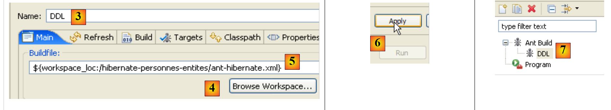 |
- in [3]: assegnare un nome alla configurazione ant
- in [5]: selezionare lo script ant utilizzando il pulsante [4]
- in [6]: applicare le modifiche
- in [7]: è stata creata la configurazione ant DDL
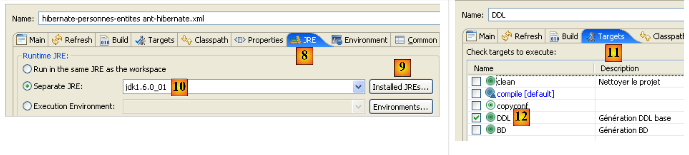 |
 |
- in [8]: nella scheda JRE si definisce il JRE da utilizzare. Il campo [10] è normalmente precompilato con il JRE utilizzato da Eclipse. Di norma, quindi, non è necessario intervenire su questo pannello. Tuttavia, mi è capitato un caso in cui lo script ant non riusciva a trovare il compilatore <javac>. Quest’ultimo non si trova in un JRE (Java Runtime Environment), ma in un JDK (Java Development Kit). Lo strumento ant di Eclipse individua questo compilatore tramite la variabile d’ambiente JAVA_HOME (Start / Pannello di controllo / Prestazioni e manutenzione / Sistema / scheda Avanzate / pulsante Variabili d’ambiente) [A]. Se questa variabile non è stata definita, è possibile consentire a ant di individuare il compilatore <javac> inserendo in [10], non un JRE ma un JDK. Quest’ultimo è disponibile nella stessa cartella di JRE e [B]. Si utilizzerà il pulsante [9] per dichiarare il JDK tra i JRE disponibili e il [C], in modo da poterlo poi selezionare in [10].
- in [12]: nella scheda [Targets], si seleziona l’attività DDL. In questo modo, la configurazione ant, che abbiamo denominato DDL [7], corrisponderà all’esecuzione dell’attività denominata DDL [12] che, come sappiamo, genera lo schema DDL del database delle immagini degli oggetti @Entity dell’applicazione.
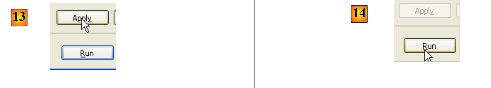 |
- in [13]: si convalida la configurazione
- in [14]: la si esegue
Nella vista [console] si ottengono i log relativi all’esecuzione dell’attività ant DDL:
Buildfile: C:\data\2006-2007\eclipse\dvp-jpa\hibernate\direct\personnes-entites\ant-hibernate.xml
clean:
[delete] Deleting directory C:\data\2006-2007\eclipse\dvp-jpa\hibernate\direct\personnes-entites\bin
[mkdir] Created dir: C:\data\2006-2007\eclipse\dvp-jpa\hibernate\direct\personnes-entites\bin
compile:
[javac] Compiling 3 source files to C:\data\2006-2007\eclipse\dvp-jpa\hibernate\direct\personnes-entites\bin
copyconf:
[copy] Copying 2 files to C:\data\2006-2007\eclipse\dvp-jpa\hibernate\direct\personnes-entites\bin
DDL:
[hibernatetool] Executing Hibernate Tool with a JPA Configuration
[hibernatetool] 1. task: hbm2ddl (Generates database schema)
[hibernatetool] drop table if exists jpa01_personne;
[hibernatetool] create table jpa01_personne (
[hibernatetool] ID integer not null auto_increment,
[hibernatetool] VERSION integer not null,
[hibernatetool] NOM varchar(30) not null unique,
[hibernatetool] PRENOM varchar(30) not null,
[hibernatetool] DATENAISSANCE date not null,
[hibernatetool] MARIE bit not null,
[hibernatetool] NBENFANTS integer not null,
[hibernatetool] primary key (ID)
[hibernatetool] ) ENGINE=InnoDB;
BUILD SUCCESSFUL
Total time: 5 seconds
- si ricorda che l’attività DDL ha come nome [hibernatetool] (riga 10) e che dipende dalle attività clean (riga 2), compile (riga 5) e copyconf (riga 7).
- riga 10: l'attività [hibernatetool] utilizza il file [persistence.xml] di una configurazione JPA
- riga 11: il processo [hbm2ddl] genererà lo schema DDL del database
- righe 12-22: lo schema DDL del database
Ricordiamo che avevamo richiesto all’attività [hbm2ddl] di generare lo schema DDL in una posizione specifica:
<hbm2ddl drop="true" create="true" export="true" outputfilename="ddl/schema.sql" delimiter=";" format="true" />
- riga 74: lo schema deve essere generato nel file ddl/schema.sql. Verifichiamo:
 |
- in [1]: il file ddl/schema.sql è effettivamente presente (eseguire F5 per aggiornare l’albero)
- in [2]: il suo contenuto. Si tratta dello schema di un database MySQL5. Il file di configurazione [persistence.xml] del livello JPA specificava infatti un SGBD MySQL5 (riga 8 qui sotto):
<!-- connessione JDBC -->
<property name="hibernate.connection.driver_class" value="com.mysql.jdbc.Driver" />
...
<!-- creazione automatica dello schema -->
<property name="hibernate.hbm2ddl.auto" value="create" />
<!-- Dialetto -->
<property name="hibernate.dialect" value="org.hibernate.dialect.MySQL5InnoDBDialect" />
<!-- proprietà DataSource c3p0 -->
...
Esaminiamo il collegamento oggetto/relazionale che è stato realizzato qui, analizzando la configurazione dell’oggetto @Entity Personne e lo schema DDL generato:
 |
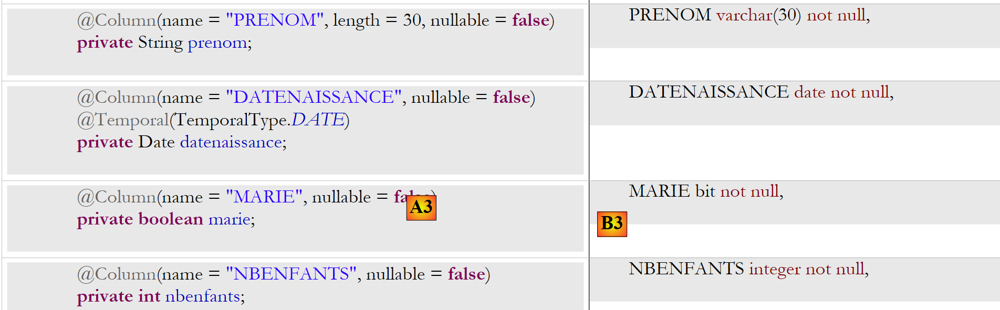 |
Si notino alcuni punti:
- A1-B1: il nome della tabella specificato in A1 corrisponde effettivamente a quello utilizzato in B1. Si noti che drop precede create in B1.
- A2-B2: mostra la modalità di generazione della chiave primaria. La modalità AUTO specificata in A2 si è tradotta nell'attributo autoincrement proprio di MySQL5. La modalità di generazione della chiave primaria è solitamente specifica per SGBD.
- A3-B3: mostra il bit del tipo SQL specifico per MySQL5 per rappresentare un tipo Java boolean.
Ripetiamo questo test con un altro SGBD:
 |
- la cartella [conf] [1] contiene i file [persistence.xml] per vari SGBD. Prendiamo ad esempio il file Oracle [2] e inseriamolo nella cartella [META-INF] [3] al posto di quello precedente. Il suo contenuto è il seguente:
<?xml version="1.0" encoding="UTF-8"?>
<persistence version="1.0" xmlns="http://java.sun.com/xml/ns/persistence">
<persistence-unit name="jpa" transaction-type="RESOURCE_LOCAL">
<!-- provider -->
<provider>org.hibernate.ejb.HibernatePersistence</provider>
<properties>
<!-- Classi persistenti -->
<property name="hibernate.archive.autodetection" value="class, hbm" />
<!-- log SQL
<property name="hibernate.show_sql" value="true"/>
<property name="hibernate.format_sql" value="true"/>
<property name="use_sql_comments" value="true"/>
-->
<!-- connessione JDBC -->
<property name="hibernate.connection.driver_class" value="oracle.jdbc.OracleDriver" />
<property name="hibernate.connection.url" value="jdbc:oracle:thin:@localhost:1521:xe" />
<property name="hibernate.connection.username" value="jpa" />
<property name="hibernate.connection.password" value="jpa" />
<!-- creazione automatica dello schema -->
<property name="hibernate.hbm2ddl.auto" value="create" />
<!-- Dialetto -->
<property name="hibernate.dialect" value="org.hibernate.dialect.OracleDialect" />
<!-- proprietà DataSource c3p0 -->
<property name="hibernate.c3p0.min_size" value="5" />
<property name="hibernate.c3p0.max_size" value="20" />
<property name="hibernate.c3p0.timeout" value="300" />
<property name="hibernate.c3p0.max_statements" value="50" />
<property name="hibernate.c3p0.idle_test_period" value="3000" />
</properties>
</persistence-unit>
</persistence>
Si invita il lettore a consultare negli allegati la sezione dedicata a Oracle (paragrafo 5.7), in particolare per comprendere la configurazione di JDBC.
Solo la riga 25 è realmente importante in questo contesto: si indica a Hibernate che d'ora in poi il SGBD è un SGBD Oracle. L'esecuzione del task ant DDL produce il risultato [4] riportato sopra. Si noti che lo schema Oracle è diverso dallo schema MySQL5. Questo è uno dei punti di forza di JPA: lo sviluppatore non deve preoccuparsi di questi dettagli, il che aumenta notevolmente la portabilità dei suoi sviluppi.
2.1.8. Esecuzione del task ant BD
Si ricorderà forse che il task ant, denominato BD, svolge la stessa funzione del task ant DDL, ma genera anche il database. È quindi necessario che venga avviata l’attività SGBD. Consideriamo il caso di SGBD e MySQL5 e invitiamo il lettore a copiare il file [conf/mysql5/persistence.xml] nella cartella [src/META-INF]. Per verificare il funzionamento dell’attività, utilizzeremo il plugin SQL Explorer (cfr. paragrafo 5.2.6) per verificare lo stato del file jpa BD prima e dopo l’esecuzione delle attività ant e BD.
Innanzitutto, occorre creare una nuova configurazione ant per eseguire l'attività BD. Si invita il lettore a seguire la procedura illustrata per la configurazione ant DDL al paragrafo 2.1.7. La nuova configurazione ant si chiamerà BD:
 |
- in [1]: si duplica la configurazione precedente denominata DDL
- in [2]: la nuova configurazione viene denominata BD. Essa esegue l’attività ant BD [3] che genera fisicamente il database.
- Fatto ciò, avviare SGBD e MySQL5 (paragrafo 5.5).
Ora utilizziamo il plugin SQL Explorer per esplorare i database gestiti da SGBD. Il lettore deve prima familiarizzarsi con questo plugin, se necessario (cfr. paragrafo 5.2.6).
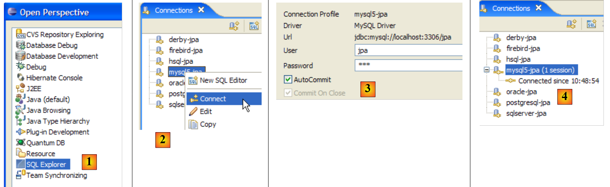 |
- [1]: si apre la prospettiva SQL Explorer [Window / Open Perspective / Other]
- [2]: se necessario, creare una connessione [mysql5-jpa] (cfr. paragrafo 5.5.5, pagina 252) e aprirla
- [3]: si effettua l’autenticazione jpa / jpa
- [4]: si è connessi a MySQL5.
 |
- in [5]: il jpa BD ha una sola tabella: [articles]
- in [6]: si avvia l’esecuzione dell’attività ant BD. Poiché ci si trova nella prospettiva [SQL Explorer], non è visibile la vista [Console] che mostra i log dell'attività. È possibile visualizzare questa vista [Window / Show View / ...] oppure tornare alla prospettiva Java [Window / Open Perspective / ...].
- In [7]: una volta completata l’attività Ant BD, tornare eventualmente alla prospettiva [SQL Explorer] e aggiornare la struttura ad albero del JPA BD.
- in [8]: si vede la tabella [jpa01_personne] che è stata creata.
Si invita il lettore a ripetere questa generazione di BD con altri SGBD. La procedura da seguire è la seguente:
- copiare il file [conf/<sgbd>/persistence.xml] nella cartella [src/META-INF], dove <sgbd> è il SGBD testato
- avviare <sgbd> seguendo le istruzioni riportate negli allegati relativi a tale file
- nella vista SQL Explorer, creare una connessione a <sgbd>. Anche questa operazione è spiegata negli allegati per ciascuno dei SGBD
- ripetere i test precedenti
A questo punto, abbiamo acquisito alcune conoscenze:
- comprendiamo meglio il concetto di ponte oggetto-relazionale. In questo caso è stato realizzato da Hibernate. In seguito utilizzeremo Toplink.
- sappiamo che questo ponte oggetto-relazionale è configurato in due punti:
- negli oggetti @Entity, dove si indicano i collegamenti tra i campi degli oggetti e le colonne delle tabelle di BD
- in [META-INF/persistence.xml], dove si forniscono all’implementazione JPA le informazioni relative ai due elementi del ponte oggetto/relazionale: gli oggetti @Entity (oggetto) e il database (relazionale).
- Abbiamo creato due attività Ant, denominate DDL e BD, che ci consentono di creare il database sulla base della configurazione precedente, prima ancora di scrivere qualsiasi codice Java.
Ora che il livello JPA della nostra applicazione è correttamente configurato, possiamo iniziare a esplorare API e JPA con il codice Java.
2.1.9. Il contesto di persistenza di un’applicazione
Chiariamo un po’ l’ambiente di esecuzione di un client JPA:
 |
Sappiamo che il livello JPA [2] crea un ponte oggetto [3] / relazionale [4]. Si definisce "contesto di persistenza" l'insieme degli oggetti gestiti dal livello JPA nell'ambito di questo ponte oggetto/relazionale. Per accedere ai dati del contesto di persistenza, un client JPA [1] deve passare attraverso il livello JPA [2]:
- può creare un oggetto e richiedere al livello JPA di renderlo persistente. L’oggetto diventa quindi parte del contesto di persistenza.
- può richiedere al livello [JPA] un riferimento a un oggetto persistente esistente.
- può modificare un oggetto persistente ottenuto dal livello JPA.
- può richiedere al livello JPA di eliminare un oggetto dal contesto di persistenza.
Il livello JPA presenta al client un'interfaccia denominata [EntityManager] che, come suggerisce il nome, consente di gestire gli oggetti @Entity del contesto di persistenza. Di seguito sono riportati i principali metodi di questa interfaccia:
inserisce entity nel contesto di persistenza | |
rimuove entity dal contesto di persistenza | |
unisce un oggetto entity del client non gestito dal contesto di persistenza con l'oggetto entity del contesto di persistenza avente la stessa chiave primaria. Il risultato restituito è l'oggetto entity del contesto di persistenza. | |
inserisce nel contesto di persistenza un oggetto ricercato nel database tramite la sua chiave primaria. Il tipo T dell'oggetto consente al livello JPA di sapere quale tabella interrogare. L'oggetto persistente così creato viene restituito al client. | |
crea un oggetto Query a partire da una query JPQL (Java Persistence Query Language). Una query JPQL è analoga a una query SQL, tranne per il fatto che si interrogano oggetti anziché tabelle. | |
metodo analogo al precedente, con la differenza che queryText è, un comando SQL e non JPQL. | |
Metodo identico a createQuery, tranne per il fatto che l'ordine JPQL queryText è stato è stato esternalizzato in un file di configurazione e associato a un nome. È proprio questo nome a costituire il parametro del metodo. |
Un oggetto EntityManager ha un ciclo di vita che non è necessariamente quello dell’applicazione. Ha un inizio e una fine. Pertanto, un client JPA può lavorare in successione con diversi oggetti EntityManager. Il contesto di persistenza associato a un EntityManager ha lo stesso ciclo di vita di quest’ultimo. Sono indissociabili l’uno dall’altro. Quando un oggetto EntityManager viene chiuso, il suo contesto di persistenza viene, se necessario, sincronizzato con il database e poi cessa di esistere. È necessario creare un nuovo EntityManager per disporre nuovamente di un contesto di persistenza.
Il client JPA può creare un EntityManager e quindi un contesto di persistenza con la seguente istruzione:
EntityManagerFactory emf = Persistence.createEntityManagerFactory("jpa");
- javax.persistence.Persistence è una classe statica che consente di ottenere una factory di oggetti EntityManager. Questa factory è collegata a una specifica unità di persistenza. Ricordiamo che il file di configurazione [META-INF/persistence.xml] consente di definire le unità di persistenza e che queste hanno un nome:
<persistence-unit name="jpa" transaction-type="RESOURCE_LOCAL">
Nell’esempio sopra riportato, l’unità di persistenza si chiama jpa. Ad essa è associata un’intera configurazione specifica, in particolare il SGBD con cui interagisce. L'istruzione [Persistence.createEntityManagerFactory("jpa")] crea una fabbrica di oggetti di tipo EntityManagerFactory in grado di fornire oggetti EntityManager destinati a gestire contesti di persistenza legati all'unità di persistenza denominata jpa. L'ottenimento di un oggetto EntityManager e quindi di un contesto di persistenza avviene a partire dall'oggetto EntityManagerFactory nel modo seguente:
I seguenti metodi dell’interfaccia [EntityManager] consentono di gestire il ciclo di vita del contesto di persistenza:
il contesto di persistenza viene chiuso. Forza la sincronizzazione del contesto di persistenza con il database:
| |
il contesto di persistenza viene svuotato di tutti i suoi oggetti ma non chiuso. | |
il contesto di persistenza viene sincronizzato con il database secondo le modalità descritte per close() |
Il client JPA può forzare la sincronizzazione del contesto di persistenza con il database utilizzando il metodo [EntityManager].flush precedente. La sincronizzazione può essere esplicita o implicita. Nel primo caso, spetta al client eseguire le operazioni flush quando desidera effettuare le sincronizzazioni; in caso contrario, queste vengono eseguite in determinati momenti che specificheremo di seguito. La modalità di sincronizzazione è gestita dai seguenti metodi dell’interfaccia [EntityManager]:
Esistono due possibili valori per flushmode: FlushModeType.AUTO (impostazione predefinita): la sincronizzazione avviene prima di ogni richiesta SELECT effettuata sul database. FlushModeType.COMMIT: la sincronizzazione avviene solo al termine delle transazioni sul database. | |
indica la modalità di sincronizzazione attuale |
Riassumiamo. Nella modalità FlushModeType.AUTO, che è quella predefinita, il contesto di persistenza verrà sincronizzato con il database nei seguenti momenti:
- prima di ogni operazione SELECT,
- al termine di una transazione sulla base
- a seguito di un'operazione flush o close sul contesto di persistenza
Nella modalità FlushModeType.COMMIT, il procedimento è identico, tranne per l’operazione 1 che non viene eseguita. La modalità normale di interazione con il livello JPA è una modalità transazionale. Il client esegue diverse operazioni sul contesto di persistenza, all’interno di una transazione. In questo caso, i momenti di sincronizzazione del contesto di persistenza con il database corrispondono ai casi 1 e 2 sopra indicati nella modalità AUTO, e al solo caso 2 nella modalità COMMIT.
Concludiamo con il codice API dell’interfaccia Query, che consente di inviare comandi JPQL al contesto di persistenza oppure comandi SQL direttamente al database per recuperare i dati. L’interfaccia Query è la seguente:
 |
Dovremo utilizzare i metodi da 1 a 4 sopra indicati:
- 1 - il metodo getResultList esegue un SELECT che restituisce diversi oggetti. Questi saranno ottenuti in un oggetto List. Questo oggetto è un'interfaccia. Essa fornisce un oggetto Iterator che consente di scorrere gli elementi della lista L nella forma seguente:
Iterator iterator = L.iterator();
while (iterator.hasNext()) {
// utilizzare l'oggetto iterator.next() che rappresenta l'elemento corrente dell'elenco
...
}
L'elenco L può essere utilizzato anche con un for:
for (Object o : L) {
// utilizzare l'oggetto o
}
- 2 - il metodo getSingleResult esegue un comando JPQL / SQL / SELECT che restituisce un unico oggetto.
- 3 - Il metodo executeUpdate esegue un comando SQL di tipo «update» o «delete» e restituisce il numero di righe interessate dall’operazione.
- 4 - Il metodo setParameter(String, Object) consente di assegnare un valore a un parametro denominato di un comando JPQL configurato
- 5 - Il metodo setParameter(int, Object) non identifica il parametro tramite il suo nome, ma tramite la sua posizione nell’ordine JPQL.
2.1.10. Un primo client JPA
Torniamo a una prospettiva Java del progetto:
 |
Ora conosciamo praticamente tutto di questo progetto, tranne il contenuto della cartella [src/tests] che stiamo esaminando in questo momento. La cartella contiene due programmi di test del livello JPA:
- [InitDB.java] è un programma che inserisce alcune righe nella tabella [jpa01_personne] del database. Il suo codice ci fornirà i primi elementi del livello JPA.
- [Main.java] è un programma che esegue le operazioni CRUD sulla tabella [jpa01_personne]. L’analisi del suo codice ci consentirà di affrontare i concetti fondamentali del contesto di persistenza e del ciclo di vita degli oggetti di tale contesto.
2.1.10.1. Il codice
Il codice del programma [InitDB.java] è il seguente:
package tests;
import java.text.ParseException;
import java.text.SimpleDateFormat;
import javax.persistence.EntityManager;
import javax.persistence.EntityManagerFactory;
import javax.persistence.EntityTransaction;
import javax.persistence.Persistence;
import entites.Personne;
public class InitDB {
// costanti
private final static String TABLE_NAME = "jpa01_personne";
public static void main(String[] args) throws ParseException {
// Unità di persistenza
EntityManagerFactory emf = Persistence.createEntityManagerFactory("jpa");
// recuperare un EntityManagerFactory dall'unità di persistenza
EntityManager em = emf.createEntityManager();
// inizio transazione
EntityTransaction tx = em.getTransaction();
tx.begin();
// eliminare gli elementi dalla tabella delle persone
em.createNativeQuery("delete from " + TABLE_NAME).executeUpdate();
// creare due persone
Personne p1 = new Personne("Martin", "Paul", new SimpleDateFormat("dd/MM/yy").parse("31/01/2000"), true, 2);
Personne p2 = new Personne("Durant", "Sylvie", new SimpleDateFormat("dd/MM/yy").parse("05/07/2001"), false, 0);
// persistenza delle persone
em.persist(p1);
em.persist(p2);
// visualizzazione delle persone
System.out.println("[personnes]");
for (Object p : em.createQuery("select p from Personne p order by p.nom asc").getResultList()) {
System.out.println(p);
}
// fine transazione
tx.commit();
// fine EntityManager
em.close();
// fine EntityManagerFactory
emf.close();
// registro
System.out.println("terminé ...");
}
}
Questo codice va letto alla luce di quanto spiegato nel paragrafo 2.1.9.
- riga 19: viene richiesto un oggetto EntityManagerFactory emf per l’unità di persistenza jpa (definita in persistence.xml). Questa operazione viene normalmente eseguita una sola volta nel corso della vita di un’applicazione.
- riga 21: viene richiesto un oggetto EntityManager em per gestire un contesto di persistenza.
- riga 23: viene richiesto un oggetto Transaction per gestire una transazione. Si ricorda che le operazioni sul contesto di persistenza vengono eseguite all’interno di una transazione. Vedremo che ciò non è obbligatorio, ma che in tal caso si possono verificare dei problemi. Se l’applicazione viene eseguita in un contenitore EJB3, le operazioni sul contesto di persistenza vengono sempre eseguite all’interno di una transazione.
- riga 24: la transazione ha inizio
- riga 26: esegue un comando SQL DELETE sulla tabella "jpa01_personne" (nativeQuery). Si procede in questo modo per svuotare la tabella da ogni contenuto e poter così osservare meglio il risultato dell’esecuzione dell’applicazione [InitDB]
- righe 28-29: vengono creati due oggetti Personne, denominati p1 e p2. Si tratta di oggetti normali che, per il momento, non hanno nulla a che vedere con il contesto di persistenza. Per quanto riguarda il contesto di persistenza, Hibernate definisce questi oggetti come transitori (transient), per distinguerli dagli oggetti persistenti (persistent) che sono gestiti dal contesto di persistenza. Parleremo piuttosto di oggetti non persistenti (espressione non francese) per indicare che non sono ancora gestiti dal contesto di persistenza e di oggetti persistenti per quelli che sono gestiti da quest’ultimo. Troveremo una terza categoria di oggetti, gli oggetti distaccati (detached), che sono oggetti precedentemente persistenti ma il cui contesto di persistenza è stato chiuso. Il client può detenere riferimenti a tali oggetti, il che spiega perché non vengono necessariamente distrutti alla chiusura del contesto di persistenza. Si dice quindi che si trovino in stato distaccato. L’operazione [EntityManager].merge consente di ricollegarli a un contesto di persistenza appena creato.
- righe 31-32: le persone p1 e p2 vengono integrate nel contesto di persistenza tramite l’operazione [EntityManager].persist. Diventano quindi oggetti persistenti.
- righe 35-37: viene eseguito un comando JPQL "select p from Personne p order by p.nom asc". Personne non è la tabella (che si chiama jpa01_personne), ma l’oggetto @Entity associato alla tabella. Qui si tratta di una query JPQL (Java Persistence Query Language) sul contesto di persistenza e non di un comando SQL sul database. Detto questo, a parte l’oggetto Personne che ha sostituito la tabella jpa01_personne, le sintassi sono identiche. Un ciclo for scorre l’elenco (di persone) risultante dalla query select per visualizzarne ogni elemento sulla console. In questo caso si vuole verificare che nella tabella siano effettivamente presenti gli elementi inseriti nel contesto di persistenza alle righe 31-32. In modo trasparente, avrà luogo una sincronizzazione del contesto di persistenza con il database. Infatti, verrà emessa una query select e abbiamo detto che questo era uno dei casi in cui veniva effettuata una sincronizzazione. È quindi in questo momento che, in background, JPA / Hibernate invierà i due comandi SQL e insert che inseriranno le due persone nella tabella jpa01_personne. L’operazione persist non lo aveva fatto. Questa operazione integra oggetti nel contesto di persistenza senza che ciò abbia conseguenze sul database. Le operazioni effettive avvengono durante le sincronizzazioni, in questo caso proprio prima dell’operazione select sul database.
- riga 39: si conclude la transazione avviata alla riga 24. Avrà nuovamente luogo una sincronizzazione. Qui non accadrà nulla poiché il contesto di persistenza non è cambiato dall’ultima sincronizzazione.
- riga 41: si chiude il contesto di persistenza.
- riga 43: si chiude la fabbrica di EntityManager.
2.1.10.2. L' 'esecuzione del codice
- avviare SGBD MySQL5
- inserire conf/mysql5/persistence.xml in META-INF/persistence.xml se necessario
- eseguire l'applicazione [InitDB]
Si ottengono i seguenti risultati:
 |
- in [1]: l'output della console nella prospettiva Java. Si ottiene il risultato previsto.
- in [2]: si verifica il contenuto della tabella [jpa01_personne] con la prospettiva SQL Explorer, come spiegato nel paragrafo 2.1.8. Si possono notare due punti:
- la chiave primaria ID è stata generata automaticamente
- lo stesso vale per il numero di versione. Si nota che la prima versione ha il numero 0..
Ecco i primi elementi della struttura JPA. Siamo riusciti a inserire dei dati in una tabella. Partiremo da queste basi per scrivere il secondo test, ma prima parliamo dei log.
2.1.11. Implementazione dei log di Hibernate
È possibile conoscere i comandi SQL emessi sul database dal livello JPA / Hibernate. È interessante conoscerli per verificare se il livello JPA sia altrettanto efficiente di uno sviluppatore che avesse scritto personalmente i comandi SQL.
Con JPA / Hibernate, i log SQL possono essere controllati nel file [persistence.xml]:
<!-- Classi persistenti -->
<property name="hibernate.archive.autodetection" value="class, hbm" />
<!-- log SQL
<property name="hibernate.show_sql" value="true"/>
<property name="hibernate.format_sql" value="true"/>
<property name="use_sql_comments" value="true"/>
-->
<!-- connessione JDBC -->
<property name="hibernate.connection.driver_class" value="com.mysql.jdbc.Driver" />
- righe 4-6: i log SQL non erano ancora attivati. Ora li attiviamo rimuovendo il tag di commento dalle righe 3 e 7.
Si riesegue l’applicazione [InitDB]. I messaggi visualizzati in console diventano quindi i seguenti:
- righe 2-4: l'ordine SQL delete derivante dall'istruzione:
// eliminare gli elementi dalla tabella delle persone
em.createNativeQuery("delete from " + TABLE_NAME).executeUpdate();
- righe 5-18: gli ordini SQL insert derivanti dalle istruzioni:
// persistenza delle persone
em.persist(p1);
em.persist(p2);
- righe 21-32: il comando SQL select derivante dall'istruzione:
for (Object p : em.createQuery("select p from Personne p order by p.nom asc").getResultList())
Se si effettuano visualizzazioni intermedie sulla console, si noterà che la scrittura dei log SQL relativi a un'istruzione I del codice Java avviene nel momento in cui l'istruzione I viene eseguita. Ciò non significa che il comando SQL visualizzato venga eseguito sul database in quel momento. Viene infatti memorizzato nella cache per essere eseguito alla successiva sincronizzazione del contesto di persistenza con il database.
È possibile ottenere altri log tramite il file [src/log4j.properties]:
 |
- in [1], il file [log4j.properties] viene elaborato dall’archivio [log4j-1.2.13.jar] [2] dello strumento denominato LOG4j (Logs for Java) disponibile all'URL [http://logging.apache.org/log4j/docs/index.html]. Inserito nella cartella [src] del progetto Eclipse, sappiamo che [log4j.properties] verrà copiato automaticamente nella cartella [bin] del progetto [3]. Una volta fatto ciò, il file si trova ora nella cartella classpath del progetto ed è da lì che l’archivio [2] lo preleverà.
Il file [log4j.properties] ci permette di monitorare alcuni log di Hibernate. Nelle esecuzioni precedenti il suo contenuto era il seguente:
# Invia i messaggi di log a stdout
log4j.appender.stdout=org.apache.log4j.ConsoleAppender
log4j.appender.stdout.Target=System.out
log4j.appender.stdout.layout=org.apache.log4j.PatternLayout
log4j.appender.stdout.layout.ConversionPattern=%d{ABSOLUTE} %5p %c{1}:%L - %m%n
# Opzioni di registrazione di root
log4j.rootLogger=ERROR, stdout
# Opzioni di registrazione in modalità ibernazione (INFO mostra solo i messaggi di avvio)
#log4j.logger.org.hibernate=INFO
# Registra gli argomenti di runtime dei parametri di binding di JDBC
#log4j.logger.org.hibernate.type=DEBUG
Non mi soffermerò molto su questa configurazione, non avendo mai avuto il tempo di informarmi seriamente su LOG4j.
- Le righe da 1 a 8 sono presenti in tutti i file log4j.properties che ho avuto modo di incontrare
- le righe 10-14 sono presenti nei file log4j.properties degli esempi di Hibernate.
- Riga 11: controlla i log generali di Hibernate. Poiché la riga è commentata, questi log sono qui disabilitati. Sono disponibili diversi livelli di log: INFO (informazioni generali sulle attività di Hibernate), WARN (Hibernate segnala un possibile problema), DEBUG (log dettagliati). Il livello INFO è il meno dettagliato, mentre la modalità DEBUG è la più dettagliata. Attivando la riga 11 è possibile sapere cosa sta facendo Hibernate, in particolare all’avvio dell’applicazione. Spesso è utile.
- La riga 12, se attiva, permette di conoscere gli argomenti effettivamente utilizzati durante l’esecuzione delle query SQL configurate.
Iniziamo rimuovendo il commento dalla riga 14
# Registra gli argomenti di runtime dei parametri di binding di JDBC
log4j.logger.org.hibernate.type=DEBUG
e rieseguiamo [InitDB]. I nuovi log generati da questa modifica sono i seguenti (vista parziale):
- le righe 8-10 sono nuovi log generati dall’attivazione della riga 14 di [log4j.properties]. Indicano i 5 valori assegnati ai parametri formali ? della query parametrizzata delle righe 2-7. Si nota quindi che la colonna VERSION riceverà il valore 0 (riga 8).
Ora attiviamo la riga 11 di [log4j.properties]:
# Opzioni di registrazione di Hibernate (INFO mostra solo i messaggi di avvio)
log4j.logger.org.hibernate=INFO
e rieseguiamo [InitDB]:
La lettura di questi log fornisce molte informazioni interessanti:
- riga 7: Hibernate indica il nome di una classe @Entity che ha trovato
- riga 8: indica che la classe [Personne] verrà associata alla tabella [jpa01_personne]
- riga 9: indica il pool di connessioni C3P0 che verrà utilizzato, il nome del driver JDBC, l'URL del database da gestire
- riga 10: fornisce ulteriori caratteristiche del collegamento JDBC: proprietario, tipo di commit, ...
- riga 14: il dialetto utilizzato per comunicare con SGBD
- riga 15: il tipo di transazione utilizzato. JDBCTransactionFactory indica che l'applicazione gestisce autonomamente le proprie transazioni. Non viene eseguita in un contenitore EJB3 che fornirebbe un proprio servizio di transazioni.
- Le righe successive si riferiscono a opzioni di configurazione di Hibernate che non abbiamo incontrato. Il lettore interessato è invitato a consultare la documentazione di Hibernate.
- riga 37: i comandi SQL verranno visualizzati sulla console. Ciò è stato richiesto in [persistence.xml]:
<property name="hibernate.show_sql" value="true" />
<property name="hibernate.format_sql" value="true" />
<property name="use_sql_comments" value="true" />
- righe 43-45: lo schema del database viene esportato nei file SGBD e c.a.d. Il database viene svuotato e poi ricreato. Questo meccanismo deriva dalla configurazione effettuata in [persistence.xml] (riga 4 qui sotto):
...
<property name="hibernate.connection.password" value="jpa" />
<!-- Creazione automatica dello schema -->
<property name="hibernate.hbm2ddl.auto" value="create" />
<!-- Dialetto -->
...
Quando un’applicazione “si blocca” con un’eccezione Hibernate che non si riesce a comprendere, si inizierà attivando i log di Hibernate in modalità DEBUG in [log4j.properties] per fare chiarezza:
# Opzione logger principale
log4j.rootLogger=ERROR, stdout
# Opzioni di registrazione di Hibernate (INFO mostra solo i messaggi di avvio)
log4j.logger.org.hibernate=DEBUG
Nel prosieguo di questo documento, i log sono disattivati per impostazione predefinita al fine di ottenere una visualizzazione della console più leggibile.
2.1.12. Scoprire il linguaggio JPQL / HQL con la console Hibernate
Nota: questa sezione richiede il plugin Hibernate Tools (paragrafo 5.2.5).
Nel codice dell’applicazione [InitDB] abbiamo utilizzato una query JPQL. JPQL (Java Persistence Query Language) è un linguaggio per l’interrogazione del contesto di persistenza. La query riscontrata era la seguente:
Essa selezionava tutti gli elementi della tabella associata all’@Entity [Personne] e li restituiva in ordine crescente in base al nome. Nella query sopra riportata, p.nom è il campo «nome» di un’istanza p della classe [Personne]. Una query JPQL opera quindi sugli oggetti @Entity del contesto di persistenza e non direttamente sulle tabelle del database. Il livello JPA tradurrà a sua volta questa query JPQL in una query SQL adeguata al SGBD con cui opera. Pertanto, nel caso di un’implementazione JPA / Hibernate collegata a un SGBD MySQL5, la query precedente JPQL viene tradotta nella seguente query SQL:
select
personne0_.ID as ID0_,
personne0_.VERSION as VERSION0_,
personne0_.NOM as NOM0_,
personne0_.PRENOM as PRENOM0_,
personne0_.DATENAISSANCE as DATENAIS5_0_,
personne0_.MARIE as MARIE0_,
personne0_.NBENFANTS as NBENFANTS0_
from
jpa01_personne personne0_
order by
personne0_.NOM asc
Il livello JPA ha utilizzato la configurazione dell'oggetto @Entity [Personne] per generare l'ordine corretto SQL. In questo caso è stato implementato il ponte oggetto/relazionale.
Il plugin [Hibernate Tools] (paragrafo 5.2.5) offre uno strumento denominato “Console Hibernate” che consente
- di emettere comandi JPQL o del superset HQL (Hibernate Query Language) sul contesto di persistenza
- di ottenerne i risultati
- di conoscere l’equivalente SQL che è stato eseguito sul database
La console di Hibernate è uno strumento di grande valore per imparare il linguaggio JPQL e familiarizzare con il bridge JPQL / SQL. È noto che JPA si è fortemente ispirato a strumenti ORM come Hibernate o Toplink. JPQL è molto simile al linguaggio HQL di Hibernate, ma non ne riprende tutte le funzionalità. Nella console di Hibernate è possibile impartire comandi HQL che verranno eseguiti normalmente nella console, ma che non fanno parte del linguaggio JPQL e che quindi non potrebbero essere utilizzati in un client JPA. Quando ciò accadrà, lo segnaleremo.
Creiamo una console Hibernate per il nostro attuale progetto Eclipse:
 |
- [1]: passiamo a una prospettiva [Hibernate Console] (Window / Open Perspective / Other)
- [2]: creiamo una nuova configurazione nella finestra [Hibernate Configuration]
- utilizzando il pulsante [4], selezioniamo il progetto Java per il quale viene creata la configurazione Hibernate. Il suo nome viene visualizzato in [3].
- In [5], assegniamo il nome desiderato a questa configurazione. In questo caso, abbiamo utilizzato [3].
- In [6], indichiamo che utilizziamo una configurazione JPA affinché lo strumento sappia che deve utilizzare il file [META-INF/persistence.xml]
- in [7]: indichiamo che in questo file [META-INF/persistence.xml] occorre utilizzare l’unità di persistenza denominata jpa.
- Nel file [8] si convalida la configurazione.
Successivamente, è necessario avviare il file SGBD. In questo caso, si tratta del file MySQL5.
 |
- in [1]: la configurazione creata presenta una struttura ad albero a tre rami
- in [2]: il ramo [Configuration] elenca gli oggetti che la console ha utilizzato per configurarsi: in questo caso l’@Entity Personne.
- in [3]: la Session Factory è un concetto di Hibernate simile a EntityManager di JPA. Realizza il ponte oggetto/relazionale grazie agli oggetti del ramo [Configuration]. In [3] vengono presentati gli oggetti del contesto di persistenza, in questo caso nuovamente l’@Entity Personne.
- In [4]: il database a cui si accede tramite la configurazione presente in [persistence.xml]. Qui si trova la tabella [jpa01_personne].
 |
- in [1], si crea un editor HQL
- nell’editor HQL,
- in [2], si sceglie la configurazione di Hibernate da utilizzare se ce ne sono diverse
- in [3], si digita il comando JPQL che si desidera eseguire
- in [4], lo si esegue
- in [5], si ottengono i risultati della query nella finestra [Hibernate Query Result]. Qui si possono incontrare due difficoltà:
- non si ottiene nulla (nessuna riga). La console Hibernate ha utilizzato il contenuto di [persistence.xml] per creare una connessione con SGBD. Tuttavia, questa configurazione presenta una proprietà che indica di svuotare il database:
<property name="hibernate.hbm2ddl.auto" value="create" />
È quindi necessario rieseguire l’applicazione [InitDB] prima di ripetere il comando JPQL sopra indicato.
- (continua)
- non è presente la finestra [Hibernate Query Result]. La si richiede tramite [Window / Show View / ...]
La finestra [Hibernate Dynamic SQL preview] ([1] qui sotto) consente di visualizzare la richiesta SQL che verrà eseguita per attuare il comando JPQL che si sta scrivendo. Non appena la sintassi del comando JPQL risulta corretta, in questa finestra compare il comando corrispondente SQL:
 |
- in [2], si cancella il comando precedente HQL
- in [3], se ne esegue uno nuovo
- in [4], il risultato
- in [5], il comando SQL che è stato eseguito sulla base
L'editor HQL offre un aiuto alla scrittura dei comandi HQL:
 |
- in [1]: una volta che l’editor riconosce che p è un oggetto Personne, può suggerirci i campi di p durante la digitazione.
- in [2]: un comando HQL errato. È necessario scrivere where p.marie=true.
- in [3]: l’errore viene segnalato nella finestra [SQL Preview]
Invitiamo il lettore a eseguire altri comandi HQL / JPQL sulla base.
2.1.13. Un secondo client JPA
Torniamo a una prospettiva Java del progetto:
|
- [InitDB.java] è un programma che inseriva alcune righe nella tabella [jpa01_personne] del database. L’analisi del suo codice ci ha permesso di acquisire i primi elementi di API e JPA.
- [Main.java] è un programma che esegue le operazioni CRUD sulla tabella [jpa01_personne]. L’analisi del suo codice ci consentirà di approfondire i concetti fondamentali relativi al contesto di persistenza e al ciclo di vita degli oggetti in tale contesto.
2.1.13.1. La struttura del codice
[Main.java] eseguirà una serie di test, ciascuno dei quali mira a illustrare un aspetto specifico di JPA:
 |
Il metodo [main]
- richiama in successione i metodi da test1 a test11. Presenteremo separatamente il codice di ciascuno di questi metodi.
- Utilizza inoltre metodi di utilità privati: clean, dump, log, getEntityManager, getNewEntityManager.
Presentiamo il metodo main e i cosiddetti metodi di utilità:
package tests;
...
import entites.Personne;
@SuppressWarnings("unchecked")
public class Main {
// Costanti
private final static String TABLE_NAME = "jpa01_personne";
// Contesto di persistenza
private static EntityManagerFactory emf = Persistence.createEntityManagerFactory("jpa");
private static EntityManager em = null;
// Oggetti condivisi
private static Personne p1, p2, newp1;
public static void main(String[] args) throws Exception {
// Pulizia del database
log("clean");clean();
// dump tabella
dump();
// test1
log("test1");test1();
...
// test11
log("test11");test11();
// fine contesto di persistenza
if (em.isOpen())
em.close();
// chiusura di EntityManagerFactory
emf.close();
}
// recupera l'EntityManager corrente
private static EntityManager getEntityManager() {
if (em == null || !em.isOpen()) {
em = emf.createEntityManager();
}
return em;
}
// recuperare un nuovo EntityManager
private static EntityManager getNewEntityManager() {
if (em != null && em.isOpen()) {
em.close();
}
em = emf.createEntityManager();
return em;
}
// visualizza il contenuto della tabella
private static void dump() {
// contesto di persistenza corrente
EntityManager em = getEntityManager();
// inizio transazione
EntityTransaction tx = em.getTransaction();
tx.begin();
// visualizza persone
System.out.println("[personnes]");
for (Object p : em.createQuery("select p from Personne p order by p.nom asc").getResultList()) {
System.out.println(p);
}
// fine transazione
tx.commit();
}
// azzeramento BD
private static void clean() {
// contesto di persistenza
EntityManager em = getEntityManager();
// inizio transazione
EntityTransaction tx = em.getTransaction();
tx.begin();
// eliminare gli elementi dalla tabella PERSONNES
em.createNativeQuery("delete from " + TABLE_NAME).executeUpdate();
// fine transazione
tx.commit();
}
// log
private static void log(String message) {
System.out.println("main : ----------- " + message);
}
// creazione di oggetti
public static void test1() throws ParseException {
...
}
// modifica di un oggetto del contesto
public static void test2() {
...
}
// richiesta di oggetti
public static void test3() {
...
}
// eliminazione di un oggetto appartenente al contesto di persistenza
public static void test4() {
....
}
// scollegare, ricollegare e modificare
public static void test5() {
...
}
// eliminare un oggetto che non appartiene al contesto di persistenza
public static void test6() {
...
}
// modificare un oggetto che non appartiene al contesto di persistenza
public static void test7() {
...
}
// riassociare un oggetto al contesto di persistenza
public static void test8() {
...
}
// una query SELECT provoca una sincronizzazione
// del database con il contesto di persistenza
public static void test9() {
....
}
// controllo di versione (blocco ottimistico)
public static void test10() {
...
}
// rollback di una transazione
public static void test11() throws ParseException {
...
}
}
- riga 13: l’oggetto EntityManagerFactory emf costruito a partire dall’unità di persistenza jpa definita in [persistence.xml]. Ci consentirà di creare, nel corso dell’applicazione, vari contesti di persistenza.
- riga 14: un contesto di persistenza EntityManager em ancora non inizializzato
- riga 17: tre oggetti [Personne] condivisi dai test
- riga 21: la tabella jpa01_personne viene svuotata e poi visualizzata alla riga 24 per assicurarsi di partire da una tabella vuota.
- righe 27-31: sequenza di test
- righe 34-35: chiusura del contesto di persistenza em, se era aperto.
- riga 38: chiusura dell’oggetto EntityManagerFactory emf.
- righe 42-47: il metodo [getEntityManager] rende l'oggetto EntityManager (ovvero il contesto di persistenza) corrente o ne crea uno nuovo se non esiste (righe 43-44).
- righe 50-56: il metodo [getNewEntityManager] crea un nuovo contesto di persistenza. Se ne esisteva uno in precedenza, viene chiuso (righe 51-52)
- righe 59-72: il metodo [dump] visualizza il contenuto della tabella [jpa01_personne]. Questo codice è già stato incontrato in [InitDB].
- righe 75-85: il metodo [clean] svuota la tabella [jpa01_personne]. Questo codice è già stato incontrato in [InitDB].
- righe 88-90: il metodo [log] visualizza sulla console il messaggio che gli viene passato come parametro, in modo che venga notato.
Ora possiamo passare all'analisi dei test.
2.1.13.2. Test 1
Il codice di test1 è il seguente:
// creazione di oggetti
public static void test1() throws ParseException {
// contesto di persistenza
EntityManager em = getEntityManager();
// creazione di persone
p1 = new Personne("Martin", "Paul", new SimpleDateFormat("dd/MM/yy").parse("31/01/2000"), true, 2);
p2 = new Personne("Durant", "Sylvie", new SimpleDateFormat("dd/MM/yy").parse("05/07/2001"), false, 0);
// inizio transazione
EntityTransaction tx = em.getTransaction();
tx.begin();
// persistenza delle persone
em.persist(p1);
em.persist(p2);
// fine transazione
tx.commit();
// visualizzazione della tabella
dump();
}
Questo codice è già stato incontrato in [InitDB]: crea due persone e le inserisce nel contesto di persistenza.
- riga 4: viene richiesto il contesto di persistenza corrente
- righe 6-7: si creano i due soggetti
- righe 9-15: i due soggetti vengono inseriti nel contesto di persistenza all’interno di una transazione.
- riga 15: a seguito del commit della transazione, avviene la sincronizzazione del contesto di persistenza con il database. Le due persone verranno aggiunte alla tabella [jpa01_personne].
- riga 17: si visualizza la tabella
L'output della console di questo primo test è il seguente:
main : ----------- test1
[personnes]
[2,0,Durant,Sylvie,05/07/2001,false,0]
[1,0,Martin,Paul,31/01/2000,true,2]
2.1.13.3. Test 2
Il codice di test2 è il seguente:
// modifica di un oggetto del contesto
public static void test2() {
// contesto di persistenza
EntityManager em = getEntityManager();
// inizio transazione
EntityTransaction tx = em.getTransaction();
tx.begin();
// si incrementa il numero di figli di p1
p1.setNbenfants(p1.getNbenfants() + 1);
// si modifica il suo stato civile
p1.setMarie(false);
// l'oggetto p1 viene salvato automaticamente (dirty checking)
// alla successiva sincronizzazione (commit o select)
// fine transazione
tx.commit();
// viene visualizzata la nuova tabella
dump();
}
- Il test 2 ha lo scopo di modificare un oggetto del contesto di persistenza e quindi visualizzare il contenuto della tabella per verificare se la modifica è stata effettuata
- riga 4: si recupera il contesto di persistenza corrente
- righe 6-7: le operazioni verranno eseguite all'interno di una transazione
- righe 9, 11: si modificano il numero di figli della persona p1 e il suo stato civile
- riga 15: fine della transazione, quindi sincronizzazione del contesto di persistenza con il database
- riga 17: visualizzazione della tabella
L'output della console del test 2 è il seguente:
- riga 4: la persona p1 prima della modifica
- riga 8: la persona p1 dopo la modifica. Si noti che il suo numero di versione è passato a 1. Questo viene incrementato di 1 ad ogni aggiornamento della riga.
2.1.13.4. Test 3
Il codice del test 3 è il seguente:
// richiedere oggetti
public static void test3() {
// contesto di persistenza
EntityManager em = getEntityManager();
// inizio transazione
EntityTransaction tx = em.getTransaction();
tx.begin();
// si richiede la persona p1
Personne p1b = em.find(Personne.class, p1.getId());
// poiché p1 è già nel contesto di persistenza, non è stato effettuato alcun accesso al database
// p1b e p1 sono gli stessi riferimenti
System.out.format("p1==p1b ? %s%n", p1 == p1b);
// richiedere un oggetto che non esiste restituisce un puntatore nullo
Personne px = em.find(Personne.class, -4);
System.out.format("px==null ? %s%n", px == null);
// fine transazione
tx.commit();
}
- Il test 3 riguarda il metodo [EntityManager.find], che consente di recuperare un oggetto dal database per inserirlo nel contesto di persistenza. D'ora in poi non spiegheremo più la transazione che avviene in tutti i test, tranne quando viene utilizzata in modo insolito.
- riga 9: si richiede al contesto di persistenza la persona che ha la stessa chiave primaria della persona p1. Ci sono due casi:
- p1 si trova già nel contesto di persistenza. È proprio questo il caso. Pertanto non viene effettuato alcun accesso al database. Il metodo find si limita a restituire un riferimento all'oggetto persistito.
- p1 non si trova nel contesto di persistenza. In questo caso viene effettuato un accesso al database tramite la chiave primaria fornita. La riga recuperata viene inserita nel contesto di persistenza e find restituisce il riferimento a questo nuovo oggetto persistito.
- riga 12: si verifica che find abbia restituito il riferimento all’oggetto p1 già presente nel contesto
- riga 14: viene richiesto un oggetto che non esiste né nel contesto di persistenza né nel database. Il metodo find restituisce quindi il puntatore null. Questo punto viene verificato alla riga 15.
L'output della console del test 3 è il seguente:
2.1.13.5. Test 4
Il codice del test 4 è il seguente:
// eliminare un oggetto appartenente al contesto di persistenza
public static void test4() {
// contesto di persistenza
EntityManager em = getEntityManager();
// inizio transazione
EntityTransaction tx = em.getTransaction();
tx.begin();
// si elimina l'oggetto persistito p2
em.remove(p2);
// fine transazione
tx.commit();
// viene visualizzata la nuova tabella
dump();
}
- Il test 4 si concentra sul metodo [EntityManager.remove], che consente di rimuovere un elemento dal contesto di persistenza e quindi dal database.
- riga 9: la persona p2 viene rimossa dal contesto di persistenza
- riga 11: sincronizzazione del contesto con il database
- riga 13: visualizzazione della tabella. Normalmente, la persona p2 non dovrebbe più essere presente.
L'output della console del test 4 è il seguente:
- riga 3: la persona p2 in test1
- righe 12-14: non esiste più al termine di test4.
2.1.13.6. Test 5
Il codice del test 5 è il seguente:
// scollegare, ricollegare e modificare
public static void test5() {
// nuovo contesto di persistenza
EntityManager em = getNewEntityManager();
// inizio transazione
EntityTransaction tx = em.getTransaction();
tx.begin();
// p1 scollegato
Personne oldp1=p1;
// p1 viene ricollegato al nuovo contesto
p1 = em.find(Personne.class, p1.getId());
// verifica
System.out.format("p1==oldp1 ? %s%n", p1 == oldp1);
// fine transazione
tx.commit();
// si incrementa il numero di figli di p1
p1.setNbenfants(p1.getNbenfants() + 1);
// viene visualizzata la nuova tabella
dump();
}
- il test 5 si concentra sul ciclo di vita degli oggetti persistenti attraverso diversi contesti di persistenza successivi. Finora, avevamo sempre utilizzato lo stesso contesto di persistenza nei vari test.
- riga 4: viene richiesto un nuovo contesto di persistenza. Il metodo [getNewEntityManager] chiude quello precedente e ne apre uno nuovo. Di conseguenza, gli oggetti p1 e p2 detenuti dall’applicazione non si trovano più in uno stato persistente. Appartenevano a un contesto che è stato chiuso. Si dice che si trovino in uno stato distaccato. Non appartengono al nuovo contesto di persistenza.
- righe 6-7: inizio della transazione. In questo caso, verrà utilizzata in modo insolito.
- riga 9: si annota l’indirizzo dell’oggetto p1, ora distaccato.
- riga 11: si richiede al contesto di persistenza la persona p1 (utilizzando la chiave primaria di p1). Poiché il contesto è nuovo, la persona p1 non vi è presente. Si effettuerà quindi un accesso al database. L’oggetto recuperato verrà inserito nel nuovo contesto.
- riga 13: si verifica che l’oggetto persistente p1 del contesto sia diverso dall’oggetto oldp1, che era il precedente oggetto p1 distaccato.
- riga 15: la transazione è terminata
- riga 17: si modifica, al di fuori della transazione, il nuovo oggetto persistito p1. Cosa succede in questo caso? Vogliamo scoprirlo.
- riga 19: si richiede la visualizzazione della tabella. Si ricorda che, a causa del select emesso dal metodo dump, viene eseguita automaticamente una sincronizzazione del contesto di persistenza con il database.
L'output della console del test 5 è il seguente:
- riga 5: il metodo find ha effettivamente effettuato un accesso al database, altrimenti i due puntatori sarebbero uguali
- righe 7 e 3: il numero di figli di p1 è effettivamente aumentato di 1. La modifica, effettuata al di fuori della transazione, è stata quindi presa in considerazione. Ciò dipende infatti dal SGBD utilizzato. In un SGBD, un comando SQL viene sempre eseguito all’interno di una transazione. Se il client JPA non avvia autonomamente una transazione esplicita, il SGBD avvierà una transazione implicita. Esistono due casi comuni:
- 1 - ogni singolo ordine SQL è oggetto di una transazione, aperta prima dell’ordine e chiusa dopo. Si dice che si è in modalità autocommit. Tutto avviene quindi come se il client JPA effettuasse transazioni per ogni singolo ordine SQL.
- 2 - L’ordine SGBD non è in modalità autocommit e avvia una transazione implicita al primo ordine SQL, che il cliente JPA emette al di fuori di una transazione, lasciando che sia il cliente stesso a chiuderla. Tutti gli ordini SQL emessi dal client JPA fanno quindi parte della transazione implicita. Questa può terminare in seguito a diversi eventi: il client chiude la connessione, avvia una nuova transazione, ...
Ci troviamo in una situazione che dipende dalla configurazione di SGBD. Abbiamo quindi un codice non portabile. Mostreremo più avanti un codice senza transazioni e vedremo che non tutti i SGBD hanno lo stesso comportamento rispetto a tale codice. Considereremo quindi che lavorare al di fuori delle transazioni sia un errore di programmazione.
- riga 7: si noti che il numero di versione è passato a 2.
2.1.13.7. Test 6
Il codice del test 6 è il seguente:
// eliminare un oggetto che non appartiene al contesto di persistenza
public static void test6() {
// nuovo contesto di persistenza
EntityManager em = getNewEntityManager();
// inizio transazione
EntityTransaction tx = em.getTransaction();
tx.begin();
// si elimina p1 che non appartiene al nuovo contesto
try {
em.remove(p1);
// fine transazione
tx.commit();
} catch (RuntimeException e1) {
System.out.format("Erreur à la suppression de p1 : [%s,%s]%n", e1.getClass().getName(), e1.getMessage());
// si esegue un rollback della transazione
try {
if (tx.isActive())
tx.rollback();
} catch (RuntimeException e2) {
System.out.format("Erreur au rollback [%s,%s]%n", e2.getClass().getName(), e2.getMessage());
}
}
// visualizzazione della nuova tabella
dump();
}
- Il test 6 cerca di eliminare un oggetto che non appartiene al contesto di persistenza.
- riga 4: viene richiesto un nuovo contesto di persistenza. Quello precedente viene quindi chiuso e gli oggetti in esso contenuti diventano distaccati. È il caso dell'oggetto p1 del precedente test 5.
- righe 6-7: inizio della transazione.
- riga 10: si elimina l'oggetto distaccato p1. Poiché si sa che ciò provocherà un'eccezione, l'operazione è stata racchiusa in un try/catch.
- riga 12: il commit non verrà eseguito.
- righe 16-21: una transazione deve terminare con un commit (tutte le operazioni della transazione sono confermate) o con un rollback (tutte le operazioni della transazione sono annullate). Si è verificata un'eccezione, quindi si esegue un rollback sulla transazione. Non c'è nulla da annullare poiché l'unica operazione della transazione è fallita, ma il rollback pone fine alla transazione. È la prima volta che utilizziamo l’operazione [EntityTransaction].rollback. Avremmo dovuto farlo fin dai primi esempi. Non l’abbiamo fatto per mantenere il codice semplice. Il lettore deve tuttavia tenere presente che il caso del rollback della transazione deve sempre essere previsto nel codice.
- riga 24: viene visualizzata la tabella. Normalmente, non dovrebbe essere cambiata.
L'output della console del test 6 è il seguente:
- riga 6: l’eliminazione di p1 non è andata a buon fine. Il messaggio di eccezione spiega che si è tentato di eliminare un oggetto distaccato, quindi non facente parte del contesto. Ciò non è possibile.
- riga 8: la persona p1 è ancora presente.
2.1.13.8. Test 7
Il codice del test 7 è il seguente:
// modifica di un oggetto che non appartiene al contesto di persistenza
public static void test7() {
// nuovo contesto di persistenza
EntityManager em = getNewEntityManager();
// inizio transazione
EntityTransaction tx = em.getTransaction();
tx.begin();
// si incrementa il numero di figli di p1 che non appartiene al nuovo contesto
p1.setNbenfants(p1.getNbenfants() + 1);
// fine transazione
tx.commit();
// viene visualizzata la nuova tabella - non dovrebbe essere cambiata
dump();
}
- Il test 7 cerca di modificare un oggetto che non appartiene al contesto di persistenza per verificare l’impatto che ciò ha sul database. È lecito supporre che non ce ne sia alcuno. È quanto dimostrano i risultati del test.
- riga 4: viene richiesto un nuovo contesto di persistenza. Si ha quindi un contesto nuovo senza oggetti persistenti al suo interno.
- righe 6-7: inizio della transazione.
- riga 9: si modifica l’oggetto distaccato p1. Si tratta di un’operazione che non coinvolge il contesto di persistenza em. Non ci si deve quindi aspettare un’eccezione o qualcosa di simile. È un’operazione di base su un POJO.
- riga 11: il commit provoca la sincronizzazione del contesto con il database. Questo contesto è vuoto. Il database non viene quindi modificato.
- riga 24: si visualizza la tabella. Normalmente, non dovrebbe essere cambiata.
L'output della console del test 7 è il seguente:
- riga 7: la persona p1 non è cambiata nel database. Per il test successivo, terremo comunque presente che in memoria il numero dei suoi figli è ora pari a 5.
2.1.13.9. Test 8
Il codice del test 8 è il seguente:
// ricollegare un oggetto al contesto di persistenza
public static void test8() {
// nuovo contesto di persistenza
EntityManager em = getNewEntityManager();
// inizio transazione
EntityTransaction tx = em.getTransaction();
tx.begin();
// si ricollega l'oggetto scollegato p1 al nuovo contesto
newp1 = em.merge(p1);
// ora è newp1 a far parte del contesto, non p1
// fine transazione
tx.commit();
// viene visualizzata la nuova tabella: il numero di figli di p1 deve essere cambiato
dump();
}
- il test 8 ricollega al contesto di persistenza un oggetto scollegato.
- riga 4: viene richiesto un nuovo contesto di persistenza. Si ha quindi un contesto nuovo senza oggetti persistenti al suo interno.
- righe 6-7: inizio della transazione.
- riga 9: si ricollega al contesto di persistenza l’oggetto distaccato p1. L’operazione merge può comportare diverse operazioni:
- caso 1: nel contesto di persistenza esiste un oggetto persistente ps1 con la stessa chiave primaria dell’oggetto distaccato p1. Il contenuto di p1 viene copiato in ps1, mentre merge diventa il riferimento di ps1.
- Caso 2: nel contesto di persistenza non esiste un oggetto persistente ps1 con la stessa chiave primaria dell’oggetto distaccato p1. Si interroga quindi il database per verificare se l’oggetto ricercato esiste nel database. In caso affermativo, tale oggetto viene trasferito nel contesto di persistenza, diventa l’oggetto persistente ps1 e si ricade nel caso 1 precedente.
- Caso 3: non esiste, né nel contesto di persistenza né nel database, un oggetto con la stessa chiave primaria dell’oggetto distaccato p1. Viene quindi creato un nuovo oggetto [Personne] (new), che viene poi inserito nel contesto di persistenza. Si torna quindi al caso 1.
- In definitiva: l’oggetto distaccato p1 rimane distaccato. L’operazione merge restituisce un riferimento (in questo caso newp1) all’oggetto persistente ps1 derivato da merge. L'applicazione client deve ora operare con l'oggetto persistente ps1 e non con l'oggetto distaccato p1.
- Si noti una differenza tra i casi 1 e 3 per quanto riguarda l’ordine SQL programmato per il merge: nei casi 1 e 2 si tratta dell’ordine UPDATE, mentre nel caso 3 si tratta di un ordine INSERT.
- riga 12: il commit provoca la sincronizzazione del contesto con il database. Questo contesto non è più vuoto. Contiene l'oggetto newp1. Quest'ultimo verrà salvato nel database.
- riga 24: si visualizza la tabella per verificarla.
L'output della console del test 8 è il seguente:
- il numero di figli di p1 era pari a 4 nel test 6 (riga 4), poi era passato a 5 nel test 7 ma non era stato salvato nel database (riga 7). Dopo il merge, il newp1 è stato salvato nel database: alla riga 10 si contano effettivamente 5 figli.
- riga 10: il numero di versione di newp1 è passato a 3.
2.1.13.10. Test 9
Il codice del test 9 è il seguente:
// una query SELECT provoca una sincronizzazione
// del database con il contesto di persistenza
public static void test9() {
// contesto di persistenza
EntityManager em = getEntityManager();
// inizio transazione
EntityTransaction tx = em.getTransaction();
tx.begin();
// si incrementa il numero di figli di newp1
newp1.setNbenfants(newp1.getNbenfants() + 1);
// visualizzazione persone - il numero di figli di newp1 deve essere cambiato
System.out.println("[personnes]");
for (Object p : em.createQuery("select p from Personne p order by p.nom asc").getResultList()) {
System.out.println(p);
}
// fine transazione
tx.commit();
}
- Il test 9 intende illustrare il meccanismo di sincronizzazione del contesto che avviene automaticamente prima di un select.
- riga 5: il contesto di persistenza non viene modificato. newp1 è quindi al suo interno.
- righe 7-8: inizio della transazione.
- riga 10: il numero di elementi figli dell’oggetto persistente newp1 viene incrementato di 1 (da 5 a 6).
- righe 12-15: si visualizza la tabella tramite un SELECT. Il contesto verrà sincronizzato con il database prima dell’esecuzione di select.
- riga 17: fine della transazione
Per visualizzare la sincronizzazione, si attiva la visualizzazione dei log di Hibernate in modalità DEBUG (log4j.properties):
# Opzione Root Logger
log4j.rootLogger=ERROR, stdout
# Opzioni di registrazione Hibernate (INFO mostra solo i messaggi di avvio)
log4j.logger.org.hibernate=DEBUG
La visualizzazione della console del test 9 è la seguente:
- riga 1: il test 9 ha inizio
- righe 2-6: la transazione JDBC ha inizio. La modalità autocommit di SGBD è disattivata (riga 5)
- riga 7: output generato dalla riga 12 del codice Java. Le righe successive del codice Java genereranno un select e quindi una sincronizzazione del contesto di persistenza con il database.
- riga 8: il comando JPQL che si desidera emettere è già stato emesso. Hibernate lo trova nella sua cache delle "query preparate".
- riga 9: Hibernate annuncia che procederà a un flush del contesto di persistenza
- righe 11-12: Hibernate (Hb) rileva che l’entità Personne#1 (con chiave primaria 1) è stata modificata (dirty).
- righe 12-13: Hb annuncia che aggiorna questo elemento e ne porta il numero di versione da 3 a 4.
- riga 15: la sincronizzazione del contesto provocherà 0 inserimenti, 1 aggiornamento (update), 0 eliminazioni (delete)
- righe 17-34: sincronizzazione del contesto (flush). Da notare: l’incremento della versione (riga 19), l’ordine SQL update preparato (riga 21), i valori dei parametri dell’ordine update (righe 24-31).
- riga 35: inizia il comando select
- riga 38: l'ordine SQL che verrà eseguito
- riga 40: il select restituisce solo una riga
- riga 42: Hb rileva di avere già nel proprio contesto di persistenza l’entità Personne#1 che il select ha recuperato dal database. Non copia quindi la riga ottenuta dal database nel contesto, operazione che definisce “idratazione”.
- riga 43: verifica se gli oggetti restituiti da select presentano dipendenze (in genere chiavi esterne) che dovrebbero essere caricate a loro volta (collezioni non lazy). In questo caso non ce ne sono.
- riga 44: visualizzazione innescata dal codice Java
- riga 45: fine della transazione JDBC richiesta dal codice Java
- riga 46: ha inizio la sincronizzazione automatica del contesto che avviene durante l’esecuzione di commit.
- riga 48: Hb rileva che il contesto non è cambiato dalla sincronizzazione precedente.
- riga 50: fine di commit.
Ancora una volta, i log di Hibernate in modalità DEBUG si rivelano molto utili per capire esattamente cosa sta facendo Hibernate.
2.1.13.11. Test 10
Il codice di test10 è il seguente:
// controllo di versione (blocco ottimistico)
public static void test10() {
// contesto di persistenza
EntityManager em = getEntityManager();
// inizio transazione
EntityTransaction tx = em.getTransaction();
tx.begin();
// incrementare la versione di newp1 direttamente nel database (query nativa)
em.createNativeQuery(String.format("update %s set VERSION=VERSION+1 WHERE ID=%d", TABLE_NAME, newp1.getId())).executeUpdate();
// fine transazione
tx.commit();
// inizio nuova transazione
tx = em.getTransaction();
tx.begin();
// si incrementa il numero di figli di newp1
newp1.setNbenfants(newp1.getNbenfants() + 1);
// fine transazione - deve fallire perché newp1 non ha più la versione corretta
try {
tx.commit();
} catch (RuntimeException e1) {
System.out.format("Erreur lors de la mise à jour de newp1 [%s,%s,%s,%s]%n", e1.getClass().getName(), e1.getMessage(), e1.getCause().getClass().getName(), e1.getCause().getMessage());
// si esegue un rollback della transazione
try {
if (tx.isActive())
tx.rollback();
} catch (RuntimeException e2) {
System.out.format("Erreur au rollback [%s,%s]%n", e2.getClass().getName(), e2.getMessage());
}
}
// si chiude il contesto che non è più aggiornato
em.close();
// dump della tabella - la versione di p1 deve essere cambiata
dump();
}
- Il test 10 intende illustrare il meccanismo introdotto dal campo version dell’@Entity Personne, che è dotato dell’attributo JPA @Version. Abbiamo spiegato che questa annotazione fa sì che, nel database, il valore della colonna associata all’annotazione @Version venga incrementato ad ogni operazione update effettuata sulla riga a cui appartiene. Questo meccanismo, chiamato anche blocco ottimistico (optimistic locking), impone che il client che desidera modificare un oggetto O nel database disponga dell’ultima versione dello stesso. Se non ne dispone, significa che l’oggetto è stato modificato da quando lo ha ottenuto e occorre avvisarlo.
- riga 4: non si modifica il contesto di persistenza. newp1 si trova quindi al suo interno.
- righe 6-7: inizio di una transazione.
- riga 9: la versione dell'oggetto newp1 viene incrementata di 1 (da 4 a 5) direttamente nel database. Le richieste di tipo nativeQuery aggirano il contesto di persistenza e accedono direttamente al database. Di conseguenza, l'oggetto persistente newp1 e la sua corrispondenza nel database non hanno più la stessa versione.
- riga 10: fine della prima transazione
- righe 13-14: inizio di una seconda transazione
- riga 16: il numero di figli dell’oggetto persistente newp1 viene aumentato di 1 (da 6 a 7).
- riga 19: fine della transazione. Ha quindi luogo una sincronizzazione. Questa provocherà l’aggiornamento del numero di figli di newp1 nel database. L'aggiornamento fallirà poiché l'oggetto persistente newp1 ha la versione 4, mentre nel database l'oggetto da aggiornare ha la versione 5. Verrà generata un'eccezione, il che giustifica l'uso del blocco try/catch nel codice.
- riga 21: si visualizzano l’eccezione e la sua causa.
- riga 25: rollback della transazione
- riga 33: visualizzazione della tabella: si dovrebbe vedere che la versione di newp1 nel database è 5.
L'output della console del test 10 è il seguente:
- riga 5: il commit genera effettivamente un'eccezione. È di tipo [javax.persistence.RollbackException]. Il messaggio associato è vago. Se si esamina la causa di questa eccezione (Exception.getCause), si nota che si tratta di un'eccezione Hibernate dovuta al fatto che si sta tentando di modificare una riga del database senza disporre della versione corretta.
- riga 7: si nota che la versione di newp1 nel database è stata effettivamente aggiornata a 5 da nativeQuery.
2.1.13.12. Test 11
Il codice di test11 è il seguente:
// rollback di una transazione
public static void test11() throws ParseException {
// contesto di persistenza
EntityManager em = getEntityManager();
// inizio transazione
EntityTransaction tx = null;
try {
tx = em.getTransaction();
tx.begin();
// si ricollega p1 al contesto recuperandolo dal database
p1 = em.find(Personne.class, p1.getId());
// si incrementa il numero di figli di p1
p1.setNbenfants(p1.getNbenfants() + 1);
// visualizzazione delle persone - il numero di figli di p1 deve essere cambiato
System.out.println("[personnes]");
for (Object p : em.createQuery("select p from Personne p order by p.nom asc").getResultList()) {
System.out.println(p);
}
// creazione di 2 persone con lo stesso nome, cosa vietata dalla DDL
Personne p3 = new Personne("X", "Paul", new SimpleDateFormat("dd/MM/yy").parse("31/01/2000"), true, 2);
Personne p4 = new Personne("X", "Paul", new SimpleDateFormat("dd/MM/yy").parse("31/01/2000"), true, 2);
// persistenza delle persone
em.persist(p3);
em.persist(p4);
// fine transazione
tx.commit();
} catch (RuntimeException e1) {
// si è verificato un problema
System.out.format("Erreur dans transaction [%s,%s,%s,%s,%s,%s]%n", e1.getClass().getName(), e1.getMessage(),
e1.getCause().getClass().getName(), e1.getCause().getMessage(), e1.getCause().getCause().getClass().getName(), e1.getCause().getCause()
.getMessage());
try {
if (tx.isActive())
tx.rollback();
} catch (RuntimeException e2) {
System.out.format("Erreur au rollback [%s]%n", e2.getMessage());
}
// si abbandona il contesto corrente
em.clear();
}
// dump - la tabella non dovrebbe essere cambiata a causa del rollback
dump();
}
- Il test 11 si concentra sul meccanismo del rollback di una transazione. Una transazione funziona secondo il principio «tutto o niente»: le operazioni SQL in essa contenute vengono o tutte eseguite con successo (commit), oppure tutte annullate in caso di fallimento di una di esse (rollback).
- riga 4: si prosegue con lo stesso contesto di persistenza. Il lettore ricorderà forse che il contesto era stato chiuso in seguito al crash del test precedente. In questo caso, [getEntityManager] fornisce un contesto completamente nuovo, quindi vuoto.
- righe 7-27: un unico try/catch per gestire gli eventuali problemi che si presenteranno
- righe 8-9: inizio di una transazione che conterrà diverse operazioni SQL
- riga 11: p1 viene cercato nel database e inserito nel contesto
- riga 13: si aumenta il numero di figli di p1 (da 6 a 7)
- righe 15-18: si visualizza il contenuto del database, il che forzerà una sincronizzazione del contesto. Nel database, il numero di figli di p1 passerà a 7, cosa che dovrebbe essere confermata dalla visualizzazione in console.
- righe 20-21: creazione di 2 persone p3 e p4 con lo stesso nome. Tuttavia, il campo «nome» dell’@Entity «Persona» ha l’attributo unique=true, il che ha comportato l’applicazione di un vincolo di unicità sulla colonna NOM della tabella [jpa01_personne].
- righe 23-24: le persone p3 e p4 vengono inserite nel contesto di persistenza.
- riga 26: la transazione viene confermata. Segue una seconda sincronizzazione del contesto, la prima delle quali era avvenuta in occasione di select. JPA emetterà due ordini SQL e insert per le persone p3 e p4. p3 verrà inserito. Per p4, SGBD genererà un'eccezione, poiché p4 ha lo stesso nome di p3. p4 non viene quindi inserito e il driver JDBC segnala un'eccezione al client.
- riga 27: si gestisce l’eccezione
- righe 29-31: si visualizza l’eccezione e le due cause precedenti nella catena di eccezioni che ci hanno portato a questo punto.
- riga 34: si esegue un rollback della transazione attualmente attiva. Questa è iniziata alla riga 9 del codice Java. Successivamente è stata eseguita un’operazione update per modificare il numero di figli di p1, seguita da un’operazione insert relativa alla persona p3. Tutto ciò verrà annullato dal rollback.
- riga 39: il contesto di persistenza viene svuotato
- riga 42: viene visualizzata la tabella [jpa01_personne]. È necessario verificare che p1 abbia ancora 6 figli e che né p3 né p4 siano presenti nella tabella.
L'output della console del test 11 è il seguente:
main : ----------- test11
[personnes]
[1,6,Martin,Paul,31/01/2000,false,7]
14:50:30,312 ERROR JDBCExceptionReporter:72 - Duplicate entry 'X' for key 2
Erreur dans transaction [javax.persistence.EntityExistsException,org.hibernate.exception.ConstraintViolationException: could not insert: [entites.Personne],org.hibernate.exception.ConstraintViolationException,could not insert: [entites.Personne],java.sql.SQLException,Duplicate entry 'X' for key 2]
[personnes]
[1,5,Martin,Paul,31/01/2000,false,6]
- riga 3: il numero di figli di p1 è passato da 6 a 7 nel database, la versione di p1 è passata a 6.
- riga 4: l'eccezione rilevata durante il commit della transazione. Se si legge attentamente, si nota che la causa è una chiave duplicata X (il nome). È l'inserimento di p4 a provocare questo errore, poiché anche p3, già inserito, ha lo stesso nome X.
- riga 7: la tabella dopo il rollback. p1 è tornato alla versione 5 e al numero di figli pari a 6, mentre p3 e p4 non sono stati inseriti.
2.1.13.13. Test 12
Il codice del test 12 è il seguente:
// si ripete la stessa operazione ma senza le transazioni
// si ottiene lo stesso risultato di prima con i SGBD: FIREBIRD, ORACLE XE, POSTGRES, MYSQL5
// con SQLSERVER si ottiene una tabella vuota. La connessione viene lasciata in uno stato che impedisce la riesecuzione
// del programma. È quindi necessario riavviare il server.
// lo stesso vale per il Derby SGBD
// HSQL inserisce la prima persona - non c'è rollback
public static void test12() throws ParseException {
// si ricollega p1
p1 = em.find(Personne.class, p1.getId());
// si incrementa il numero di figli di p1
p1.setNbenfants(p1.getNbenfants() + 1);
// visualizzazione delle persone - il numero di figli di p1 deve essere cambiato
System.out.println("[personnes]");
for (Object p : em.createQuery("select p from Personne p order by p.nom asc").getResultList()) {
System.out.println(p);
}
// creazione di 2 persone con lo stesso nome, cosa vietata dalla DDL
Personne p3 = new Personne("X", "Paul", new SimpleDateFormat("dd/MM/yy").parse("31/01/2000"), true, 2);
Personne p4 = new Personne("X", "Paul", new SimpleDateFormat("dd/MM/yy").parse("31/01/2000"), true, 2);
// persistenza delle persone
em.persist(p3);
em.persist(p4);
// dump che provocherà la sincronizzazione del contesto em con BD
try {
dump();
} catch (RuntimeException e3) {
System.out.format("Erreur dans dump [%s,%s,%s,%s]%n", e3.getClass().getName(), e3.getMessage(), e3.getCause().getClass().getName(), e3
.getCause().getMessage());
}
// si chiude il contesto corrente
em.close();
// dump
dump();
}
- Il test 12 ripete la stessa operazione del test 11, ma al di fuori della transazione. Vogliamo vedere cosa succede in questo caso.
- righe 1-6: riportano i risultati dei test con vari SGBD:
- con un certo numero di SGBD (Firebird, Oracle, MySQL5, Postgres) si ottiene lo stesso risultato del test 11. Ciò fa supporre che questi SGBD abbiano avviato autonomamente una transazione che copre tutti gli ordini SQL ricevuti fino a quello che ha causato l’errore e che abbiano avviato essi stessi un rollback.
- In presenza di altri SGBD (SQL Server, Apache Derby) si verifica un arresto anomalo dell’applicazione e/o del SGBD.
- con il SGBD e il HSQLDB, sembra che la transazione aperta dal SGBD sia in modalità autocommit: la modifica del numero di figli di p1 e l’inserimento di p3 vengono resi permanenti. Solo l’inserimento di p4 fallisce.
Si ottiene quindi un risultato dipendente da SGBD, il che rende l’applicazione non portabile. È importante ricordare che le operazioni sul contesto di persistenza devono sempre essere eseguite all’interno di una transazione.
2.1.14. Modifica di SGBD
Torniamo all’architettura di test del nostro progetto attuale:
 |
L’applicazione client [3] vede solo l’interfaccia JPA [5]. Non vede né la sua effettiva implementazione, né il SGBD di destinazione. Dovrebbe quindi essere possibile modificare questi due elementi della catena senza apportare modifiche al client [3]. È ciò che stiamo cercando di verificare ora, iniziando con la modifica di SGBD. Finora avevamo utilizzato MySQL5. Ne presentiamo altri sei descritti negli allegati (paragrafo 5), sperando che tra questi ci sia il SGBD preferito dal lettore.
In ogni caso, la modifica da apportare nel progetto Eclipse è semplice (vedi sotto): sostituire il file di configurazione del livello JPA con uno di quelli presenti nella cartella conf [2] del progetto. I driver JDBC e SGBD sono già presenti nella libreria [jpa-divers], [3] e [4].
 |
2.1.14.1. Oracle 10g Express
Oracle 10g Express è presentato negli Allegati al paragrafo 5.7. Il file persistence.xml di Oracle è il seguente:
<?xml version="1.0" encoding="UTF-8"?>
<persistence version="1.0" xmlns="http://java.sun.com/xml/ns/persistence">
<persistence-unit name="jpa" transaction-type="RESOURCE_LOCAL">
<!-- provider -->
<provider>org.hibernate.ejb.HibernatePersistence</provider>
<properties>
<!-- Classi persistenti -->
<property name="hibernate.archive.autodetection" value="class, hbm" />
<!-- log SQL
<property name="hibernate.show_sql" value="true"/>
<property name="hibernate.format_sql" value="true"/>
<property name="use_sql_comments" value="true"/>
-->
<!-- connessione JDBC -->
<property name="hibernate.connection.driver_class" value="oracle.jdbc.OracleDriver" />
<property name="hibernate.connection.url" value="jdbc:oracle:thin:@localhost:1521:xe" />
<property name="hibernate.connection.username" value="jpa" />
<property name="hibernate.connection.password" value="jpa" />
<!-- creazione automatica dello schema -->
<property name="hibernate.hbm2ddl.auto" value="create" />
<!-- Dialetto -->
<property name="hibernate.dialect" value="org.hibernate.dialect.OracleDialect" />
<!-- proprietà DataSource c3p0 -->
<property name="hibernate.c3p0.min_size" value="5" />
<property name="hibernate.c3p0.max_size" value="20" />
<property name="hibernate.c3p0.timeout" value="300" />
<property name="hibernate.c3p0.max_statements" value="50" />
<property name="hibernate.c3p0.idle_test_period" value="3000" />
</properties>
</persistence-unit>
</persistence>
Questa configurazione è identica a quella effettuata per i file SGBD e MySQL5, con le seguenti piccole differenze:
- righe 15-18 che configurano il collegamento JDBC con il database
- riga 22: che specifica il dialetto SQL da utilizzare
Per gli esempi che seguiranno, specificheremo solo le righe che cambiano. Per una spiegazione della configurazione, si consulti l’appendice dedicata al SGBD utilizzato. In essa viene fornito ogni volta un esempio di utilizzo del collegamento JDBC, nel contesto del plugin [SQL Explorer]. Grazie alle informazioni contenute nell’appendice, il lettore potrà ripetere l’operazione di verifica del risultato dell’applicazione [InitDB] effettuata al paragrafo 2.1.10.2.
Procediamo come indicato nel paragrafo sopra citato:
- avviare il plugin Oracle SGBD
- inserire conf/oracle/persistence.xml in META-INF/persistence.xml
- eseguire l'applicazione [InitDB]
Sulla console si ottengono i seguenti risultati:
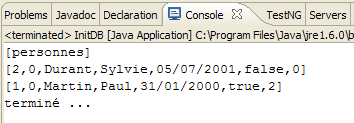 |
D'ora in poi non presenteremo più questa schermata, che è sempre la stessa. Più interessante è la prospettiva di SQL Explorer sul collegamento tra JDBC e SGBD. Seguiremo la procedura spiegata al paragrafo 2.1.8.
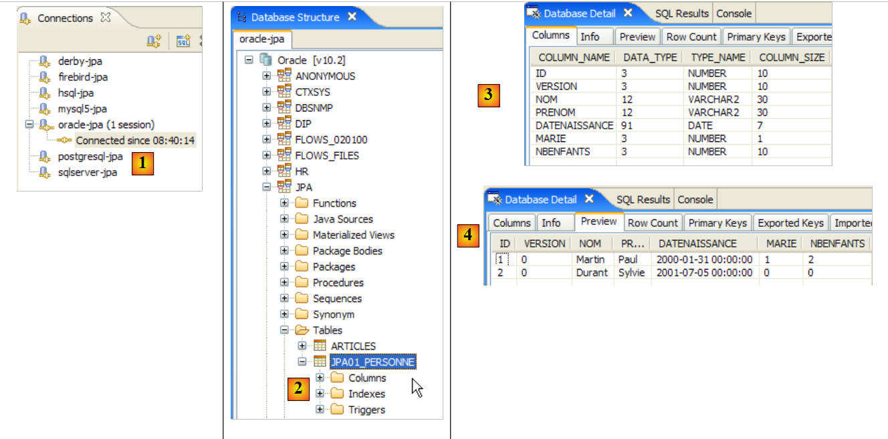 |
- in [1]: la connessione con Oracle
- in [2]: l'albero della connessione dopo l'esecuzione di [InitDB]
- in [3]: la struttura della tabella [jpa01_personne]
- in [4]: il suo contenuto.
Fatto ciò, il lettore è invitato a eseguire l'applicazione [Main] e quindi a terminare SGBD.
2.1.14.2. PostgreSQL 8.2
PostgreSQL 8.2 è riportato negli Allegati al paragrafo 5.6. Il relativo file persistence.xml è il seguente:
<?xml version="1.0" encoding="UTF-8"?>
<persistence version="1.0" xmlns="http://java.sun.com/xml/ns/persistence">
<persistence-unit name="jpa" transaction-type="RESOURCE_LOCAL">
...
<!-- accesso JDBC -->
<property name="hibernate.connection.driver_class" value="org.postgresql.Driver" />
<property name="hibernate.connection.url" value="jdbc:postgresql:jpa" />
<property name="hibernate.connection.username" value="jpa" />
<property name="hibernate.connection.password" value="jpa" />
...
<!-- Dialetto -->
<property name="hibernate.dialect" value="org.hibernate.dialect.PostgreSQLDialect" />
...
</persistence-unit>
</persistence>
Per eseguire [InitDB]:
- avviare SGBD PostgreSQL
- inserire conf/postgres/persistence.xml in META-INF/persistence.xml
- eseguire l'applicazione [InitDB]
La vista SQL Explorer del collegamento tra JDBC e SGBD è la seguente:
 |
- in [1]: il collegamento con PostgreSQL
- in [2]: l'albero della connessione dopo l'esecuzione di [InitDB]
- in [3]: la struttura della tabella [jpa01_personne]
- in [4]: il suo contenuto.
Fatto ciò, il lettore è invitato a eseguire l'applicazione [Main] e quindi a terminare SGBD
2.1.14.3. SQL Server Express 2005
SQL Server Express 2005 è presentato negli Allegati al paragrafo 5.8, pagina 270. Il suo file persistence.xml è il seguente:
<?xml version="1.0" encoding="UTF-8"?>
<persistence version="1.0" xmlns="http://java.sun.com/xml/ns/persistence">
<persistence-unit name="jpa" transaction-type="RESOURCE_LOCAL">
...
<!-- connessione JDBC -->
<property name="hibernate.connection.driver_class" value="com.microsoft.sqlserver.jdbc.SQLServerDriver" />
<property name="hibernate.connection.url" value="jdbc:sqlserver://localhost\\SQLEXPRESS:1433;databaseName=jpa" />
<property name="hibernate.connection.username" value="jpa" />
<property name="hibernate.connection.password" value="jpa" />
...
<!-- Dialetto -->
<property name="hibernate.dialect" value="org.hibernate.dialect.SQLServerDialect" />
...
</persistence-unit>
</persistence>
Per eseguire [InitDB]:
- avviare SGBD SQL Server
- inserire conf/sqlserver/persistence.xml in META-INF/persistence.xml
- eseguire l'applicazione [InitDB]
La vista SQL Explorer del collegamento tra JDBC e SGBD è la seguente:
 |
- in [1]: la connessione con il server SQL
- in [2]: l'albero della connessione dopo l'esecuzione di [InitDB]
- in [3]: la struttura della tabella [jpa01_personne]
- in [4]: il suo contenuto.
Fatto ciò, il lettore è invitato a eseguire l'applicazione [Main] e quindi a terminare SGBD
2.1.14.4. Firebird 2.0
Firebird 2.0 è presentato negli Allegati al paragrafo 5.4. Il suo file persistence.xml è il seguente:
<?xml version="1.0" encoding="UTF-8"?>
<persistence version="1.0" xmlns="http://java.sun.com/xml/ns/persistence">
<persistence-unit name="jpa" transaction-type="RESOURCE_LOCAL">
...
<!-- connessione JDBC -->
<property name="hibernate.connection.driver_class" value="org.firebirdsql.jdbc.FBDriver" />
<property name="hibernate.connection.url" value="jdbc:firebirdsql:localhost/3050:C:\data\2006-2007\eclipse\dvp-jpa\annexes\firebird\jpa.fdb" />
<property name="hibernate.connection.username" value="sysdba" />
<property name="hibernate.connection.password" value="masterkey" />
...
<!-- Dialetto -->
<property name="hibernate.dialect" value="org.hibernate.dialect.FirebirdDialect" />
...
</persistence-unit>
</persistence>
Per eseguire [InitDB]:
- avviare il file SGBD di Firebird
- inserire conf/firebird/persistence.xml in META-INF/persistence.xml
- eseguire l'applicazione [InitDB]
La vista SQL Explorer del collegamento tra JDBC e SGBD è la seguente:
 |
- in [1]: la connessione con Firebird
- in [2]: l'albero della connessione dopo l'esecuzione di [InitDB]
- in [3]: la struttura della tabella [jpa01_personne]
- in [4]: il suo contenuto.
Fatto ciò, il lettore è invitato a eseguire l'applicazione [Main] e quindi a terminare SGBD.
2.1.14.5. Apache Derby
Apache Derby è descritto negli Allegati al paragrafo 5.10. Il suo file persistence.xml è il seguente:
<?xml version="1.0" encoding="UTF-8"?>
<persistence version="1.0" xmlns="http://java.sun.com/xml/ns/persistence">
<persistence-unit name="jpa" transaction-type="RESOURCE_LOCAL">
...
<!-- connessione JDBC -->
<property name="hibernate.connection.driver_class" value="org.apache.derby.jdbc.ClientDriver" />
<property name="hibernate.connection.url" value="jdbc:derby://localhost:1527//data/2006-2007/eclipse/dvp-jpa/annexes/derby/jpa;create=true" />
<property name="hibernate.connection.username" value="jpa" />
<property name="hibernate.connection.password" value="jpa" />
...
<!-- Dialetto -->
...
</persistence-unit>
</persistence>
Per eseguire [InitDB]:
- avviare il file SGBD di Apache Derby
- inserire conf/derby/persistence.xml in META-INF/persistence.xml
- eseguire l'applicazione [InitDB]
La vista SQL Explorer del collegamento tra JDBC e SGBD è la seguente:
 |
- in [1]: la connessione con Apache Derby
- in [2]: l'albero della connessione dopo l'esecuzione di [InitDB]. Si noti la tabella [HIBERNATE_UNIQUE_KEY] creata da JPA / Hibernate per generare automaticamente i valori successivi della chiave primaria ID. Abbiamo già indicato che questo meccanismo è spesso proprietario. Lo si vede chiaramente qui. Grazie a JPA, lo sviluppatore non deve occuparsi di questi dettagli di SGBD.
- in [3]: la struttura della tabella [jpa01_personne]
- in [4]: il suo contenuto.
Fatto ciò, il lettore è invitato a eseguire l’applicazione [Main] e quindi a terminare SGBD.
2.1.14.6. HSQLDB
HSQLDB è riportato negli Allegati al paragrafo 5.9. Il relativo file persistence.xml è il seguente:
<?xml version="1.0" encoding="UTF-8"?>
<persistence version="1.0" xmlns="http://java.sun.com/xml/ns/persistence">
<persistence-unit name="jpa" transaction-type="RESOURCE_LOCAL">
...
<!-- connessione JDBC -->
<property name="hibernate.connection.driver_class" value="org.hsqldb.jdbcDriver" />
<property name="hibernate.connection.url" value="jdbc:hsqldb:hsql://localhost" />
<property name="hibernate.connection.username" value="sa" />
<!--
<property name="hibernate.connection.password" value="" />
-->
...
<!-- Dialetto -->
<property name="hibernate.dialect" value="org.hibernate.dialect.HSQLDialect" />
...
</properties>
</persistence-unit>
</persistence>
Per eseguire [InitDB]:
- avviare il file SGBD HSQL
- inserire conf/hsql/persistence.xml in META-INF/persistence.xml
- eseguire l'applicazione [InitDB]
La vista SQL Explorer del collegamento tra JDBC e SGBD è la seguente:
 |
- in [1]: il collegamento con HSQL
- in [2]: l'albero della connessione dopo l'esecuzione di [InitDB].
- in [3]: la struttura della tabella [jpa01_personne]
- in [4]: il suo contenuto.
Fatto ciò, il lettore è invitato a eseguire l'applicazione [Main] e quindi a terminare SGBD.
2.1.15. Cambiare l'implementazione JPA
Torniamo all’architettura di test del nostro progetto attuale:
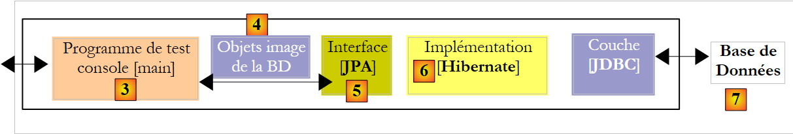 |
Lo studio precedente ha dimostrato che siamo riusciti a sostituire SGBD con [7] senza apportare alcuna modifica al codice client [3]. Ora modifichiamo l’implementazione JPA [6] e dimostriamo ancora una volta che ciò avviene in modo trasparente per il codice client [3]. Prendiamo un’implementazione TopLink e [http://www.oracle.com/technology/products/ias/toplink/jpa/index.html]:
 |
2.1.15.1. Il progetto Eclipse
In occasione del cambio di implementazione JPA, creiamo un nuovo progetto Eclipse per non interferire con il progetto esistente. Infatti, il nuovo progetto utilizza librerie di persistenza che potrebbero entrare in conflitto con quelle di Hibernate:
 |
- in [1]: la cartella [<exemples>/toplink/direct/personnes-entites] contiene il progetto Eclipse. Importarlo.
- in [2]: il progetto [toplink-personnes-entites] importato. È identico (è stato ottenuto tramite copia) al progetto [hibernate-personne-entites], tranne che per due dettagli:
- il file [META-INF/persistence.xml] [3] ora configura un livello JPA / Toplink
- la libreria [jpa-hibernate] è stata sostituita dalla libreria [jpa-toplink], [4] e [5] (cfr. paragrafo 1.5).
- in [6]: la cartella [conf] contiene una versione del file [persistence.xml] per ogni SGBD.
- in [7]: la cartella [ddl] che conterrà gli script SQL per la generazione dello schema del database.
2.1.15.2. Configurazione del livello JPA / Toplink
Sappiamo che il livello JPA è configurato dal file [META-INF/persistence.xml]. Quest’ultimo configura ora un’implementazione JPA / Toplink. Il suo contenuto per un livello JPA interfacciato con SGBD e MySQL5 è il seguente:
<?xml version="1.0" encoding="UTF-8"?>
<persistence version="1.0" xmlns="http://java.sun.com/xml/ns/persistence">
<persistence-unit name="jpa" transaction-type="RESOURCE_LOCAL">
<!-- provider -->
<provider>oracle.toplink.essentials.PersistenceProvider</provider>
<!-- classi persistenti -->
<class>entites.Personne</class>
<!-- proprietà dell'unità di persistenza -->
<properties>
<!-- connessione JDBC -->
<property name="toplink.jdbc.driver" value="com.mysql.jdbc.Driver" />
<property name="toplink.jdbc.url" value="jdbc:mysql://localhost:3306/jpa" />
<property name="toplink.jdbc.user" value="jpa" />
<property name="toplink.jdbc.password" value="jpa" />
<property name="toplink.jdbc.read-connections.max" value="3" />
<property name="toplink.jdbc.read-connections.min" value="1" />
<property name="toplink.jdbc.write-connections.max" value="5" />
<property name="toplink.jdbc.write-connections.min" value="2" />
<!-- SGBD -->
<property name="toplink.target-database" value="MySQL4" />
<!-- server dell'applicazione -->
<property name="toplink.target-server" value="None" />
<!-- generazione dello schema -->
<property name="toplink.ddl-generation" value="drop-and-create-tables" />
<property name="toplink.application-location" value="ddl/mysql5" />
<property name="toplink.create-ddl-jdbc-file-name" value="create.sql" />
<property name="toplink.drop-ddl-jdbc-file-name" value="drop.sql" />
<property name="toplink.ddl-generation.output-mode" value="both" />
<!-- log -->
<property name="toplink.logging.level" value="OFF" />
</properties>
</persistence-unit>
</persistence>
- riga 3: invariata
- riga 5: il provider è ora Toplink. La classe qui indicata si trova nella libreria [jpa-toplink] ([1] di seguito):
 |
- riga 7: il tag <class> serve a specificare tutte le classi @Entity del progetto, in questo caso solo la classe Personne. Hibernate disponeva di un'opzione di configurazione che ci evitava di specificare tali classi. Esplorava il file classpath del progetto per individuare le classi @Entity.
- riga 9: il tag <properties> che introduce le proprietà specifiche dell’implementazione JPA utilizzata, in questo caso Toplink.
- righe 11-14: configurazione del collegamento JDBC con il SGBD MySQL5
- righe 15-18: configurazione del pool di connessioni JDBC gestito in modo nativo da Toplink:
- righe 15, 16: numero massimo e minimo di connessioni nel pool di connessioni in lettura. Valore predefinito (2,2)
- righe 17, 18: numero massimo e minimo di connessioni nel pool di connessioni in scrittura. Valore predefinito (10,2)
- riga 20: il SGBD di destinazione. L'elenco dei SGBD utilizzabili è disponibile nel pacchetto [oracle.toplink.essentials.platform.database] (cfr. [2] sopra). Il SGBD MySQL5 non è presente nell'elenco [2], pertanto è stato scelto MySQL4. Toplink supporta un numero leggermente inferiore di SGBD rispetto a Hibernate. Pertanto, dei sette SGBD utilizzati nei nostri esempi, Firebird non è supportato. Nell’elenco non compare nemmeno Oracle. In realtà si trova in un altro pacchetto ([3] sopra indicato). Se in questi due pacchetti il SGBD di destinazione è indicato dalla classe <Sgbd>Platform.class, il tag sarà scritto come segue:
<property name="toplink.target-database" value="<Sgbd>" />
- riga 22: imposta il server dell’applicazione se l’applicazione viene eseguita su un server di questo tipo. Valori attualmente possibili (None, OC4J_10_1_3, SunAS9). Impostazione predefinita (None).
- righe 24-28: all’inizializzazione del livello JPA, gli viene richiesto di eseguire una pulizia del database definito dal collegamento JDBC delle righe 11-14. Si partirà così da un database vuoto.
- riga 24: si richiede a Toplink di eseguire un drop seguito da un create sulle tabelle dello schema del database
- riga 25: si richiede a Toplink di generare gli script SQL relativi alle operazioni drop e create. application-location specifica la cartella in cui verranno generati tali script. Impostazione predefinita: (cartella corrente).
- riga 26: nome dello script SQL delle operazioni create.. Impostazione predefinita: createDDL.jdbc.
- riga 27: nome dello script SQL delle operazioni drop.. Impostazione predefinita: dropDDL.jdbc.
- riga 28: modalità di generazione dello schema (Predefinito: both):
- both: script e database
- database: solo database
- sql-script: solo script
- riga 30: si disabilitano (OFF) i log di Toplink. I diversi livelli di accesso disponibili sono i seguenti: OFF, SEVERE, WARNING, INFO, CONFIG, FINE, FINER, FINEST. Impostazione predefinita: INFO.
Per una definizione esaustiva dei tag <property> utilizzabili con Toplink, consultare l'URL [http://www.oracle.com/technology/products/ias/toplink/JPA/essentials/toplink-jpa-extensions.html].
2.1.15.3. Test [InitDB]
Non c’è altro da fare. Siamo pronti per eseguire il primo test [InitDB]:
- avviare il SGBD, in questo caso MySQL5
- eseguire [InitDB]
 |
- in [1]: l’output della console. Ritroviamo i risultati già ottenuti con JPA / Hibernate.
- in [3]: si apre la prospettiva [SQL Explorer], quindi si apre la connessione [mysql5-jpa]
- in [4]: la struttura ad albero del database jpa. Si nota che l'esecuzione di [InitDB] ha creato due tabelle: [jpa01_personne], che era prevista, e la tabella [sequence], che invece non era prevista.
 |
- in [5]: la struttura della tabella [jpa01_personne] e in [6] il suo contenuto
- in [7]: la struttura della tabella [sequence] e in [8] il suo contenuto.
Il file di configurazione [persistence.xml] richiedeva la generazione degli script di DDL:
<!-- generazione dello schema -->
<property name="toplink.ddl-generation" value="drop-and-create-tables" />
<property name="toplink.application-location" value="ddl/mysql5" />
<property name="toplink.create-ddl-jdbc-file-name" value="create.sql" />
<property name="toplink.drop-ddl-jdbc-file-name" value="drop.sql" />
<property name="toplink.ddl-generation.output-mode" value="both" />
Vediamo cosa è stato generato nella cartella [ddl/mysql5]:
 |
create.sql
CREATE TABLE jpa01_personne (ID INTEGER NOT NULL, PRENOM VARCHAR(30) NOT NULL, DATENAISSANCE DATE NOT NULL, NOM VARCHAR(30) UNIQUE NOT NULL, MARIE TINYINT(1) default 0 NOT NULL, VERSION INTEGER NOT NULL, NBENFANTS INTEGER NOT NULL, PRIMARY KEY (ID))
CREATE TABLE SEQUENCE (SEQ_NAME VARCHAR(50) NOT NULL, SEQ_COUNT DECIMAL(38), PRIMARY KEY (SEQ_NAME))
INSERT INTO SEQUENCE(SEQ_NAME, SEQ_COUNT) values ('SEQ_GEN', 1)
- riga 1: il record DDL della tabella [jpa01_personne]. Si nota che Toplink non ha utilizzato l'attributo autoincrement per la chiave primaria ID. Di conseguenza, non si ha un incremento automatico della stessa durante l'inserimento delle righe.
- riga 2: la tabella DDL della tabella [sequence]. Il suo nome sembra indicare che Toplink utilizzi questa tabella per generare i valori della chiave primaria ID.
- riga 3: inserimento di una singola riga nella tabella [SEQUENCE]
drop.sql
DROP TABLE jpa01_personne
DELETE FROM SEQUENCE WHERE SEQ_NAME = 'SEQ_GEN'
- riga 1: eliminazione della tabella [jpa01_personne]
- riga 2: eliminazione di una riga specifica dalla tabella [SEQUENCE]. La tabella stessa non viene eliminata, né le altre eventuali righe che potrebbe contenere.
Per saperne di più sul ruolo della tabella [SEQUENCE], in [persistence.xml] si attivano i log di Toplink a livello FINE, un livello che traccia i comandi SQL emessi da Toplink:
<!-- log -->
<property name="toplink.logging.level" value="FINE" />
Si riesegue InitDB. Di seguito è riportata solo una parte della visualizzazione della console:
...
[TopLink Config]: 2007.05.28 12:07:52.796--ServerSession(12910198)--Connessione(30708295)--Thread(Thread[main,5,main])--Connected: jdbc:mysql://localhost:3306/jpa
User: jpa@localhost
Database: MySQL Version: 5.0.37-community-nt
Driver: MySQL-AB JDBC Driver Version: mysql-connector-java-3.1.9 ( $Date: 2005/05/19 15:52:23 $, $Revision: 1.1.2.2 $ )
...
[TopLink Fine]: 2007.05.28 12:07:53.093--ServerSession(12910198)--Connessione(19255406)--Thread(Thread[main,5,main])--DROP TABLE jpa01_personne
[TopLink Fine]: 2007.05.28 12:07:53.265--ServerSession(12910198)--Connessione(30708295)--Thread(Thread[main,5,main])--CREATE TABLE jpa01_personne (ID INTEGER NOT NULL, PRENOM VARCHAR(30) NOT NULL, DATENAISSANCE DATE NOT NULL, NOM VARCHAR(30) UNIQUE NOT NULL, MARIE TINYINT(1) default 0 NOT NULL, VERSION INTEGER NOT NULL, NBENFANTS INTEGER NOT NULL, PRIMARY KEY (ID))
[TopLink Fine]: 2007.05.28 12:07:53.468--ServerSession(12910198)--Connessione(19255406)--Thread(Thread[main,5,main])--CREATE TABLE SEQUENCE (SEQ_NAME VARCHAR(50) NOT NULL, SEQ_COUNT DECIMAL(38), PRIMARY KEY (SEQ_NAME))
[TopLink Warning]: 2007.05.28 12:07:53.468--ServerSession(12910198)--Thread(Thread[main,5,main])--Eccezione [TOPLINK-4002] (Oracle TopLink Essentials - 2.0 (Build b41-beta2 (30/03/2007))): oracle.toplink.essentials.exceptions.DatabaseException
Internal Exception: java.sql.SQLException: Table 'sequence' already exists
Error Code: 1050
Call: CREATE TABLE SEQUENCE (SEQ_NAME VARCHAR(50) NOT NULL, SEQ_COUNT DECIMAL(38), PRIMARY KEY (SEQ_NAME))
Query: DataModifyQuery()
[TopLink Fine]: 2007.05.28 12:07:53.468--ServerSession(12910198)--Connessione(30708295)--Thread(Thread[main,5,main])--DELETE FROM SEQUENCE WHERE SEQ_NAME = 'SEQ_GEN'
[TopLink Fine]: 2007.05.28 12:07:53.609--ServerSession(12910198)--Connessione(19255406)--Thread(Thread[main,5,main])--SELECT * FROM SEQUENCE WHERE SEQ_NAME = 'SEQ_GEN'
[TopLink Fine]: 2007.05.28 12:07:53.609--ServerSession(12910198)--Connessione(30708295)--Thread(Thread[main,5,main])--INSERT INTO SEQUENCE(SEQ_NAME, SEQ_COUNT) valori ('SEQ_GEN', 1)
[TopLink Fine]: 2007.05.28 12:07:53.734--ClientSession(15308417)--Connessione(14069849)--Thread(Thread[main,5,main])--elimina da jpa01_personne
[TopLink Fine]: 2007.05.28 12:07:53.750--ClientSession(15308417)--Connessione(14069849)--Thread(Thread[main,5,main])--UPDATE SEQUENCE SET SEQ_COUNT = SEQ_COUNT + ? WHERE SEQ_NAME = ?
bind => [50, SEQ_GEN]
[TopLink Fine]: 2007.05.28 12:07:53.750--ClientSession(15308417)--Connessione(14069849)--Thread(Thread[main,5,main])--SELECT SEQ_COUNT FROM SEQUENCE WHERE SEQ_NAME = ?
bind => [SEQ_GEN]
[personnes]
[TopLink Fine]: 2007.05.28 12:07:53.906--ClientSession(15308417)--Connessione(14069849)--Thread(Thread[main,5,main])--INSERT INTO jpa01_personne (ID, PRENOM, DATENAISSANCE, NOM, MARIE, VERSION, NBENFANTS) VALUES (?, ?, ?, ?, ?, ?, ?)
bind => [3, Sylvie, 2001-07-05, Durant, false, 1, 0]
[TopLink Fine]: 2007.05.28 12:07:53.921--ClientSession(15308417)--Connessione(14069849)--Thread(Thread[main,5,main])--INSERT INTO jpa01_personne (ID, PRENOM, DATENAISSANCE, NOM, MARIE, VERSION, NBENFANTS) VALUES (?, ?, ?, ?, ?, ?, ?)
bind => [2, Paul, 2000-01-31, Martin, true, 1, 2]
[TopLink Fine]: 2007.05.28 12:07:53.937--ClientSession(15308417)--Connessione(14069849)--Thread(Thread[main,5,main])--SELECT ID, PRENOM, DATENAISSANCE, NOM, MARIE, VERSION, NBENFANTS FROM jpa01_personne ORDER BY NOM ASC
[3,1,Durant,Sylvie,05/07/2001,false,0]
[2,1,Martin,Paul,31/01/2000,true,2]
[TopLink Config]: 2007.05.28 12:07:54.062--ServerSession(12910198)--Connessione(30708295)--Thread(Thread[main,5,main])--disconnessione
[TopLink Info]: 2007.05.28 12:07:54.062--ServerSession(12910198)--Thread(Thread[main,5,main])--file:/C:/data/2006-2007/eclipse/dvp-jpa/toplink/direct/personnes-entites/bin/-jpa logout riuscito
...
terminé ...
- righe 2-5: una connessione a SGBD con i relativi parametri. In realtà, i log mostrano che Toplink crea 3 connessioni con SGBD. Occorrerebbe verificare se questo numero sia correlato a uno dei valori di configurazione utilizzati per il pool di connessioni JDBC:
<property name="toplink.jdbc.read-connections.max" value="3" />
<property name="toplink.jdbc.read-connections.min" value="1" />
<property name="toplink.jdbc.write-connections.max" value="5" />
<property name="toplink.jdbc.write-connections.min" value="2" />
- riga 7: eliminazione della tabella [jpa01_personne]. Normale, poiché il file [persistence.xml] richiede la pulizia del database JPA.
- riga 8: creazione della tabella [jpa01_personne]. Si nota che la chiave primaria ID non presenta l’attributo autoincrement.
- riga 9: creazione della tabella [SEQUENCE], che esiste già, essendo stata creata durante la precedente esecuzione.
- righe 10-13: Toplink segnala l'errore di creazione della tabella [SEQUENCE].
- righe 15-18: Toplink pulisce la tabella [SEQUENCE]. Al termine di questa operazione di pulizia, la tabella [SEQUENCE] contiene una riga (SEQ_NAME, SEQ_COUNT) con i valori ('SEQ_GEN', 1).
- riga 18: la tabella [jpa01_personne] viene svuotata.
- righe 19-20: Toplink trasferisce l'unica riga in cui SEQ_NAME='SEQ_GEN' dalla tabella [SEQUENCE], dal valore ('SEQ_GEN', 1) al valore ('SEQ_GEN', 51)
- riga 21: Toplink recupera il valore 51 dalla riga ('SEQ_GEN', 51) della tabella [SEQUENCE].
- righe 24-27: Toplink inserisce nella tabella [jpa01_personne] le due persone 'Martin' e 'Durant'. Qui c'è un mistero: le chiavi primarie di queste due righe assumono i valori 2 e 3 senza che si sappia come siano stati ottenuti tali valori. Non si sa se il valore SEQ_COUNT (51) ottenuto alla riga 21 sia servito a qualcosa. Si noti che il valore della versione delle righe è 1, mentre Hibernate partiva da 0.
- riga 28: Toplink genera il valore SELECT per ottenere tutte le righe della tabella [jpa01_personne]
- righe 29-30: righe visualizzate dal client Java
- righe 31-32: Toplink chiude una connessione. Ripeterà l’operazione per ciascuna delle connessioni inizialmente aperte.
In definitiva, non si conosce esattamente la funzione della tabella [SEQUENCE], ma sembra comunque che essa svolga un ruolo nella generazione dei valori della chiave primaria ID. Impostando il livello di log più dettagliato, FINEST, si ottengono ulteriori informazioni sul ruolo della tabella [SEQUENCE].
<!-- log -->
<property name="toplink.logging.level" value="FINEST" />
Di seguito abbiamo riportato solo i log relativi all’inserimento delle due persone nella tabella. È qui che si vede il meccanismo di generazione dei valori della chiave primaria:
- riga 4: si vede che il numero 51 recuperato dalla tabella [SEQUENCE] alla riga 2 serve a delimitare un intervallo di valori per la chiave primaria: [2,51]
- riga 5: alla prima persona viene assegnato il valore 2 come chiave primaria
- riga 8: alla seconda persona viene assegnato il valore 3 come chiave primaria
- riga 12: mostra la gestione delle versioni della prima persona
- riga 17: lo stesso vale per la seconda persona
Il livello di log [FINEST] mostra anche i limiti delle transazioni emesse da Toplink. L’analisi di questi log illustra il funzionamento di Toplink e rappresenta un ottimo strumento per comprendere il ponte tra il modello a oggetti e quello relazionale.
Da quanto sopra si ricava quanto segue:
- che implementazioni diverse di JPA genereranno schemi di database diversi. In questo esempio, Hibernate e Toplink non hanno generato gli stessi schemi.
- che i livelli di log FINE, FINER, FINEST di Toplink andranno utilizzati ogni volta che si desideri chiarire cosa stia facendo esattamente Toplink.
2.1.15.4. Test [Main]
Ora eseguiamo il test [Main]:
 |
- in [1]: tutti i test vengono superati tranne il test 11 [2]
- in [3]: riga 376, la riga di codice in cui si è verificata l'eccezione
Il codice che genera l’eccezione è il seguente:
} catch (RuntimeException e1) {
// si è verificato un problema
System.out.format("Erreur dans transaction [%s,%s,%s,%s,%s,%s]%n", e1.getClass().getName(), e1.getMessage(),
e1.getCause().getClass().getName(), e1.getCause().getMessage(), e1.getCause().getCause().getClass().getName(), e1.getCause().getCause()
.getMessage());
try {
...
- riga [3]: la riga dell’eccezione. Abbiamo un NullPointerException, il che suggerisce che uno dei metodi getCause delle righe 4 e 5 abbia restituito un puntatore null. Un'espressione come [e1.getCause().getCause()] presuppone che la catena di eccezioni contenga 3 elementi [e1.getCause().getCause(), e1.getCause(), e1]. Se ne contiene solo due, la prima espressione causerà un'eccezione.
Modifichiamo il codice precedente in modo che visualizzi solo le ultime due eccezioni della catena di eccezioni:
} catch (RuntimeException e1) {
// si è verificato un problema
System.out.format("Erreur dans transaction [%s,%s,%s,%s,]%n", e1.getClass().getName(), e1.getMessage(),
e1.getCause().getClass().getName(), e1.getCause().getMessage());
try {
...
All'esecuzione, si ottiene quindi il seguente risultato:
...
[personnes]
[2,5,Martin,Paul,31/01/2000,false,6]
main : ----------- test11
[personnes]
Erreur dans transaction [javax.persistence.OptimisticLockException,Exception [TOPLINK-5006] (Oracle TopLink Essentials - 2.0 (Build b41-beta2 (03/30/2007))): oracle.toplink.essentials.exceptions.OptimisticLockException
Exception Description: The object [[2,6,Martin,Paul,31/01/2000,false,7]] cannot be updated because it has changed or been deleted since it was last read.
Class> entites.Personne Primary Key> [2],oracle.toplink.essentials.exceptions.OptimisticLockException,
Exception Description: The object [[2,6,Martin,Paul,31/01/2000,false,7]] cannot be updated because it has changed or been deleted since it was last read.
Class> entites.Personne Primary Key> [2],]
[personnes]
[2,5,Martin,Paul,31/01/2000,false,6]
Questa volta, il test 11 viene superato. Le visualizzazioni relative all’eccezione (righe 6-10) sono state richieste dal codice Java (riga 3 del codice sopra riportato). Ricordiamo che il test 11 concatenava, in un’unica transazione, diverse operazioni SQL, una delle quali falliva e doveva comportare un rollback della transazione. Gli stati della tabella [jpa01_personne] prima (riga 3) e dopo il test (riga 12) sono identici, a dimostrazione del fatto che il rollback ha avuto luogo.
Va sottolineato un punto importante: le implementazioni JPA / Hibernate e JPA / Toplink non sono intercambiabili al 100%. In questo esempio, dobbiamo modificare il codice del client JPA per evitare un NullPointerException. Ritroveremo questo problema in seguito e nuovamente nel contesto di un'eccezione.
2.1.16. Modifica da SGBD all’implementazione JPA / Toplink
Torniamo all’architettura di test del nostro progetto attuale:
 |
In precedenza, il SGBD utilizzato in [7] era MySQL5. Mostriamo con Oracle come passare da SGBD. In ogni caso, la modifica da apportare nel progetto Eclipse è semplice (vedi sotto): sostituire il file di configurazione del livello JPA, persistence.xml [1], con uno di quelli presenti nella cartella conf ([2] e [3]) del progetto.
 |
2.1.16.1. Oracle 10g Express
Oracle 10g Express è presentato negli Allegati al paragrafo 5.7. Il file persistence.xml di Oracle per Toplink è il seguente:
<?xml version="1.0" encoding="UTF-8"?>
<persistence version="1.0" xmlns="http://java.sun.com/xml/ns/persistence">
<persistence-unit name="jpa" transaction-type="RESOURCE_LOCAL">
<!-- provider -->
<provider>oracle.toplink.essentials.PersistenceProvider</provider>
<!-- classi persistenti -->
<class>entites.Personne</class>
<!-- proprietà dell'unità di persistenza -->
<properties>
<!-- connessione JDBC -->
<property name="toplink.jdbc.driver" value="oracle.jdbc.OracleDriver" />
<property name="toplink.jdbc.url" value="jdbc:oracle:thin:@localhost:1521:xe" />
<property name="toplink.jdbc.user" value="jpa" />
<property name="toplink.jdbc.password" value="jpa" />
<property name="toplink.jdbc.read-connections.max" value="3" />
<property name="toplink.jdbc.read-connections.min" value="1" />
<property name="toplink.jdbc.write-connections.max" value="5" />
<property name="toplink.jdbc.write-connections.min" value="2" />
<!-- SGBD -->
<property name="toplink.target-database" value="Oracle" />
<!-- server dell'applicazione -->
<property name="toplink.target-server" value="None" />
<!-- generazione dello schema -->
<property name="toplink.ddl-generation" value="drop-and-create-tables" />
<property name="toplink.application-location" value="ddl/oracle" />
<property name="toplink.create-ddl-jdbc-file-name" value="create.sql" />
<property name="toplink.drop-ddl-jdbc-file-name" value="drop.sql" />
<property name="toplink.ddl-generation.output-mode" value="both" />
<!-- log -->
<property name="toplink.logging.level" value="OFF" />
</properties>
</persistence-unit>
</persistence>
Questa configurazione è identica a quella effettuata per i file SGBD e MySQL5, con le seguenti differenze:
- righe 11-14 che configurano il collegamento JDBC con il database
- riga 20: che specifica il SGBD di destinazione
- riga 25: che imposta la cartella di generazione degli script SQL del DDL
Per eseguire il test [InitDB]:
- avviare il processo Oracle SGBD
- inserire conf/oracle/persistence.xml in META-INF/persistence.xml
- eseguire l'applicazione [InitDB]
Si ottengono i seguenti risultati sulla console e nella prospettiva [SQL Explorer]:
 |
- [1]: visualizzazione della console
- [2]: la connessione [oracle-jpa] in SQL Explorer
- [3]: il database jpa
- [4]: InitDB ha creato due tabelle: JPA01_PERSONNE e SEQUENCE, come nel caso di MySQL5. A volte, in [4], compaiono tabelle [BIN*]. Queste corrispondono a tabelle eliminate. Per osservare il fenomeno, è sufficiente rieseguire [InitDB]. La fase di inizializzazione del livello JPA prevede una pulizia del database jpa durante la quale la tabella [JPA01_PERSONNE] viene eliminata:
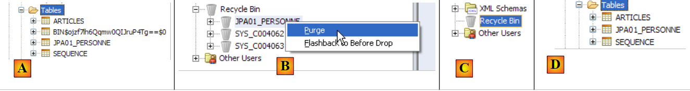 |
In [A] compare una tabella [BIN]. Oracle non elimina definitivamente una tabella che ha subito un'operazione drop, ma la sposta nel cestino [Recycle Bin]. Questo cestino è visibile ([B]) tramite lo strumento SQL Developer descritto al paragrafo 5.7.4. In [B] è possibile svuotare la tabella [JPA01_PERSONNE] che si trova nel cestino. Ciò svuota il cestino [C]. Se in SQL Explorer si aggiornano (clic destro / Refresh) le tabelle, si nota che la tabella BIN non è più presente [D].
- [5, 6]: struttura e contenuto della tabella [JPA01_PERSONNE]
- [7, 8]: struttura e contenuto della tabella [SEQUENCE]
Ecco fatto! Il lettore è ora invitato a eseguire l’applicazione [Main] su Oracle.
2.1.16.2. Gli altri SGBD
Non ci soffermeremo molto sugli altri SGBD. È sufficiente replicare la procedura seguita per Oracle. Si notino i seguenti punti:
- indipendentemente dal SGBD, Toplink utilizza sempre la stessa tecnica per la generazione dei valori della chiave primaria ID della tabella [JPA01_PERSONNE]: utilizza la tabella [SEQUENCE] descritta in precedenza.
- Toplink non riconosce il SGBD di Firebird. Esiste un database generico per questi casi:
Con questa base generica denominata [Auto], i test con Firebird falliscono a causa di errori di sintassi SQL. Toplink utilizza per la chiave primaria ID un tipo SQL Number(10) che Firebird non riconosce. È quindi necessario scegliere un SGBD con gli stessi tipi SQL di Firebird (in questo esempio). È il caso di Apache Derby:
<!-- connessione JDBC -->
<property name="toplink.jdbc.driver" value="org.firebirdsql.jdbc.FBDriver" />
...
<!-- SGBD -->
<!--
TopLink ne reconnaît pas Firebird pour l'instant (05/07). Derby convient pour remplacer.
-->
<property name="toplink.target-database" value="Derby" />
...
- Toplink non è in grado di generare lo schema originale del database per il SGBD HSQLDB. Ciò significa che la direttiva:
<!-- generazione schema -->
<property name="toplink.ddl-generation" value="drop-and-create-tables" />
non funziona per HSQLDB. La causa è un errore di sintassi durante la creazione della tabella [jpa01_personne]:
[TopLink Fine]: 2007.05.29 09:44:18.515--ServerSession(12910198)--Connessione(29775659)--Thread(Thread[main,5,main])--DROP TABLE jpa01_personne
[TopLink Fine]: 2007.05.29 09:44:18.531--ServerSession(12910198)--Connessione(29775659)--Thread(Thread[main,5,main])--CREATE TABLE jpa01_personne (ID INTEGER NOT NULL, PRENOM VARCHAR(30) NOT NULL, DATENAISSANCE DATE NOT NULL, NOM VARCHAR(30) UNIQUE NOT NULL, MARIE TINYINT NOT NULL, VERSION INTEGER NOT NULL, NBENFANTS INTEGER NOT NULL, PRIMARY KEY (ID))
[TopLink Warning]: 2007.05.29 09:44:18.531--ServerSession(12910198)--Thread(Thread[main,5,main])--Eccezione [TOPLINK-4002] (Oracle TopLink Essentials - 2.0 (Build b41-beta2 (30/03/2007))): oracle.toplink.essentials.exceptions.DatabaseException
Internal Exception: java.sql.SQLException: Unexpected token: UNIQUE in statement [CREATE TABLE jpa01_personne (ID INTEGER NOT NULL, PRENOM VARCHAR(30) NOT NULL, DATENAISSANCE DATE NOT NULL, NOM VARCHAR(30) UNIQUE]
Riga 4, la sintassi NOM VARCHAR(30) UNIQUE NOT NULL non è accettata da HSQL. Hibernate aveva utilizzato la sintassi: NOM VARCHAR(30) NOT NULL, UNIQUE(NOM).
In generale, Hibernate si è dimostrato più efficace di Toplink nel riconoscere i SGBD utilizzati per i test descritti in questo documento.
2.1.17. Conclusione
Lo studio dell’@Entity [Personne] si conclude qui. Da un punto di vista concettuale, è stato fatto ben poco: abbiamo studiato il ponte oggetto/relazionale nel caso più semplice: un oggetto @Entity <--> una tabella. Il suo studio ci ha tuttavia permesso di presentare gli strumenti che utilizzeremo in tutto il documento. Ciò ci consentirà d’ora in poi di procedere un po’ più rapidamente nello studio degli altri casi del ponte oggetto/relazionale che esamineremo:
- all’@Entity [Personne] precedente, aggiungeremo un campo adresse modellato da una classe [Adresse]. Dal punto di vista del database, vedremo due possibili implementazioni. Gli oggetti [Personne] e [Adresse] danno origine a
- un'unica tabella [personne] contenente l'indirizzo
- due tabelle [personne] e [adresse] collegate da una relazione di chiave esterna di tipo uno-a-uno.
- un esempio di relazione uno-a-molti in cui una tabella [article] è collegata a una tabella [categorie] tramite una chiave esterna
- un esempio di relazione molti-a-molti in cui due tabelle, [personne] e [activite], sono collegate tramite una tabella di join [personne_activite].
2.2. Esempio 2: relazione uno-a-uno tramite inclusione
2.2.1. Lo schema del database
1  | 2 |
- in [1]: il database (plugin Azurri Clay)
- in [2]: la tabella DDL generata da Hibernate per MySQL5
La tabella [jpa02_personne] è la tabella [jpa01_personne] esaminata in precedenza, alla quale è stato aggiunto un indirizzo (righe 12-18 della DDL).
2.2.2. Gli oggetti @Entity che rappresentano il database
L'indirizzo di una persona sarà rappresentato dalla seguente classe [Adresse]:
package entites;
...
@SuppressWarnings("serial")
@Embeddable
public class Adresse implements Serializable {
// campi
@Column(length = 30, nullable = false)
private String adr1;
@Column(length = 30)
private String adr2;
@Column(length = 30)
private String adr3;
@Column(length = 5, nullable = false)
private String codePostal;
@Column(length = 20, nullable = false)
private String ville;
@Column(length = 3)
private String cedex;
@Column(length = 20, nullable = false)
private String pays;
// costruttori
public Adresse() {
}
public Adresse(String adr1, String adr2, String adr3, String codePostal, String ville, String cedex, String pays) {
...
}
// getter e setter
...
// toString
public String toString() {
return String.format("A[%s,%s,%s,%s,%s,%s,%s]", getAdr1(), getAdr2(), getAdr3(), getCodePostal(), getVille(), getCedex(), getPays());
}
}
- la principale novità risiede nell'annotazione @Embeddable alla riga 5. La classe [Adresse] non è destinata a generare una tabella, pertanto non presenta l'annotazione @Entity. L'annotazione @Embeddable indica che la classe è destinata a essere integrata in un oggetto @Entity e quindi nella tabella ad esso associata. Ecco perché, nello schema del database, la classe [Adresse] non compare come una tabella a sé stante, ma come parte della tabella associata all’@Entity [Personne].
L’@Entity [Personne] presenta poche modifiche rispetto alla versione precedente: viene semplicemente aggiunto un campo adresse:
package entites;
...
@Entity
@Table(name = "jpa02_hb_personne")
public class Personne implements Serializable{
@Id
@Column(nullable = false)
@GeneratedValue(strategy = GenerationType.AUTO)
private Long id;
@Column(nullable = false)
@Version
private int version;
@Column(length = 30, nullable = false, unique = true)
private String nom;
@Column(length = 30, nullable = false)
private String prenom;
@Column(nullable = false)
@Temporal(TemporalType.DATE)
private Date datenaissance;
@Column(nullable = false)
private boolean marie;
@Column(nullable = false)
private int nbenfants;
@Embedded
private Adresse adresse;
// costruttori
public Personne() {
}
...
}
- la modifica avviene alle righe 33-34. L’oggetto [Personne] presenta ora un campo adresse di tipo Adresse. Questo vale per il POJO. L'annotazione @Embedded è destinata al ponte oggetto/relazionale. Indica che il campo [Adresse adresse] dovrà essere incapsulato nella stessa tabella dell'oggetto [Personne].
2.2.3. L'ambiente di test
Eseguiremo dei test molto simili a quelli esaminati in precedenza. Verranno effettuati nel seguente contesto:
 |
L’implementazione utilizzata è JPA / Hibernate [6]. Il progetto Eclipse dei test è il seguente:
 |
Il progetto Eclipse [1] differisce dal precedente solo per i codici Java [2]. L'ambiente (librerie – persistence.xml – SGBD – cartelle conf, DDL – script Ant) è quello già esaminato in precedenza, in particolare al paragrafo 2.1.5. Sarà sempre così per i futuri progetti Hibernate e, salvo eccezioni, non torneremo più su questo ambiente. In particolare, i file persistence.xml che configurano il livello JPA/Hibernate per diversi SGBD sono quelli già esaminati e che si trovano nella cartella <conf>.
In caso di dubbi sulle procedure da seguire, il lettore è invitato a consultare quelle illustrate nello studio precedente.
Il progetto Eclipse è presente come [3] nella cartella degli esempi [4]. Lo importeremo.
2.2.4. Generazione del file DDL dal database
Seguendo le istruzioni del paragrafo 2.1.7, il file DDL ottenuto per il SGBD MySQL5 è il seguente:
drop table if exists jpa02_hb_personne;
create table jpa02_hb_personne (
id bigint not null auto_increment,
version integer not null,
nom varchar(30) not null unique,
prenom varchar(30) not null,
datenaissance date not null,
marie bit not null,
nbenfants integer not null,
adr1 varchar(30) not null,
adr2 varchar(30),
adr3 varchar(30),
codePostal varchar(5) not null,
ville varchar(20) not null,
cedex varchar(3),
pays varchar(20) not null,
primary key (id)
) ENGINE=InnoDB;
Hibernate ha correttamente riconosciuto che l'indirizzo della persona doveva essere inserito nella tabella associata all'@Entity Personne (righe 11-17).
2.2.5. InitDB
Il codice di [InitDB] è il seguente:
package tests;
...
public class InitDB {
// costanti
private final static String TABLE_NAME = "jpa02_hb_personne";
public static void main(String[] args) throws ParseException {
// Contesto di persistenza
EntityManagerFactory emf = Persistence.createEntityManagerFactory("jpa");
EntityManager em = null;
// si recupera un EntityManager dal precedente EntityManagerFactory
em = emf.createEntityManager();
// inizio transazione
EntityTransaction tx = em.getTransaction();
tx.begin();
// richiesta
Query sql1;
// eliminazione degli elementi dalla tabella PERSONNE
sql1 = em.createNativeQuery("delete from " + TABLE_NAME);
sql1.executeUpdate();
// creazione persone
Personne p1 = new Personne("Martin", "Paul", new SimpleDateFormat("dd/MM/yy").parse("31/01/2000"), true, 2);
Personne p2 = new Personne("Durant", "Sylvie", new SimpleDateFormat("dd/MM/yy").parse("05/07/2001"), false, 0);
// creazione indirizzi
Adresse a1 = new Adresse("8 rue Boileau", null, null, "49000", "Angers", null, "France");
Adresse a2 = new Adresse("Apt 100", "Les Mimosas", "15 av Foch", "49002", "Angers", "03", "France");
// associazioni persona <--> indirizzo
p1.setAdresse(a1);
p2.setAdresse(a2);
// persistenza delle persone
em.persist(p1);
em.persist(p2);
// visualizzazione persone
System.out.println("[personnes]");
for (Object p : em.createQuery("select p from Personne p order by p.nom asc").getResultList()) {
System.out.println(p);
}
// fine transazione
tx.commit();
// fine EntityManager
em.close();
// fine EntityManagerFactory
emf.close();
// registro
System.out.println("terminé...");
}
}
Non c’è nulla di nuovo in questo codice. È già stato visto tutto. L’esecuzione di [InitDB] insieme a MySQL5 fornisce i seguenti risultati:
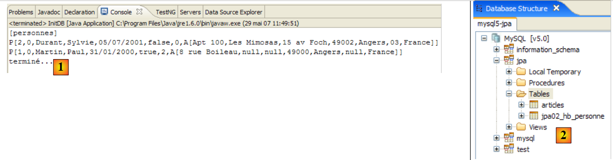 |
 |
- [1]: l'output della console
- [2]: la tabella [jpa02_hb_personne] nella prospettiva SQL Explorer
- [3] e [4]: struttura e contenuto.
2.2.6. Home
La classe [Main] è la seguente:
package tests;
...
import entites.Adresse;
import entites.Personne;
@SuppressWarnings( { "unused", "unchecked" })
public class Main {
// costanti
private final static String TABLE_NAME = "jpa02_hb_personne";
// Contesto di persistenza
private static EntityManagerFactory emf = Persistence.createEntityManagerFactory("jpa");
private static EntityManager em = null;
// oggetti condivisi
private static Personne p1, p2, newp1;
private static Adresse a1, a2, a3, a4, newa1, newa4;
public static void main(String[] args) throws Exception {
// si recupera un EntityManager da EntityManagerFactory
em = emf.createEntityManager();
// pulizia del database
log("clean");clean();
// dump della tabella
dumpPersonne();
// test1
log("test1"); test1();
// test2
log("test2"); test2();
// test3
log("test3"); test3();
// test4
log("test4"); test4();
// test5
log("test5");test5();
// fine contesto di persistenza
if (em != null && em.isOpen())
em.close();
// chiusura EntityManagerFactory
emf.close();
}
// recuperare l'EntityManager corrente
private static EntityManager getEntityManager() {
...
}
// recuperare un nuovo EntityManager
private static EntityManager getNewEntityManager() {
...
}
// visualizza il contenuto della tabella «Persona»
private static void dumpPersonne() {
...
}
// azzerare BD
private static void clean() {
...
}
// log
private static void log(String message) {
...
}
// creazione di oggetti
public static void test1() throws ParseException {
// contesto di persistenza
EntityManager em = getEntityManager();
// creazione persone
p1 = new Personne("Martin", "Paul", new SimpleDateFormat("dd/MM/yy").parse("31/01/2000"), true, 2);
p2 = new Personne("Durant", "Sylvie", new SimpleDateFormat("dd/MM/yy").parse("05/07/2001"), false, 0);
// creazione indirizzi
a1 = new Adresse("8 rue Boileau", null, null, "49000", "Angers", null, "France");
a2 = new Adresse("Apt 100", "Les Mimosas", "15 av Foch", "49002", "Angers", "03", "France");
// associazioni persona <--> indirizzo
p1.setAdresse(a1);
p2.setAdresse(a2);
// inizio transazione
EntityTransaction tx = em.getTransaction();
tx.begin();
// persistenza delle persone
em.persist(p1);
em.persist(p2);
// fine transazione
tx.commit();
// dump
dumpPersonne();
}
// modifica di un oggetto del contesto
public static void test2() {
// contesto di persistenza
EntityManager em = getEntityManager();
// inizio transazione
EntityTransaction tx = em.getTransaction();
tx.begin();
// si incrementa il numero di figli di p1
p1.setNbenfants(p1.getNbenfants() + 1);
// si modifica il suo stato civile
p1.setMarie(false);
// l'oggetto p1 viene salvato automaticamente (dirty checking)
// alla successiva sincronizzazione (commit o select)
// fine transazione
tx.commit();
// viene visualizzata la nuova tabella
dumpPersonne();
}
// eliminare un oggetto appartenente al contesto di persistenza
public static void test4() {
// contesto di persistenza
EntityManager em = getEntityManager();
// inizio transazione
EntityTransaction tx = em.getTransaction();
tx.begin();
// si elimina l'oggetto allegato p2
em.remove(p2);
// fine transazione
tx.commit();
// visualizzazione della nuova tabella
dumpPersonne();
}
// scollegare, ricollegare e modificare
public static void test5() {
// nuovo contesto di persistenza
EntityManager em = getNewEntityManager();
// inizio transazione
EntityTransaction tx = em.getTransaction();
tx.begin();
// si ricollega p1 al nuovo contesto
p1 = em.find(Personne.class, p1.getId());
// fine transazione
tx.commit();
// si modifica l'indirizzo di p1
p1.getAdresse().setVille("Paris");
// viene visualizzata la nuova tabella
dumpPersonne();
}
}
Ancora una volta, nulla di già visto. L'output della console è il seguente:
Il lettore è invitato a collegare i risultati al codice.
2.2.7. Implementazione JPA / Toplink
Ora utilizziamo un'implementazione JPA / Toplink:
 |
Il nuovo progetto Eclipse dei test è il seguente:
 |
I codici Java sono identici a quelli del precedente progetto Hibernate. L'ambiente (librerie – persistence.xml – SGBD – cartelle conf, ddl – script ant) è quello già esaminato nel paragrafo 2.1.15.2. Sarà sempre così per i futuri progetti Toplink e, salvo eccezioni, non torneremo più su questo ambiente. In particolare, i file persistence.xml che configurano il livello JPA/Toplink per diversi SGBD sono quelli già esaminati e che si trovano nella cartella <conf>.
In caso di dubbi sulle procedure da seguire, il lettore è invitato a consultare quelle illustrate nello studio precedente.
Il progetto Eclipse è presente come [3] nella cartella degli esempi [4]. Lo importeremo.
L’esecuzione di [InitDB] con SGBD e MySQL5 fornisce i seguenti risultati:
 |
 |
- [1]: l'output della console
- [2]: le tabelle [jpa02_tl_personne] e [SEQENCE] nella prospettiva SQL Explorer
- [3] e [4]: struttura e contenuto di [jpa02_tl_personne].
Gli script SQL generati in ddl/mysql5 [5] sono i seguenti:
create.sql
CREATE TABLE jpa02_tl_personne (ID BIGINT NOT NULL, PRENOM VARCHAR(30) NOT NULL, DATENAISSANCE DATE NOT NULL, VERSION INTEGER NOT NULL, MARIE TINYINT(1) default 0 NOT NULL, NBENFANTS INTEGER NOT NULL, NOM VARCHAR(30) UNIQUE NOT NULL, CODEPOSTAL VARCHAR(5) NOT NULL, ADR1 VARCHAR(30) NOT NULL, VILLE VARCHAR(20) NOT NULL, ADR3 VARCHAR(30), CEDEX VARCHAR(3), ADR2 VARCHAR(30), PAYS VARCHAR(20) NOT NULL, PRIMARY KEY (ID))
CREATE TABLE SEQUENCE (SEQ_NAME VARCHAR(50) NOT NULL, SEQ_COUNT DECIMAL(38), PRIMARY KEY (SEQ_NAME))
INSERT INTO SEQUENCE(SEQ_NAME, SEQ_COUNT) values ('SEQ_GEN', 1)
drop.sql
DROP TABLE jpa02_tl_personne
DELETE FROM SEQUENCE WHERE SEQ_NAME = 'SEQ_GEN'
2.3. Esempio 3: relazione uno-a-uno tramite chiave esterna
2.3.1. o dello schema del database
1  | 2 |
- in [1]: il database. In questo caso, l'indirizzo della persona è inserito in una tabella a sé stante, denominata [adresse]. La tabella [personne] è collegata a questa tabella tramite una chiave esterna.
- in [2]: la tabella DDL generata da Hibernate per MySQL5:
- righe 9-20: la tabella [adresse] che verrà collegata alla classe [Adresse], diventata un oggetto @Entity.
- riga 10: la chiave primaria della tabella [adresse]
- riga 30: al posto di un indirizzo completo, nella tabella [personne] si trova ora l’identificativo [adresse_id] di tale indirizzo.
- righe 34-38: persona (adresse_id) è una chiave esterna su indirizzo (id).
2.3.2. Gli oggetti @Entity che rappresentano il database
Una persona con indirizzo è ora rappresentata dalla seguente classe [Personne]:
package entites;
...
@Entity
@Table(name = "jpa03_hb_personne")
public class Personne implements Serializable{
@Id
@Column(nullable = false)
@GeneratedValue(strategy = GenerationType.AUTO)
private Long id;
@Column(nullable = false)
@Version
private int version;
@Column(length = 30, nullable = false, unique = true)
private String nom;
@Column(length = 30, nullable = false)
private String prenom;
@Column(nullable = false)
@Temporal(TemporalType.DATE)
private Date datenaissance;
@Column(nullable = false)
private boolean marie;
@Column(nullable = false)
private int nbenfants;
@OneToOne(cascade = CascadeType.ALL, fetch=FetchType.LAZY)
@JoinColumn(name = "adresse_id", unique = true, nullable = false)
private Adresse adresse;
...
}
- righe 32-34: l'indirizzo della persona
- riga 32: l'annotazione @OneToOne indica una relazione uno-a-uno: una persona ha almeno e al massimo un indirizzo. L'attributo cascade = CascadeType.ALL significa che qualsiasi operazione (persist, merge, remove) sull'@Entity [Personne] deve essere propagata all'@Entity [Adresse]. Dal punto di vista del contesto di persistenza em, ciò significa quanto segue. Se p è una persona e ha il suo indirizzo:
- un'operazione esplicita em.persist(p) comporterà un'operazione implicita em.persist(a)
- un'operazione esplicita em.merge(p) comporterà un'operazione implicita em.merge(a)
- un'operazione esplicita em.remove(p) comporterà un'operazione implicita em.remove(a)
- riga 32: l'annotazione @OneToOne indica una relazione uno-a-uno: una persona ha almeno e al massimo un indirizzo. L'attributo cascade = CascadeType.ALL significa che qualsiasi operazione (persist, merge, remove) sull'@Entity [Personne] deve essere propagata all'@Entity [Adresse]. Dal punto di vista del contesto di persistenza em, ciò significa quanto segue. Se p è una persona e ha il suo indirizzo:
L'esperienza dimostra che queste cascate implicite non sono la panacea. Lo sviluppatore finisce per dimenticare cosa fanno. Si potrebbero preferire operazioni esplicite nel codice. Esistono diversi tipi di cascata. L'annotazione @OneToOne avrebbe potuto essere scritta come segue:
//@OneToOne(cascade = CascadeType.ALL, fetch=FetchType.LAZY)
@OneToOne(cascade = {CascadeType.MERGE, CascadeType.PERSIST, CascadeType.REFRESH, CascadeType.REMOVE}, fetch=FetchType.LAZY)
L'attributo cascade accetta qui come valore un array di costanti che specificano i tipi di cascata desiderati.
L'attributo fetch=FetchType.LAZY richiede a Hibernate di caricare la dipendenza all'ultimo momento. Quando si inserisce un elenco di persone nel contesto di persistenza, non si desidera necessariamente includervi i loro indirizzi. Ad esempio, si potrebbe voler ottenere tale indirizzo solo per una persona specifica selezionata da un utente tramite un’interfaccia web. L’attributo fetch=FetchType.EAGER, invece, richiede il caricamento immediato delle dipendenze.
- (continua)
- riga 33: l’annotazione @JoinColumn definisce la chiave esterna che la tabella dell’@Entity [Personne] possiede sulla tabella dell’@Entity [Adresse]. L'attributo name definisce il nome della colonna che funge da chiave esterna. L'attributo unique=true impone una relazione uno-a-uno: non è possibile avere due volte lo stesso valore nella colonna [adresse_id]. L'attributo nullable=false impone che una persona abbia un indirizzo.
L'indirizzo di una persona è ora rappresentato dalla seguente @Entity [Adresse]:
package entites;
...
@Entity
@Table(name = "jpa03_hb_adresse")
public class Adresse implements Serializable {
// campi
@Id
@Column(nullable = false)
@GeneratedValue(strategy = GenerationType.AUTO)
private Long id;
@Column(nullable = false)
@Version
private int version;
@Column(length = 30, nullable = false)
private String adr1;
@Column(length = 30)
private String adr2;
@Column(length = 30)
private String adr3;
@Column(length = 5, nullable = false)
private String codePostal;
@Column(length = 20, nullable = false)
private String ville;
@Column(length = 3)
private String cedex;
@Column(length = 20, nullable = false)
private String pays;
@OneToOne(mappedBy = "adresse", fetch=FetchType.LAZY)
private Personne personne;
// costruttori
public Adresse() {
}
...
}
- riga 4: la classe [Adresse] diventa un oggetto @Entity. Sarà quindi oggetto di una tabella nel database.
- righe 9-12: come ogni oggetto @Entity, [Adresse] ha una chiave primaria. È stata denominata Id e presenta le stesse annotazioni (standard) della chiave primaria Id dell’@Entity [Personne].
- righe 39-40: la relazione uno-a-uno con l’@Entity [Personne]. Ci sono diverse sottigliezze qui:
- innanzitutto, il campo personne non è obbligatorio. Ci permette, partendo da un indirizzo, di risalire all’unica persona che possiede quell’indirizzo. Se non avessimo voluto questa comodità, il campo personne non esisterebbe e tutto funzionerebbe comunque.
- La relazione uno-a-uno che collega le due entità [Personne] e [Adresse] è già stata configurata nell’@Entity [Personne]:
@OneToOne(cascade = CascadeType.ALL, fetch=FetchType.LAZY)
@JoinColumn(name = "adresse_id", unique = true, nullable = false)
private Adresse adresse;
Affinché le due configurazioni uno-a-uno non entrino in conflitto tra loro, una viene considerata come principale e l’altra come inverse. È la relazione denominata principale che viene gestita dal ponte oggetto/relazionale. L'altra relazione, denominata inverse, non viene gestita direttamente, ma indirettamente tramite la relazione principale. In @Entity [Adresse]:
@OneToOne(mappedBy = "adresse", fetch=FetchType.LAZY)
private Personne personne;
è l’attributo mappedBy a definire la relazione uno-a-uno sopra indicata, la relazione inverse della relazione principale uno-a-uno definita dal campo adresse dell’entità @Entity [Personne].
2.3.3. Il progetto Eclipse / Hibernate 1
L’implementazione JPA qui utilizzata è quella di Hibernate. Il progetto Eclipse dei test è il seguente:
 |
Il progetto si trova in [3] nella cartella degli esempi [4]. Lo importeremo.
2.3.4. Generazione del file DDL dal database
Seguendo le istruzioni del paragrafo 2.1.7, il file DDL ottenuto per il SGBD MySQL5 è quello mostrato all’inizio di questo paragrafo.
2.3.5. InitDB
Il codice di [InitDB] è il seguente:
package tests;
...
import entites.Adresse;
import entites.Personne;
public class InitDB {
// costanti
private final static String TABLE_PERSONNE = "jpa03_hb_personne";
private final static String TABLE_ADRESSE = "jpa03_hb_adresse";
public static void main(String[] args) throws ParseException {
// Contesto di persistenza
EntityManagerFactory emf = Persistence.createEntityManagerFactory("jpa");
EntityManager em = null;
// si recupera un EntityManager dal precedente EntityManagerFactory
em = emf.createEntityManager();
// inizio transazione
EntityTransaction tx = em.getTransaction();
tx.begin();
// richiesta
Query sql1;
// eliminare gli elementi dalla tabella PERSONNE
sql1 = em.createNativeQuery("delete from " + TABLE_PERSONNE);
sql1.executeUpdate();
// eliminare gli elementi dalla tabella ADRESSE
sql1 = em.createNativeQuery("delete from " + TABLE_ADRESSE);
sql1.executeUpdate();
// creazione persone
Personne p1 = new Personne("Martin", "Paul", new SimpleDateFormat("dd/MM/yy").parse("31/01/2000"), true, 2);
Personne p2 = new Personne("Durant", "Sylvie", new SimpleDateFormat("dd/MM/yy").parse("05/07/2001"), false, 0);
// creazione indirizzi
Adresse a1 = new Adresse("8 rue Boileau", null, null, "49000", "Angers", null, "France");
Adresse a2 = new Adresse("Apt 100", "Les Mimosas", "15 av Foch", "49002", "Angers", "03", "France");
Adresse a3 = new Adresse("x", "x", "x", "x", "x", "x", "x");
Adresse a4 = new Adresse("y", "y", "y", "y", "y", "y", "y");
// associazioni persona <--> indirizzo
p1.setAdresse(a1);
a1.setPersonne(p1);
p2.setAdresse(a2);
a2.setPersonne(p2);
// persistenza delle persone e, di conseguenza, dei loro indirizzi
em.persist(p1);
em.persist(p2);
// e degli indirizzi a3 e a4 non collegati a persone
em.persist(a3);
em.persist(a4);
// visualizzazione delle persone
System.out.println("[personnes]");
for (Object p : em.createQuery("select p from Personne p order by p.nom asc").getResultList()) {
System.out.println(p);
}
// visualizzazione indirizzi
System.out.println("[adresses]");
for (Object a : em.createQuery("select a from Adresse a").getResultList()) {
System.out.println(a);
}
// fine transazione
tx.commit();
// fine EntityManager
em.close();
// fine EntityManagerFactory
emf.close();
// registro
System.out.println("terminé...");
}
}
Commentiamo solo ciò che presenta un interesse nuovo rispetto a quanto già studiato:
- righe 31-32: si creano due persone
- righe 34-37: si creano quattro indirizzi
- righe 39-42: si associano le persone (p1, p2) agli indirizzi (a1, a2). Gli indirizzi (a3, a4) sono orfani. Nessuna persona li fa riferimento. Il codice DDL lo consente. Se una persona ha necessariamente un indirizzo, il contrario non è vero.
- righe 44-45: si conservano le persone (p1, p2). Poiché abbiamo assegnato un attributo cascade = CascadeType.ALL alla relazione uno-a-uno che collega una persona al suo indirizzo, anche gli indirizzi (a1, a2) di queste due persone dovrebbero essere sottoposti a un persist. È proprio questo che vogliamo verificare. Per gli indirizzi orfani (a3, a4), siamo costretti a procedere in modo esplicito (righe 47-48).
- righe 51-53: visualizzazione della tabella delle persone
- righe 56-57: visualizzazione della tabella degli indirizzi
L’esecuzione di [InitDB] insieme a MySQL5 fornisce i seguenti risultati:
 |
 |
- [1]: visualizzazione della console
- [2]: le tabelle [jpa03_hb_*] nella prospettiva SQL Explorer
- [3]: la tabella delle persone
- [4]: la tabella degli indirizzi. Sono tutte presenti. Si noti inoltre il collegamento tra la colonna [adresse_id] in [3] e la colonna [id] in [4] (chiave esterna).
2.3.6. Home
La classe [Main] concatena sei test che esamineremo ora.
2.3.6.1. Test1
Questo test è il seguente:
// creazione di oggetti
public static void test1() throws ParseException {
// contesto di persistenza
EntityManager em = getEntityManager();
// creazione di persone
p1 = new Personne("Martin", "Paul", new SimpleDateFormat("dd/MM/yy").parse("31/01/2000"), true, 2);
p2 = new Personne("Durant", "Sylvie", new SimpleDateFormat("dd/MM/yy").parse("05/07/2001"), false, 0);
// creazione indirizzi
a1 = new Adresse("8 rue Boileau", null, null, "49000", "Angers", null, "France");
a2 = new Adresse("Apt 100", "Les Mimosas", "15 av Foch", "49002", "Angers", "03", "France");
a3 = new Adresse("x", "x", "x", "x", "x", "x", "x");
a4 = new Adresse("y", "y", "y", "y", "y", "y", "y");
// associazioni persona <--> indirizzo
p1.setAdresse(a1);
a1.setPersonne(p1);
p2.setAdresse(a2);
a2.setPersonne(p2);
// inizio transazione
EntityTransaction tx = em.getTransaction();
tx.begin();
// persistenza delle persone
em.persist(p1);
em.persist(p2);
// e degli indirizzi a3 e a4 non collegati a persone
em.persist(a3);
em.persist(a4);
// fine transazione
tx.commit();
// vengono visualizzate le tabelle
dumpPersonne();
dumpAdresse();
}
Questo codice è tratto da [InitDB]. Il risultato è il seguente:
Entrambe le tabelle sono state compilate.
2.3.6.2. Test2
Questo test è il seguente:
// modifica di un oggetto del contesto
public static void test2() {
// contesto di persistenza
EntityManager em = getEntityManager();
// inizio transazione
EntityTransaction tx = em.getTransaction();
tx.begin();
// si incrementa il numero di figli di p1
p1.setNbenfants(p1.getNbenfants() + 1);
// si modifica il suo stato civile
p1.setMarie(false);
// l'oggetto p1 viene salvato automaticamente (dirty checking)
// durante la successiva sincronizzazione (commit o select)
// fine transazione
tx.commit();
// viene visualizzata la nuova tabella
dumpPersonne();
}
Il risultato è il seguente:
- riga 4: la persona p1 ha visto aumentare di 1 il numero dei propri figli e la propria versione passare da 0 a 1
2.3.6.3. Test4
Questo test è il seguente:
// eliminare un oggetto appartenente al contesto di persistenza
public static void test4() {
// contesto di persistenza
EntityManager em = getEntityManager();
// inizio transazione
EntityTransaction tx = em.getTransaction();
tx.begin();
// si elimina l'oggetto associato p2
em.remove(p2);
// fine transazione
tx.commit();
// vengono visualizzate le nuove tabelle
dumpPersonne();
dumpAdresse();
}
- riga 9: si elimina la persona p2. Quest'ultima ha una relazione a cascata con l'indirizzo a2. Pertanto, anche l'indirizzo a2 dovrebbe essere eliminato.
Il risultato del test 4 è il seguente:
- la persona p2 presente alla riga 3 del test 1 non è più presente nel test 4
- lo stesso vale per il suo indirizzo a2, presente alla riga 7 del test 1 e assente dal test 4.
2.3.6.4. Test 5
Questo test è il seguente:
// scollegare, ricollegare e modificare
public static void test5() {
// nuovo contesto di persistenza
EntityManager em = getNewEntityManager();
// inizio transazione
EntityTransaction tx = em.getTransaction();
tx.begin();
// si ricollega p1 al nuovo contesto
p1 = em.find(Personne.class, p1.getId());
// si modifica l'indirizzo di p1
p1.getAdresse().setVille("Paris");
// fine transazione
tx.commit();
// vengono visualizzate le nuove tabelle
dumpPersonne();
dumpAdresse();
}
- riga 4: si ha un contesto di persistenza nuovo, quindi vuoto.
- riga 9: si inserisce la persona p1 al suo interno. p1 viene cercato nel database perché non è presente nel contesto. Gli elementi dipendenti da p1 (il suo indirizzo), invece, non vengono recuperati dal database perché è stato scritto:
@OneToOne(..., fetch=FetchType.LAZY)
È il concetto di “lazy loading” o “caricamento just-in-time”: le dipendenze di un oggetto persistente vengono caricate in memoria solo quando sono necessarie.
- riga 11: si modifica il campo «città» dell’indirizzo di p1. A causa di getAdresse e se l’indirizzo di p1 non fosse già nel contesto di persistenza, verrà caricato tramite una lettura dal database.
- riga 13: si conferma la transazione, il che comporterà la sincronizzazione del contesto di persistenza con il database. Quest’ultimo rileverà che l’indirizzo della persona p1 è stato modificato e lo salverà.
L'esecuzione di test5 fornisce i seguenti risultati:
- la città della persona p1 (riga 3 test4, riga 10 test5) è effettivamente passata da Angers (riga 5 test4) a Parigi (riga 12 test5).
2.3.6.5. Test6
Questo test è il seguente:
// eliminare un oggetto Indirizzo
public static void test6() {
EntityTransaction tx = null;
// nuovo contesto di persistenza
EntityManager em = getNewEntityManager();
// inizio transazione
tx = em.getTransaction();
tx.begin();
// si ricollega l'indirizzo a3 al nuovo contesto
a3 = em.find(Adresse.class, a3.getId());
System.out.println(a3);
// lo si elimina
em.remove(a3);
// fine transazione
tx.commit();
// dump della tabella Indirizzi
dumpAdresse();
}
- riga 5: ci si trova in un nuovo contesto di persistenza, quindi vuoto.
- riga 10: si inserisce l'indirizzo a3 nel contesto di persistenza
- riga 13: lo si elimina. Si trattava di un indirizzo orfano (non collegato a una persona). L'eliminazione è quindi possibile.
Il risultato dell'esecuzione è il seguente:
- l’indirizzo a3 del test 5 (riga 6) è scomparso dagli indirizzi del test 6 (righe 11-12)
2.3.6.6. Test 7
Questo test è il seguente:
// rollback
public static void test7() {
EntityTransaction tx = null;
try {
// nuovo contesto di persistenza
EntityManager em = getNewEntityManager();
// inizio transazione
tx = em.getTransaction();
tx.begin();
// si ricollega l'indirizzo a1 al nuovo contesto
newa1 = em.find(Adresse.class, a1.getId());
// si ricollega l'indirizzo a4 al nuovo contesto
newa4 = em.find(Adresse.class, a4.getId());
// si tenta di eliminarli - dovrebbe generare un'eccezione poiché non è possibile eliminare un indirizzo associato a una persona, come nel caso di newa1
em.remove(newa4);
em.remove(newa1);
// fine transazione
tx.commit();
} catch (RuntimeException e1) {
// si è verificato un problema
System.out.format("Erreur dans transaction [%s%n%s%n%s%n%s]%n", e1.getClass().getName(), e1.getMessage(), e1.getCause(), e1.getCause()
.getCause());
try {
if (tx.isActive())
tx.rollback();
} catch (RuntimeException e2) {
System.out.format("Erreur au rollback [%s]%n", e2.getMessage());
}
// si abbandona il contesto corrente
em.clear();
}
// dump - la tabella Indirizzo non dovrebbe essere cambiata a causa del rollback
dumpAdresse();
}
- test7: si verifica il rollback di una transazione
- riga 6: ci si trova in un nuovo contesto di persistenza, quindi vuoto.
- riga 11: si inserisce l'indirizzo a1 nel contesto di persistenza, sotto il riferimento newa1
- riga 13: si inserisce l'indirizzo a4 nel contesto di persistenza, sotto il riferimento newa4
- righe 15-16: si eliminano i due indirizzi newa1 e newa4. newa1 è l'indirizzo della persona p1 e quindi, nel database, p1 fa riferimento a newa1 tramite una chiave esterna. L'eliminazione di newa1 fallirà quindi e genererà un'eccezione durante la sincronizzazione del contesto di persistenza al momento del commit della transazione (riga 18). Quest'ultima subirà un rollback (riga 25) e quindi entrambe le operazioni della transazione verranno annullate. Si dovrebbe quindi constatare che l'indirizzo newa4, che avrebbe potuto essere legalmente eliminato, non lo è stato.
L'esecuzione fornisce il seguente risultato:
main : ----------- test6
A[3,0,x,x,x,x,x,x,x]
[adresses]
A[1,1,8 rue Boileau,null,null,49000,Paris,null,France]
A[4,0,y,y,y,y,y,y,y]
main : ----------- test7
Erreur dans transaction [javax.persistence.RollbackException
Error while commiting the transaction
org.hibernate.ObjectDeletedException: deleted entity passed to persist: [entites.Adresse#<null>]
null]
[adresses]
A[1,1,8 rue Boileau,null,null,49000,Paris,null,France]
A[4,0,y,y,y,y,y,y,y]
- la tabella degli indirizzi del test 7 (righe 12-13) è identica a quella del test 6 (righe 4-5). Il rollback sembra essere avvenuto. Detto questo, il messaggio di errore della riga 9 è un enigma e merita di essere approfondito. Sembrerebbe che l’eccezione verificatasi non sia quella prevista. È necessario convertire i log di Hibernate in log4j.properties in modalità DEBUG per fare maggiore chiarezza:
# Opzione Root logger
log4j.rootLogger=ERROR, stdout
# Opzioni di registrazione di Hibernate (INFO mostra solo i messaggi di avvio)
log4j.logger.org.hibernate=DEBUG
Si nota quindi che, quando l’indirizzo a1 è stato inserito nel contesto di persistenza, Hibernate vi ha inserito anche la persona p1, probabilmente a causa della relazione uno-a-uno dell’@Entity [Adresse]:
@OneToOne(mappedBy = "adresse", fetch=FetchType.LAZY)
private Personne personne;
Sebbene qui sia stato richiesto "LazyLoading", la dipendenza [Personne] viene comunque caricata immediatamente. Ciò significa probabilmente che l'attributo fetch=FetchType.LAZY non ha senso in questo contesto. Si nota poi che, al momento del commit della transazione, Hibernate ha preparato l’eliminazione degli indirizzi a1 e a4, ma anche il salvataggio della persona p1. Ed è qui che si verifica l’eccezione: poiché la persona p1 ha una cascata sul proprio indirizzo, Hibernate vuole salvare anche l’indirizzo a1, nonostante sia stato appena eliminato. È Hibernate a generare l’eccezione e non il driver JDBC. Da qui il messaggio della riga 9 sopra riportata. Inoltre, si può notare che il comando rollback della riga 25 non viene mai eseguito poiché la transazione è diventata inattiva. Il test della riga 24 impedisce quindi l’esecuzione di rollback.
Non è stato quindi raggiunto l’obiettivo desiderato: mostrare un rollback. Nessun comando SQL è stato infatti emesso sul database. Si ricorderanno alcuni punti:
- l’importanza di attivare i log dettagliati per comprendere il funzionamento di ORM
- se un ORM può semplificare la vita dello sviluppatore, può anche complicargliela nascondendo comportamenti che lo sviluppatore avrebbe bisogno di conoscere. In questo caso, la modalità di caricamento delle dipendenze di un @Entity.
2.3.7. Progetto Eclipse / Hibernate 2
Copiamo e incolliamo il progetto Eclipse / Hibernate per modificare leggermente la configurazione degli oggetti @Entity:
 |
Il progetto si trova in [3] nella cartella degli esempi [4]. Lo importeremo.
Modifichiamo solo l’@Entity [Adresse] in modo che non abbia più una relazione inversa uno-a-uno con l’@Entity [Personne]:
package entites;
...
@Entity
@Table(name = "jpa04_hb_adresse")
public class Adresse implements Serializable {
// campi
@Id
@Column(nullable = false)
@GeneratedValue(strategy = GenerationType.AUTO)
private Long id;
@Column(nullable = false)
@Version
private int version;
@Column(length = 30, nullable = false)
private String adr1;
...
@Column(length = 20, nullable = false)
private String pays;
// @OneToOne(mappedBy = "indirizzo", fetch=FetchType.LAZY)
// private Persona persona;
// costruttori
public Adresse() {
}
- righe 25-26: la relazione inversa @OneToOne viene rimossa. È importante comprendere che una relazione inversa non è mai indispensabile. Solo la relazione principale lo è. La relazione inversa può essere utilizzata per comodità. In questo caso, consentiva di ottenere in modo semplice il proprietario di un indirizzo. Una relazione inversa può sempre essere sostituita da una query JPQL. È ciò che mostreremo nell’esempio seguente.
I programmi di test sono riportati identici. Quello che ci interessa è esclusivamente il test 7, quello in cui abbiamo visto la relazione inversa uno-a-uno in azione. Aggiungiamo inoltre un test 8 per mostrare come, senza la relazione inversa Indirizzo -> Persona, sia comunque possibile recuperare la persona con un determinato indirizzo.
Il test 7 non cambia. La sua esecuzione fornisce ora i seguenti risultati (log disattivati):
main : ----------- test6
A[3,0,x,x,x,x,x,x,x]
[adresses]
A[1,1,8 rue Boileau,null,null,49000,Paris,null,France]
A[4,0,y,y,y,y,y,y,y]
main : ----------- test7
Erreur dans transaction [javax.persistence.RollbackException
Error while commiting the transaction
org.hibernate.exception.ConstraintViolationException: could not delete: [entites.Adresse#1]
java.sql.SQLException: Cannot delete or update a parent row: a foreign key constraint fails (`jpa/jpa04_hb_personne`, CONSTRAINT `FKEA3F04515FE379D0` FOREIGN KEY (`adresse_id`) REFERENCES `jpa04_hb_adresse` (`id`))]
[adresses]
A[1,1,8 rue Boileau,null,null,49000,Paris,null,France]
A[4,0,y,y,y,y,y,y,y]
- questa volta si verifica effettivamente l’eccezione prevista: quella generata dal driver JDBC perché si è tentato di eliminare dalla tabella [adresse] una riga referenziata da una chiave esterna di una riga della tabella [personne]. La riga [10] indica chiaramente la causa dell’errore.
- Il rollback è stato effettivamente eseguito: al termine del test 7, la tabella [adresse] (righe 12-13) è quella che avevamo al termine del test 6 (righe 4-5).
Qual è la differenza rispetto al test 7 del precedente progetto Eclipse? Perché in questo caso si verifica un'eccezione JDBC che non si era verificata nel test precedente? Poiché l'@Entity [Adresse] non ha più una relazione inversa uno-a-uno con l'@Entity [Personne], viene gestita in modo isolato da Hibernate. Quando l’indirizzo newa1 è stato inserito nel contesto di persistenza, Hibernate non ha inserito in tale contesto anche la persona p1 a cui appartiene quell’indirizzo. L'eliminazione degli indirizzi newa1 e newa4 è quindi avvenuta senza che l'entità Personne fosse presente nel contesto.
Ora, come si può ricavare, a partire dall'indirizzo newa1, la persona p1 a cui corrisponde tale indirizzo? È una domanda legittima. Il test 8 che segue fornisce la risposta:
// relazione inversa uno-a-uno
// realizzata tramite una query JPQL
public static void test8() {
EntityTransaction tx = null;
// nuovo contesto di persistenza
EntityManager em = getNewEntityManager();
// inizio transazione
tx = em.getTransaction();
tx.begin();
// si ricollega l'indirizzo a1 al nuovo contesto
newa1 = em.find(Adresse.class, a1.getId());
// si recupera il proprietario di questo indirizzo
Personne p1 = (Personne) em.createQuery("select p from Personne p join p.adresse a where a.id=:adresseId").setParameter("adresseId", newa1.getId())
.getSingleResult();
// li si visualizza
System.out.println("adresse=" + newa1);
System.out.println("personne=" + p1);
// fine transazione
tx.commit();
}
- riga 6: nuovo contesto di persistenza vuoto
- righe 8-9: inizio transazione
- riga 11: l'indirizzo a1 viene inserito nel contesto di persistenza e referenziato da newa1.
- riga 13: si recupera la persona p1 con l’indirizzo newa1 tramite una query JPQL. Si sa che [Personne] e [Adresse] sono collegati da una relazione di chiave esterna. Nella classe [Personne], è il campo [adresse], che presenta l’annotazione @OneToOne, a concretizzare tale relazione. La sintassi JPQL "select p from Personne p join p.adresse a" esegue un join tra le tabelle [personne] e [adresse]. L'equivalente SQL generato in una console Hibernate (cfr. esempi del paragrafo 2.1.12) è il seguente:
Si nota chiaramente il join tra le due tabelle. Ogni persona è ora collegata al proprio indirizzo. Resta da precisare che ci interessa solo l’indirizzo newa1. La query diventa "select p from Personne p join p.adresse a where a.id=:adresseId". Si noti l’uso degli alias p e a. Le query JPQL fanno un uso intensivo degli alias. Pertanto, l'espressione "from Personne p join p.adresse a" fa sì che una persona sia rappresentata dall'alias p e il suo indirizzo (p.adresse) dall'alias a. L'operazione di restrizione «where a.id=:adresseId» limita le righe richieste alle sole persone p che hanno il valore:adresseId come identificativo del loro indirizzo a. :adresseId è denominato parametro, mentre l'ordine JPQL è un ordine JPQL parametrizzato. Al momento dell'esecuzione, a questo parametro deve essere assegnato un valore. Questo è il metodo
che consente di assegnare un valore a un parametro identificato dal suo nome. Si noti che setParameter restituisce un oggetto Query, così come il metodo createQuery. Pertanto è possibile concatenare le chiamate ai metodi [em.createQuery(...).setParameter(...).getSingleResult(...)], poiché i metodi [setParameter, getSingleResult] sono metodi dell’interfaccia Query. Il metodo [getSingleResult] viene utilizzato per le query Select che restituiscono un solo risultato. È il caso in questione.
- righe 16-17: vengono visualizzati l'indirizzo newa1 e la persona p1 a cui corrisponde tale indirizzo, a scopo di verifica.
Il risultato ottenuto è il seguente:
È corretto. Da questo esempio si evince che la relazione inversa uno-a-uno dall’@entity [Adresse] verso l’@entity [Personne] non era indispensabile. L’esperimento ha dimostrato in questo caso che la sua rimozione ha portato a un comportamento più prevedibile del codice. Questo accade spesso.
2.3.8. Console Hibernate
Il test 8 precedente ha utilizzato un comando JPQL per eseguire un join tra le entità Personne e Adresse. Sebbene analoghi al linguaggio SQL, i linguaggi JPQL, JPA o HQL di Hibernate richiedono un periodo di apprendimento e la console di Hibernate è eccellente a questo scopo. L’abbiamo già utilizzata nel paragrafo 2.1.12 per interrogare una singola tabella. Riproviamo ora a utilizzarla per interrogare due tabelle collegate da una relazione di chiave esterna.
Creiamo una console Hibernate per il nostro attuale progetto Eclipse:
 |
- [1]: passiamo alla prospettiva [Hibernate Console] (Window / Open Perspective / Other)
- [2]: creiamo una nuova configurazione
- utilizzando il pulsante [4], selezioniamo il progetto Java per il quale viene creata la configurazione Hibernate. Il suo nome viene visualizzato in [3].
- In [5], assegniamo il nome desiderato a questa configurazione. In questo caso, abbiamo ripreso il nome del progetto Java.
- nel file [6], specifichiamo che utilizziamo una configurazione JPA affinché lo strumento sappia che deve elaborare il file [META-INF/persistence.xml]
- in [7]: in questo file [META-INF/persistence.xml] specifichiamo che occorre utilizzare l'unità di persistenza denominata jpa.
- Nel file [8] si convalida la configurazione.
Successivamente, è necessario avviare il file SGBD. In questo caso, si tratta del file MySQL5.
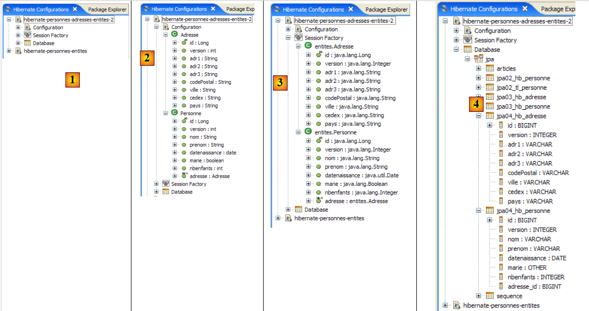 |
- in [1]: la configurazione creata presenta una struttura ad albero a tre rami
- in [2]: il ramo [Configuration] elenca gli oggetti che la console ha utilizzato per configurarsi: in questo caso le @Entity Personne e Adresse.
- in [3]: la Session Factory è un concetto di Hibernate simile a EntityManager di JPA. Realizza il ponte oggetto/relazionale grazie agli oggetti del ramo [Configuration]. In [3] sono presentati gli oggetti del contesto di persistenza, in questo caso nuovamente le @Entity Personne e Adresse.
- In [4]: il database a cui si accede tramite la configurazione presente in [persistence.xml]. Qui si trovano le tabelle [jpa04_hb_*] generate dal nostro attuale progetto Eclipse.
 |
- in [1], si crea un editor HQL
- nell’editor HQL,
- in [2], si sceglie la configurazione Hibernate da utilizzare se ce ne sono diverse (come in questo caso)
- in [3], si digita il comando JPQL che si desidera eseguire, in questo caso il comando JPQL del test 8
- in [4], lo si esegue
- in [5], si ottengono i risultati della query nella finestra [Hibernate Query Result].
- in [6], la finestra [Hibernate Dynamic SQL preview] consente di visualizzare la query SQL che è stata eseguita.
Un altro modo per ottenere lo stesso risultato:
 |
- in [1]: il comando JPQL esegue il join delle entità Personne e Adresse. [ref1] definisce questa forma «giunzione theta».
- in [2]: l'equivalente SQL
- in [3]: il risultato
Una terza forma accettata solo da Hibernate (HQL):
 |
- in [1]: il comando HQL. JPQL non accetta la notazione p.adresse.id. Accetta solo un livello di indirezione.
- in [2]: l'equivalente SQL. Si nota che evita il join tra le tabelle.
- in [3]: il risultato
Ecco altri esempi:
 |
- in [1]: l'elenco delle persone con i rispettivi indirizzi
- in [2]: l'equivalente SQL.
- in [3]: il risultato
 |
- in [1]: l'elenco degli indirizzi con il relativo proprietario, se presente, oppure nessuno in caso contrario (giunzione esterna destra: l’entità Adresse, che fornirà le righe non correlate a Personne, si trova a destra della parola chiave join).
- in [2]: l'equivalente di SQL.
- in [3]: il risultato
Si noti che solo l’entità Personne ha una relazione con l’entità Adresse. Il contrario non è più vero da quando è stata eliminata la relazione inversa uno-a-uno denominata personne nell’entità Adresse. Se questa relazione inversa fosse esistita, si sarebbe potuto scrivere:
 |
- in [1]: l'elenco degli indirizzi con il relativo proprietario, se presente, oppure nessuno in caso contrario (join esterno sinistro: l’entità Adresse, che fornirà le righe senza relazione con Personne, si trova a sinistra della parola chiave join).
- in [2]: l'equivalente di SQL.
- in [3]: il risultato
Invitiamo vivamente il lettore a esercitarsi con il linguaggio JPQL utilizzando la console Hibernate.
2.3.9. Implementazione JPA / Toplink
Ora utilizziamo un'implementazione JPA / Toplink:
 |
Il nuovo progetto Eclipse per i test è il seguente:
 |
I codici Java sono identici a quelli del precedente progetto Hibernate. L'ambiente (librerie – persistence.xml – SGBD – cartelle conf, ddl – script ant) è quello descritto nel paragrafo 2.1.15.2. Il progetto Eclipse è presente come [3] nella cartella degli esempi [4]. Lo importeremo.
Il file <persistence.xml> viene modificato in un punto, ovvero nelle entità dichiarate:
<persistence-unit name="jpa" transaction-type="RESOURCE_LOCAL">
<!-- provider -->
<provider>oracle.toplink.essentials.PersistenceProvider</provider>
<!-- classi persistenti -->
<class>entites.Personne</class>
<class>entites.Adresse</class>
<!-- proprietà dell'unità di persistenza -->
...
- righe 5 e 6: le due entità gestite
L'esecuzione di [InitDB] insieme a SGBD e MySQL5 fornisce i seguenti risultati:
 |
In [1], l'output della console; in [2], le due tabelle [jpa04_tl] generate; in [3], gli script SQL generati. Il loro contenuto è il seguente:
create.sql
CREATE TABLE jpa04_tl_personne (ID BIGINT NOT NULL, PRENOM VARCHAR(30) NOT NULL, DATENAISSANCE DATE NOT NULL, VERSION INTEGER NOT NULL, MARIE TINYINT(1) default 0 NOT NULL, NBENFANTS INTEGER NOT NULL, NOM VARCHAR(30) UNIQUE NOT NULL, adresse_id BIGINT UNIQUE NOT NULL, PRIMARY KEY (ID))
CREATE TABLE jpa04_tl_adresse (ID BIGINT NOT NULL, ADR3 VARCHAR(30), CODEPOSTAL VARCHAR(5) NOT NULL, ADR1 VARCHAR(30) NOT NULL, VILLE VARCHAR(20) NOT NULL, VERSION INTEGER NOT NULL, CEDEX VARCHAR(3), ADR2 VARCHAR(30), PAYS VARCHAR(20) NOT NULL, PRIMARY KEY (ID))
ALTER TABLE jpa04_tl_personne ADD CONSTRAINT FK_jpa04_tl_personne_adresse_id FOREIGN KEY (adresse_id) REFERENCES jpa04_tl_adresse (ID)
CREATE TABLE SEQUENCE (SEQ_NAME VARCHAR(50) NOT NULL, SEQ_COUNT DECIMAL(38), PRIMARY KEY (SEQ_NAME))
INSERT INTO SEQUENCE(SEQ_NAME, SEQ_COUNT) values ('SEQ_GEN', 1)
drop.sql
ALTER TABLE jpa04_tl_personne DROP FOREIGN KEY FK_jpa04_tl_personne_adresse_id
DROP TABLE jpa04_tl_personne
DROP TABLE jpa04_tl_adresse
DELETE FROM SEQUENCE WHERE SEQ_NAME = 'SEQ_GEN'
2.4. Esempio 4: relazione uno-a-molti
2.4.1. o dello schema del database
1  | 2 |
- in [1], il database e in [2], il suo DDL (MySQL5)
Un articolo A(id, versione, nome) appartiene esattamente a una categoria C(id, versione, nome). Una categoria C può contenere 0, 1 o più articoli. Si ha una relazione uno-a-molti (Categoria -> Articolo) e la relazione inversa molti-a-uno (Articolo -> Categoria). Questa relazione è rappresentata dalla chiave esterna che la tabella [article] possiede sulla tabella [categorie] (righe 24-28 della DDL).
2.4.2. Gli oggetti @Entity che rappresentano il database
Un articolo è rappresentato dalla seguente @Entity [Article]:
package entites;
...
@Entity
@Table(name="jpa05_hb_article")
public class Article implements Serializable {
// campi
@Id
@GeneratedValue(strategy = GenerationType.AUTO)
private Long id;
@SuppressWarnings("unused")
@Version
private int version;
@Column(length = 30)
private String nom;
// relazione principale Articolo (molti) -> Categoria (uno)
// implementata tramite una chiave esterna (categorie_id) in Articolo
// 1 Articolo ha necessariamente 1 Categoria (nullable=false)
@ManyToOne(fetch=FetchType.LAZY)
@JoinColumn(name = "categorie_id", nullable = false)
private Categorie categorie;
// costruttori
public Article() {
}
// getter e setter
...
// toString
public String toString() {
return String.format("Article[%d,%d,%s,%d]", id, version, nom, categorie.getId());
}
}
- righe 9-11: chiave primaria dell'@Entity
- righe 13-15: il suo numero di versione
- righe 17-18: nome dell'articolo
- righe 20-25: relazione molti-a-uno che collega l'@Entity Article all'@Entity Categorie:
- riga 23: l'annotazione ManyToOne. Il «Many» si riferisce all’@Entity Article in cui ci si trova e il «One» all’@Entity Categorie (riga 25). Una categoria (One) può avere più articoli (Many).
- riga 24: l'annotazione ManyToOne definisce la colonna chiave esterna nella tabella [article]. Si chiamerà (name) categorie_id e ogni riga dovrà avere un valore in questa colonna (nullable=false).
- riga 25: la categoria a cui appartiene l'articolo. Quando un articolo verrà inserito nel contesto di persistenza, si richiede che la sua categoria non vi venga inserita immediatamente (fetch=FetchType.LAZY, riga 23). Non si sa se questa richiesta abbia senso. Vedremo.
Una categoria è rappresentata dalla seguente @Entity [Categorie]:
package entites;
...
@Entity
@Table(name="jpa05_hb_categorie")
public class Categorie implements Serializable {
// campi
@Id
@GeneratedValue(strategy = GenerationType.AUTO)
private Long id;
@SuppressWarnings("unused")
@Version
private int version;
@Column(length = 30)
private String nom;
// relazione inversa Categoria (uno) -> Articolo (molti) della relazione Articolo (molti) -> Categoria (uno)
// inserimento a cascata da Categoria -> inserimento di Articoli
// aggiornamento a cascata Categoria -> aggiornamento Articoli
// cascata di eliminazione Categoria -> eliminazione Articoli
@OneToMany(mappedBy = "categorie", cascade = { CascadeType.ALL })
private Set<Article> articles = new HashSet<Article>();
// costruttori
public Categorie() {
}
// getter e setter
...
// toString
public String toString() {
return String.format("Categorie[%d,%d,%s]", id, version, nom);
}
// associazione bidirezionale Categoria <--> Articolo
public void addArticle(Article article) {
// l'articolo viene aggiunto alla raccolta degli articoli della categoria
articles.add(article);
// l'articolo cambia categoria
article.setCategorie(this);
}
}
- righe 8-11: la chiave primaria dell’@Entity
- righe 12-14: la sua versione
- righe 16-17: il nome della categoria
- righe 19-24: l'insieme (set) degli articoli della categoria
- riga 23: l'annotazione @OneToMany indica una relazione uno-a-molti. Il «One» indica l'@Entity [Categorie] in cui ci si trova, il «Many» il tipo [Article] della riga 24: una (One) categoria ha più (Many) articoli.
- riga 23: l'annotazione è l'inverso (mappedBy) dell'annotazione ManyToOne applicata al campo categorie dell'@Entity Article: mappedBy=categoria. La relazione ManyToOne associata al campo categorie dell'@Entity Article è la relazione principale. È indispensabile. Essa concretizza la relazione di chiave esterna che collega l'@Entity Article all'@Entity Categorie. La relazione OneToMany, definita sul campo articles dell'@Entity Categorie, è la relazione inversa. Non è indispensabile. Si tratta di una funzionalità che consente di recuperare gli articoli di una categoria. Senza questa funzionalità, tali articoli verrebbero recuperati tramite una query JPQL.
- riga 23: cascadeType.ALL richiede che le operazioni (persist, merge, remove) eseguite su un'@Entity Categorie vengano applicate a cascata ai suoi articoli.
- riga 24: gli articoli di una categoria saranno inseriti in un oggetto di tipo Set<Article>. Il tipo Set non accetta duplicati. Pertanto non è possibile inserire due volte lo stesso articolo nell’oggetto Set<Article>. Cosa si intende per «lo stesso articolo»? Per indicare che l’articolo a è lo stesso dell’articolo b, Java utilizza l’espressione a.equals(b). Nella classe Object, classe madre di tutte le classi, a.equals(b) è vero se a==b, c.a.d. se gli oggetti a e b occupano la stessa posizione in memoria. Si potrebbe voler dire che gli articoli a e b sono gli stessi se hanno lo stesso nome. In questo caso, lo sviluppatore deve ridefinire due metodi nella classe [Article]:
- equals: che deve restituire vero se i due articoli hanno lo stesso nome
- hashCode: deve restituire un valore intero identico per due oggetti [Article] che il metodo equals considera uguali. In questo caso, il valore sarà quindi costruito a partire dal nome dell'articolo. Il valore restituito da hashCode può essere un numero intero qualsiasi. Viene utilizzato in diversi contenitori di oggetti, in particolare nei dizionari (Hashtable).
La relazione OneToMany può utilizzare tipi diversi dal Set per memorizzare il Many, ad esempio oggetti List. Non tratteremo questi casi nel presente documento. Il lettore li troverà in [ref1].
- riga 38: il metodo [addArticle] ci permette di aggiungere un articolo a una categoria. Il metodo provvede ad aggiornare entrambe le estremità della relazione OneToMany che collega [Categorie] a [Article].
2.4.3. Il progetto Eclipse / Hibernate 1
L’implementazione JPA qui utilizzata è quella di Hibernate. Il progetto Eclipse dei test è il seguente:
 |
Il progetto si trova in [3] nella cartella degli esempi [4]. Lo importeremo.
2.4.4. Generazione del file DDL dal database
Seguendo le istruzioni del paragrafo 2.1.7, il file DDL ottenuto per il SGBD MySQL5 è quello mostrato all’inizio di questo esempio, al paragrafo 2.4.1.
2.4.5. InitDB
Il codice di [InitDB] è il seguente:
package tests;
...
public class InitDB {
// costanti
private final static String TABLE_ARTICLE = "jpa05_hb_article";
private final static String TABLE_CATEGORIE = "jpa05_hb_categorie";
public static void main(String[] args) {
// Contesto di persistenza
EntityManagerFactory emf = Persistence.createEntityManagerFactory("jpa");
EntityManager em = null;
// si recupera un EntityManager dal precedente EntityManagerFactory
em = emf.createEntityManager();
// inizio transazione
EntityTransaction tx = em.getTransaction();
tx.begin();
// richiesta
Query sql1;
// eliminare gli elementi dalla tabella ARTICLE
sql1 = em.createNativeQuery("delete from " + TABLE_ARTICLE);
sql1.executeUpdate();
// eliminare gli elementi dalla tabella CATEGORIE
sql1 = em.createNativeQuery("delete from " + TABLE_CATEGORIE);
sql1.executeUpdate();
// crea tre categorie
Categorie categorieA = new Categorie();
categorieA.setNom("A");
Categorie categorieB = new Categorie();
categorieB.setNom("B");
Categorie categorieC = new Categorie();
categorieC.setNom("C");
// creare 3 articoli
Article articleA1 = new Article();
articleA1.setNom("A1");
Article articleA2 = new Article();
articleA2.setNom("A2");
Article articleB1 = new Article();
articleB1.setNom("B1");
// collegarli alla rispettiva categoria
categorieA.addArticle(articleA1);
categorieA.addArticle(articleA2);
categorieB.addArticle(articleB1);
// salvare le categorie e, di conseguenza (inserimento), gli articoli
em.persist(categorieA);
em.persist(categorieB);
em.persist(categorieC);
// visualizzazione delle categorie
System.out.println("[categories]");
for (Object p : em.createQuery("select c from Categorie c order by c.nom asc").getResultList()) {
System.out.println(p);
}
// visualizzazione articoli
System.out.println("[articles]");
for (Object p : em.createQuery("select a from Article a order by a.nom asc").getResultList()) {
System.out.println(p);
}
// fine transazione
tx.commit();
// fine EntityManager
em.close();
// fine EntityMangerFactory
emf.close();
// registro
System.out.println("terminé...");
}
}
- righe 22-27: le tabelle [article] e [categorie] vengono svuotate. Si noti che è necessario iniziare da quella che contiene la chiave esterna. Se si iniziasse dalla tabella [categorie], verrebbero eliminate le categorie a cui fanno riferimento le righe della tabella [article] e ciò verrebbe rifiutato dalla tabella SGBD.
- righe 29-34: si creano tre categorie A, B, C
- righe 36-41: si creano tre articoli A1, A2, B1 (la lettera indica la categoria)
- righe 43-45: i 3 articoli vengono inseriti nelle rispettive categorie
- righe 47-49: le 3 categorie vengono inserite nel contesto di persistenza. A causa della cascata Categoria -> Articolo, anche i relativi articoli verranno inseriti in tale contesto. Pertanto, tutti gli oggetti creati si trovano ora nel contesto di persistenza.
- righe 50-59: viene richiesto il contesto di persistenza per ottenere l'elenco delle categorie e degli articoli. È noto che ciò provocherà una sincronizzazione del contesto con il database. È in questo momento che le categorie e gli articoli verranno salvati nelle rispettive tabelle.
L'esecuzione di [InitDB] insieme a MySQL5 fornisce i seguenti risultati:
 |
- [1]: l’output della console
- [2]: le tabelle [jpa05_hb_*] nella prospettiva SQL Explorer
- [3]: la tabella delle categorie
- [4]: la tabella degli articoli. Da notare il collegamento tra [categorie_id] in [4] e [id] in [3] (chiave esterna).
2.4.6. Pagina principale
La classe [Main] concatena una serie di test che esamineremo, ad eccezione dei test 1 e 2 che riprendono il codice di [InitDB] per inizializzare il database.
2.4.6.1. Test3
Questo test è il seguente:
// cerca un elemento specifico
public static void test3() {
// nuovo contesto di persistenza
EntityManager em = getNewEntityManager();
// transazione
EntityTransaction tx = em.getTransaction();
tx.begin();
// caricamento categoria
Categorie categorie = em.find(Categorie.class, categorieA.getId());
// visualizzazione della categoria e dei relativi articoli
System.out.format("Articles de la catégorie %s :%n", categorie);
for (Article a : categorie.getArticles()) {
System.out.println(a);
}
// fine transazione
tx.commit();
}
- riga 4: si ha un contesto di persistenza nuovo, quindi vuoto
- righe 6-7: inizio transazione
- riga 9: la categoria A viene recuperata dal database nel contesto di persistenza
- riga 11: si visualizza la categoria A
- righe 12-14: si visualizzano gli articoli della categoria A. Qui si evidenzia l’utilità della relazione inversa OneToMany articoli dell’@Entity Categorie. La sua presenza ci evita di eseguire una query JPQL per richiedere gli articoli della categoria A. Per ottenerli, si utilizza il metodo get del campo articles.
I risultati sono i seguenti:
- riga 20: la categoria A
- righe 21-22: i due articoli della categoria A
2.4.6.2. Test4
Questo test è il seguente:
// eliminazione di un articolo
@SuppressWarnings("unchecked")
public static void test4() {
// nuovo contesto di persistenza
EntityManager em = getNewEntityManager();
// transazione
EntityTransaction tx = em.getTransaction();
tx.begin();
// caricamento articolo A1
Article newarticle1 = em.find(Article.class, articleA1.getId());
// eliminazione articolo A1 (attualmente non è caricata alcuna categoria)
em.remove(newarticle1);
// toplink: l'articolo deve essere rimosso dalla sua categoria, altrimenti il test6 va in crash
// hibernate: non è necessario
newarticle1.getCategorie().getArticles().remove(newarticle1);
// fine transazione
tx.commit();
// dump degli articoli
dumpArticles();
}
- il test 4 elimina l'articolo A1
- riga 5: si parte da un contesto nuovo e vuoto
- riga 10: l'articolo A1 viene inserito nel contesto di persistenza. Qui sarà referenziato come newarticle1.
- riga 12: viene eliminato dal contesto
- riga 15: le categorie A, B e C e gli articoli A1, A2 e B1, sebbene non siano più persistenti, sono comunque ancora in memoria. Sono semplicemente scollegati dal contesto di persistenza. L'articolo A1, che fa parte degli articoli della categoria A, viene rimosso da quest'ultima. Ciò consentirà in seguito di ricollegare la categoria A al contesto di persistenza. Se non lo si fa, la categoria A verrà ricollegata a un insieme di articoli di cui uno è stato rimosso. Ciò non sembra creare problemi a Hibernate, ma causa un crash di Toplink.
- Riga 19: si visualizzano tutti gli articoli per verificare che A1 sia scomparso.
I risultati sono i seguenti:
L’articolo A1 è effettivamente scomparso.
2.4.6.3. Test5
Questo test è il seguente:
// modifica di 1 articolo
public static void test5() {
// nuovo contesto di persistenza
EntityManager em = getNewEntityManager();
// transazione
EntityTransaction tx = em.getTransaction();
tx.begin();
// modifica di articleA2
articleA2.setNom(articleA2.getNom() + "-");
// articleA2 viene reinserito nel contesto di persistenza
em.merge(articleA2);
// fine transazione
tx.commit();
// dump degli articoli
dumpArticles();
}
- il test 5 modifica il nome dell'articolo A2
- riga 4: si parte da un contesto nuovo e vuoto
- riga 9: si modifica il nome dell'articolo distaccato A2, che diventerà "A2-".
- riga 11: l’articolo distaccato A2 viene ricollegato al contesto di persistenza. Si noti che A2 rimane sempre un oggetto distaccato. È l’oggetto em.merge (articleA2) che ora fa parte del contesto di persistenza. Questo oggetto non è stato memorizzato in una variabile, come di consueto. È quindi inaccessibile.
- riga 13: sincronizzazione del contesto di persistenza con il database. L’articolo A2 verrà modificato nel database e il suo numero di versione passerà da N a N+1. La versione in memoria distaccata articleA2 non è più valida. Lo stesso vale per l’oggetto distaccato che rappresenta la categoria A, poiché questo contiene articleA2 tra i propri articoli.
- riga 15: vengono visualizzati tutti gli articoli per verificare la modifica del nome dell’articolo A2
I risultati sono i seguenti:
L’articolo A2 ha effettivamente cambiato nome.
2.4.6.4. Test6
Questo test è il seguente:
// modifica di 1 categoria e dei relativi articoli
public static void test6() {
// nuovo contesto di persistenza
EntityManager em = getNewEntityManager();
// transazione
EntityTransaction tx = em.getTransaction();
tx.begin();
// caricamento categoria
categorieA = em.find(Categorie.class, categorieA.getId());
// elenco degli articoli della categoria A
for (Article a : categorieA.getArticles()) {
a.setNom(a.getNom() + "-");
}
// modifica del nome della categoria
categorieA.setNom(categorieA.getNom() + "-");
// fine transazione
tx.commit();
// dump delle categorie e degli articoli
dumpCategories();
dumpArticles();
}
- il test 6 modifica il nome della categoria A e di tutti i suoi articoli
- riga 4: si parte da un contesto nuovo e vuoto
- riga 9: si recupera la categoria A dal database. Non si esegue un merge sull'oggetto distaccato categorieA poiché si sa che esso contiene un riferimento all'articolo A2, ormai obsoleto. Si ricomincia quindi da zero.
- righe 11-12: si modifica il nome di tutti gli articoli della categoria A. Ancora una volta si utilizza la relazione inversa OneToMany tramite il metodo getArticles.
- riga 15: viene modificato anche il nome della categoria
- riga 17: fine della transazione. Viene eseguita una sincronizzazione del contesto con il database. Tutti gli oggetti del contesto che sono stati modificati verranno aggiornati nel database.
- righe 21-22: vengono visualizzati gli articoli e le categorie per la verifica
I risultati sono i seguenti:
L'articolo A2 ha cambiato nuovamente nome, così come la categoria A.
2.4.6.5. Test7
Questo test è il seguente:
// eliminazione di una categoria
public static void test7() {
// nuovo contesto di persistenza
EntityManager em = getNewEntityManager();
// transazione
EntityTransaction tx = em.getTransaction();
tx.begin();
// persistenza catégorieB e eliminazione a cascata (merge) degli articoli associati
Categorie mergedcategorieB = em.merge(categorieB);
// eliminazione della categoria e, a cascata (delete), degli articoli associati
em.remove(mergedcategorieB);
// fine transazione
tx.commit();
// esportazione delle categorie e degli articoli
dumpCategories();
dumpArticles();
}
- il test 7 elimina la categoria B e, di conseguenza, i relativi articoli
- riga 4: si parte da un contesto nuovo e vuoto
- riga 9: la categoria B esiste in memoria come oggetto separato dal contesto di persistenza. La si reintegra (merge) nel contesto di persistenza. Di conseguenza, i suoi articoli (l’articolo B1) subiranno un’operazione merge e quindi verranno reintegrati nel contesto di persistenza.
- riga 11: ora che la categoria B si trova nel contesto, è possibile eliminarla (remove). Per effetto a cascata, anche i suoi articoli subiranno un'operazione remove. Questa operazione è possibile proprio perché l'operazione merge della riga 9 li ha reintegrati nel contesto di persistenza.
- riga 13: fine della transazione. Il contesto verrà sincronizzato. Gli oggetti del contesto che hanno subito un’operazione remove verranno eliminati dal database.
- righe 15-16: vengono visualizzati gli articoli e le categorie per la verifica
I risultati sono i seguenti:
La categoria B e l’articolo B1 sono stati effettivamente rimossi.
2.4.6.6. Test8
Questo test è il seguente:
// richieste
@SuppressWarnings("unchecked")
public static void test8() {
// nuovo contesto di persistenza
EntityManager em = getNewEntityManager();
// transazione
EntityTransaction tx = em.getTransaction();
tx.begin();
// elenco degli articoli della categoria A
List articles = em
.createQuery(
"select a from Categorie c join c.articles a where c.nom like 'A%' order by a.nom asc")
.getResultList();
// visualizzazioni articoli
System.out.println("Articles de la catégorie A");
for (Object a : articles) {
System.out.println(a);
}
// fine transazione
tx.commit();
}
- il test 7 mostra come recuperare gli articoli di una categoria senza passare attraverso la relazione inversa. Ciò dimostra che quest'ultima non è quindi indispensabile.
- riga 4: si parte da un contesto nuovo e vuoto
- riga 10: una query JPQL che richiede tutti gli articoli di una categoria il cui nome inizi con A
- righe 15-17: visualizzazione del risultato della query.
I risultati sono i seguenti:
2.4.7. Progetto Eclipse / Hibernate 2
Copiamo e incolliamo il progetto Eclipse / Hibernate per chiarire un punto relativo al concetto di relazione principale / relazione inversa che abbiamo creato attorno all'annotazione @ManyToOne (principale) dell'@Entity [Article] e la relazione inversa @OneToMany (inversa) dell'@Entity [Categorie]. Vogliamo dimostrare che, se quest’ultima relazione non viene dichiarata inversa rispetto all’altra, lo schema generato per il database sarà completamente diverso da quello generato in precedenza.
 |
In [1] il nuovo progetto Eclipse. In [2] il codice Java, in [3] lo script ant che genererà lo schema SQL del database. Il progetto si trova in [4] nella cartella degli esempi [5]. Lo importeremo.
Modifichiamo solo l’@Entity [Categorie] in modo che la sua relazione @OneToMany con l’@Entity [Article] non sia più dichiarata inversa rispetto alla relazione @ManyToOne che l'@Entity [Article] ha con l'@Entity [Categorie]:
...
@Entity
@Table(name="jpa05_hb_categorie")
public class Categorie implements Serializable {
// campi
@Id
@GeneratedValue(strategy = GenerationType.AUTO)
private Long id;
@SuppressWarnings("unused")
@Version
private int version;
@Column(length = 30)
private String nom;
// relazione OneToMany non inversa (assenza di mappedby) Categoria (uno) -> Articolo (molti)
// implementata tramite una tabella di join Categorie_Article affinché, partendo da una categoria
// si possano raggiungere gli articoli di quella categoria
@OneToMany(cascade=CascadeType.ALL, fetch=FetchType.LAZY)
private Set<Article> articles = new HashSet<Article>();
// produttori
...
- righe 18-22: si vuole comunque mantenere la possibilità di trovare gli articoli di una determinata categoria grazie alla relazione @OneToMany della riga 21. Ma vogliamo verificare l’influenza dell’attributo mappedBy, che rende una relazione l’inverso di una relazione principale definita altrove, in un’altra @Entity. In questo caso, il mappedBy è stato rimosso.
Eseguiamo il task ant-DLL (cfr. paragrafo 2.1.7) con SGBD e MySQL5. Lo schema ottenuto è il seguente:
 |
Si notino i seguenti punti:
- è stata creata una nuova tabella [categorie_article] [1]. In precedenza non esisteva.
- Si tratta di una tabella di join tra le tabelle [categorie] [2] e [article] [3]. Se gli oggetti Articolo a1 e a2 appartengono alla categoria c1, nella tabella di join si troveranno le righe:
dove c1, a1, a2 sono le chiavi primarie degli oggetti corrispondenti.
- La tabella di join [categorie_article] [1] è stata creata da Hibernate affinché, a partire da un oggetto Categorie c, sia possibile recuperare gli oggetti Articolo a appartenenti a c. È stata la relazione @OneToMany a determinare la creazione di questa tabella. Poiché non è stata dichiarata come inversa della relazione principale @ManyToOne dell’@Entity Article, Hibernate non sapeva di poter utilizzare questa relazione principale per recuperare gli articoli di una categoria c. Ha quindi trovato un’altra soluzione.
- Con questo esempio si comprendono meglio i concetti di relazioni principale e inverse. Una (quella inversa) utilizza le proprietà dell’altra (quella principale).
Lo schema SQL di questo database per MySQL5 è il seguente:
alter table jpa05_hb_categorie_jpa06_hb_article
drop
foreign key FK79D4BA1D26D17756;
alter table jpa05_hb_categorie_jpa06_hb_article
drop
foreign key FK79D4BA1D424C61C9;
alter table jpa06_hb_article
drop
foreign key FK4547168FECCE8750;
drop table if exists jpa05_hb_categorie;
drop table if exists jpa05_hb_categorie_jpa06_hb_article;
drop table if exists jpa06_hb_article;
create table jpa05_hb_categorie (
id bigint not null auto_increment,
version integer not null,
nom varchar(30),
primary key (id)
) ENGINE=InnoDB;
create table jpa05_hb_categorie_jpa06_hb_article (
jpa05_hb_categorie_id bigint not null,
articles_id bigint not null,
primary key (jpa05_hb_categorie_id, articles_id),
unique (articles_id)
) ENGINE=InnoDB;
create table jpa06_hb_article (
id bigint not null auto_increment,
version integer not null,
nom varchar(30),
categorie_id bigint not null,
primary key (id)
) ENGINE=InnoDB;
alter table jpa05_hb_categorie_jpa06_hb_article
add index FK79D4BA1D26D17756 (jpa05_hb_categorie_id),
add constraint FK79D4BA1D26D17756
foreign key (jpa05_hb_categorie_id)
references jpa05_hb_categorie (id);
alter table jpa05_hb_categorie_jpa06_hb_article
add index FK79D4BA1D424C61C9 (articles_id),
add constraint FK79D4BA1D424C61C9
foreign key (articles_id)
references jpa06_hb_article (id);
alter table jpa06_hb_article
add index FK4547168FECCE8750 (categorie_id),
add constraint FK4547168FECCE8750
foreign key (categorie_id)
references jpa05_hb_categorie (id);
- righe 19-24: creazione della tabella [categorie] e righe 33-39: creazione della tabella [article]. Si noti che sono identiche a quelle dell’esempio precedente.
- righe 26-31: creazione della tabella di join [categorie_article] dovuta alla presenza della relazione non inversa @OneToMany dell’@Entity Categorie. Le righe di questa tabella sono di tipo [c,a], dove c è la chiave primaria di una categoria c e a è la chiave primaria diun articolo a appartenente alla categoria c. La chiave primaria di questa tabella di join è costituita dalle due chiavi primarie [c,a] concatenate (riga 29).
- righe 41-45: il vincolo di chiave esterna dalla tabella [categorie_article] alla tabella [categorie]
- righe 47-51: il vincolo di chiave esterna dalla tabella [categorie_article] alla tabella [article]
- righe 53-57: il vincolo di chiave esterna dalla tabella [article] alla tabella [categorie]
Si invita il lettore a eseguire i test [InitDB] e [Main]. Essi forniscono gli stessi risultati di prima. Lo schema del database è tuttavia ridondante e le prestazioni risulteranno inferiori rispetto alla versione precedente. Sarebbe probabilmente opportuno approfondire la questione delle relazioni inverse/principali per verificare se la nuova configurazione non comporti ulteriori conflitti dovuti al fatto che si hanno due relazioni indipendenti per rappresentare la stessa cosa: la relazione molti-a-uno che la tabella [article] ha con la tabella [categorie].
2.4.8. Implementazione JPA / Toplink - 1
Ora utilizziamo un'implementazione JPA / Toplink:
 |
Il progetto Eclipse con Toplink è una copia del progetto Eclipse con Hibernate, versione 1:
 |
I codici Java sono identici a quelli del precedente progetto Hibernate - versione 1. L'ambiente (librerie – persistence.xml – SGBD - cartelle conf, ddl – script ant) è quello descritto nel paragrafo 2.1.15.2. Il progetto Eclipse è presente come [3] nella cartella degli esempi [4]. Lo importeremo.
Il file <persistence.xml> [2] viene modificato in un punto, ovvero nelle entità dichiarate:
...
<!-- classi persistenti -->
<class>entites.Categorie</class>
<class>entites.Article</class>
...
- righe 3 e 4: le due entità gestite
L'esecuzione di [InitDB] con SGBD e MySQL5 fornisce i seguenti risultati:
 |
In [1], l'output della console; in [2], le due tabelle [jpa05_tl] generate; in [3], gli script SQL generati. Il loro contenuto è il seguente:
create.sql
CREATE TABLE jpa05_tl_article (ID BIGINT NOT NULL, VERSION INTEGER, NOM VARCHAR(30), categorie_id BIGINT NOT NULL, PRIMARY KEY (ID))
CREATE TABLE jpa05_tl_categorie (ID BIGINT NOT NULL, VERSION INTEGER, NOM VARCHAR(30), PRIMARY KEY (ID))
ALTER TABLE jpa05_tl_article ADD CONSTRAINT FK_jpa05_tl_article_categorie_id FOREIGN KEY (categorie_id) REFERENCES jpa05_tl_categorie (ID)
CREATE TABLE SEQUENCE (SEQ_NAME VARCHAR(50) NOT NULL, SEQ_COUNT DECIMAL(38), PRIMARY KEY (SEQ_NAME))
INSERT INTO SEQUENCE(SEQ_NAME, SEQ_COUNT) values ('SEQ_GEN', 1)
drop.sql
ALTER TABLE jpa05_tl_article DROP FOREIGN KEY FK_jpa05_tl_article_categorie_id
DROP TABLE jpa05_tl_article
DROP TABLE jpa05_tl_categorie
DELETE FROM SEQUENCE WHERE SEQ_NAME = 'SEQ_GEN'
L'esecuzione di [Main] avviene senza errori.
2.4.9. Implementazione JPA / Toplink - 2
Questo progetto Eclipse è stato creato dal precedente tramite copia. Poiché è stato realizzato con Hibernate, si rimuove l'attributo mappedBy dalla relazione @OneToMany dell'@Entity Categorie.
@Entity
@Table(name = "jpa06_tl_categorie")
public class Categorie implements Serializable {
// campi
@Id
@GeneratedValue(strategy = GenerationType.AUTO)
private Long id;
@Version
private int version;
@Column(length = 30)
private String nom;
// relazione OneToMany non inversa (assenza di mappedby) Categoria (one) ->
// Articolo (many)
// implementata tramite una tabella di join Categorie_Article affinché, a partire
// di una categoria
// si possano raggiungere più articoli
@OneToMany(cascade = CascadeType.ALL, fetch = FetchType.LAZY)
private Set<Article> articles = new HashSet<Article>();
Lo schema SQL generato per MySQL5 è quindi il seguente:
create.sql
CREATE TABLE jpa06_tl_categorie (ID BIGINT NOT NULL, VERSION INTEGER, NOM VARCHAR(30), PRIMARY KEY (ID))
CREATE TABLE jpa06_tl_categorie_jpa06_tl_article (Categorie_ID BIGINT NOT NULL, articles_ID BIGINT NOT NULL, PRIMARY KEY (Categorie_ID, articles_ID))
CREATE TABLE jpa06_tl_article (ID BIGINT NOT NULL, VERSION INTEGER, NOM VARCHAR(30), categorie_id BIGINT NOT NULL, PRIMARY KEY (ID))
ALTER TABLE jpa06_tl_categorie_jpa06_tl_article ADD CONSTRAINT FK_jpa06_tl_categorie_jpa06_tl_article_articles_ID FOREIGN KEY (articles_ID) REFERENCES jpa06_tl_article (ID)
ALTER TABLE jpa06_tl_categorie_jpa06_tl_article ADD CONSTRAINT jpa06_tl_categorie_jpa06_tl_article_Categorie_ID FOREIGN KEY (Categorie_ID) REFERENCES jpa06_tl_categorie (ID)
ALTER TABLE jpa06_tl_article ADD CONSTRAINT FK_jpa06_tl_article_categorie_id FOREIGN KEY (categorie_id) REFERENCES jpa06_tl_categorie (ID)
CREATE TABLE SEQUENCE (SEQ_NAME VARCHAR(50) NOT NULL, SEQ_COUNT DECIMAL(38), PRIMARY KEY (SEQ_NAME))
INSERT INTO SEQUENCE(SEQ_NAME, SEQ_COUNT) values ('SEQ_GEN', 1)
- riga 2: la tabella di join che concretizza la precedente relazione @OneToMany non inversa.
L'esecuzione di [InitDB] avviene senza errori, mentre quella di [Main] si interrompe al test 7 con i seguenti log (FINEST):
- riga 3: il merge nella categoria B
- riga 4: l'articolo dipendente B1 viene inserito nel contesto
- riga 5: lo stesso vale per la categoria B stessa
- riga 6: il codice remove nella categoria B
- riga 7: il codice remove sull'articolo B1 (per cascata)
- riga 8: il codice Java richiede il commit della transazione
- riga 9: viene avviata una transazione; a quanto pare, quindi, non era ancora iniziata.
- riga 10: l’articolo B1 verrà eliminato da un’operazione DELETE sulla tabella [article]. È qui che si trova il problema. La tabella di join [categorie_article] ha un riferimento alla riga B1 della tabella [article]. L'eliminazione di B1 in [article] violerà un vincolo di chiave esterna.
- righe 13 e successive: si verifica l'eccezione
Cosa si può concludere?
- Ancora una volta, si presenta un problema di portabilità tra Hibernate e Toplink: Hibernate aveva superato questo test
- Toplink non gestisce correttamente il caso in cui due relazioni siano di fatto inverse l’una rispetto all’altra, senza che una sia dichiarata principale e l’altra inversa. Si può accettare questa situazione poiché si tratta in realtà di un errore di configurazione. Nel nostro esempio, la tabella [article] non ha alcuna relazione con la tabella di join [categorie_article]. Sembra quindi naturale che, durante un’operazione sulla tabella [article], Toplink non cerchi di lavorare con la tabella [categorie_article].
2.5. Esempio 5: relazione molti-a-molti con una tabella di join esplicita
2.5.1. Lo schema del database
|
- in [1], il database MySQL5
Conosciamo già le tabelle [personne], [2] e [adresse], [3]. Sono state esaminate nel paragrafo 2.3.1. Prendiamo in esame la versione in cui l’indirizzo della persona è oggetto di una tabella a sé stante: [adresse] e [3]. Nella tabella [personne], la relazione che collega una persona al proprio indirizzo è rappresentata da un vincolo di chiave esterna.
Una persona svolge delle attività. Queste sono presenti nelle tabelle [activite] e [4]. Una persona può svolgere più attività e un’attività può essere svolta da più persone. Una relazione molti-a-molti collega quindi le tabelle [personne] e [activite]. Questa relazione è rappresentata dalla tabella di join [personne_activite] [5].
2.5.2. Gli oggetti @Entity che rappresentano il database
Le tabelle precedenti saranno rappresentate dalle seguenti @Entity:
- l'@Entity Personne rappresenterà la tabella [personne]
- l’@Entity Adresse rappresenterà la tabella [adresse]
- l'@Entity Activite rappresenterà la tabella [activite]
- l'@Entity PersonneActivite rappresenterà la tabella [personne_activite]
Le relazioni tra queste entità sono le seguenti:
- una relazione uno-a-uno collega l’entità Personne all’entità Adresse: una persona p ha un indirizzo a. L'entità Personne, che detiene la chiave esterna, avrà la relazione principale, mentre l'entità Adresse avrà la relazione inversa.
- Una relazione molti-a-molti collega le entità Personne e Activite: una persona svolge diverse attività e un’attività è svolta da più persone. Questa relazione potrebbe essere realizzata direttamente tramite un’annotazione @ManyToMany in ciascuna delle due entità, dichiarando l’una come inversa dell’altra. Questa soluzione verrà approfondita in seguito. In questa sede, realizziamo la relazione molti-a-molti tramite due relazioni uno-a-molti:
- una relazione uno-a-molti che collega l’entità Personne all’entità PersonneActivite: una riga (One) della tabella [personne] è referenziata da più (Many) righe della tabella [personne_activite]. La tabella [personne_activite], che contiene la chiave esterna, avrà la relazione principale @ManyToOne, mentre l’entità Personne avrà la relazione inversa @OneToMany.
- una relazione uno-a-molti che collega l’entità Activite all’entità PersonneActivite: una riga (One) della tabella [activite] è referenziata da più (Many) righe della tabella [personne_activite]. La tabella [personne_activite], che contiene la chiave esterna, avrà la relazione principale @ManyToOne, mentre l'entità Activite avrà la relazione inversa @OneToMany.
L'@Entity Personne è la seguente:
@Entity
@Table(name = "jpa07_hb_personne")
public class Personne implements Serializable {
@Id
@Column(nullable = false)
@GeneratedValue(strategy = GenerationType.AUTO)
private Long id;
@Column(nullable = false)
@Version
private int version;
@Column(length = 30, nullable = false, unique = true)
private String nom;
@Column(length = 30, nullable = false)
private String prenom;
@Column(nullable = false)
@Temporal(TemporalType.DATE)
private Date datenaissance;
@Column(nullable = false)
private boolean marie;
@Column(nullable = false)
private int nbenfants;
// relazione principale Persona (una) -> Indirizzo (uno)
// implementata dalla chiave esterna Persona(adresse_id) -> Indirizzo
// inserimento a cascata Persona -> inserimento Indirizzo
// aggiornamento a cascata Persona -> aggiornamento Indirizzo
// cascata eliminazione Persona -> eliminazione Indirizzo
// una Persona deve avere 1 Indirizzo (nullable=false)
// 1 Indirizzo appartiene a una sola persona (unico=vero)
@OneToOne(cascade = CascadeType.ALL)
@JoinColumn(name = "adresse_id", unique = true, nullable = false)
private Adresse adresse;
// relazione Persona (uno) -> PersonneActivite (molti)
// inverso della relazione esistente PersonneActivite (many) -> Persona (one)
// cascata di eliminazione Persona -> eliminazione PersonneActivite
@OneToMany(mappedBy = "personne", cascade = { CascadeType.REMOVE })
private Set<PersonneActivite> activites = new HashSet<PersonneActivite>();
// costruttori
Questa @Entity è nota. Commentiamo solo le relazioni che essa ha con le altre entità:
- righe 30-39: una relazione uno-a-uno @OneToOne con l'@Entity Adresse, concretizzata da una chiave esterna [adresse_id] (riga 38) che la tabella [personne] avrà sulla tabella [adresse].
- righe 41-45: una relazione uno-a-molti @OneToMany con l'@Entity PersonneActivite. Una persona (One) è referenziata da più (Many) righe della tabella di join [personne_activite] rappresentata dall'@Entity PersonneActivite. Questi oggetti PersonneActivite saranno inseriti in un tipo Set<PersonneActivite>, dove PersonneActivite è un tipo che definiremo tra poco.
- riga 44: la relazione uno-a-molti qui definita è la relazione inversa di una relazione principale definita sul campo personne dell’@Entity PersonneActivite (parola chiave mappedBy). È presente una cascata Persona -> Attività per le eliminazioni: l’eliminazione di una persona p comporterà l’eliminazione degli elementi persistenti di tipo PersonneActivite presenti nell’insieme p.activites.
L'@Entity Adresse è la seguente:
@Entity
@Table(name = "jpa07_hb_adresse")
public class Adresse implements Serializable {
// campi
@Id
@Column(nullable = false)
@GeneratedValue(strategy = GenerationType.AUTO)
private Long id;
@Column(nullable = false)
@Version
private int version;
@Column(length = 30, nullable = false)
private String adr1;
@Column(length = 30)
private String adr2;
@Column(length = 30)
private String adr3;
@Column(length = 5, nullable = false)
private String codePostal;
@Column(length = 20, nullable = false)
private String ville;
@Column(length = 3)
private String cedex;
@Column(length = 20, nullable = false)
private String pays;
@OneToOne(mappedBy = "adresse")
private Personne personne;
- righe 28-29: la relazione @OneToOne, inversa della relazione @OneToOne, rimanda all’@Entity Personne (righe 37-38 di Personne).
L'@Entity Activite è la seguente
@Entity
@Table(name = "jpa07_hb_activite")
public class Activite implements Serializable {
// campi
@Id
@Column(nullable = false)
@GeneratedValue(strategy = GenerationType.AUTO)
private Long id;
@Column(nullable = false)
@Version
private int version;
@Column(length = 30, nullable = false, unique = true)
private String nom;
// relazione Attività (uno) -> PersonneActivite (molti)
// inverso della relazione esistente PersonneActivite (molti) -> Attività (uno)
// cascata di eliminazione Attività -> eliminazione PersonneActivite
@OneToMany(mappedBy = "activite", cascade = { CascadeType.REMOVE })
private Set<PersonneActivite> personnes = new HashSet<PersonneActivite>();
- righe 6-9: la chiave primaria dell’attività
- righe 11-13: il numero di versione dell’attività
- righe 15-16: il nome dell’attività
- righe 18-22: la relazione uno-a-molti che collega l'@Entity Activite all'@Entity PersonneActivite: un'attività (One) è referenziata da più (Many) righe della tabella di join [personne_activite] rappresentata dall'@Entity PersonneActivite. Questi oggetti PersonneActivite saranno inseriti in un tipo Set<PersonneActivite>.
- riga 22: la relazione uno-a-molti qui definita è la relazione inversa di una relazione principale definita sul campo activite nell’@Entity PersonneActivite (parola chiave mappedBy). È presente una cascata Attività -> PersonneActivite per le eliminazioni: l’eliminazione della tabella [activite] daun'attività a comporterà l'eliminazione della tabella di join [personne_activite] degli elementi persistenti di tipo PersonneActivite presenti nell'insieme a.personnes.
L'@Entity PersonneActivite è la seguente:
@Entity
// tabella di join
@Table(name = "jpa07_hb_personne_activite")
public class PersonneActivite {
@Embeddable
public static class Id implements Serializable {
// componenti della chiave composita
// punta a una Persona
@Column(name = "PERSONNE_ID")
private Long personneId;
// punta a un'attività
@Column(name = "ACTIVITE_ID")
private Long activiteId;
// costruttori
...
// getter e setter
...
// toString
public String toString() {
return String.format("[%d,%d]", getPersonneId(), getActiviteId());
}
}
// campi della classe Personne_Activite
// chiave composita
@EmbeddedId
private Id id = new Id();
// relazione principale PersonneActivite (many) -> Persona (one)
// implementata dalla chiave esterna: personneId (PersonneActivite (molti) -> Persona (uno)
// personneId è allo stesso tempo un elemento della chiave primaria composita
// JPA non deve gestire questa chiave esterna (insertable = false, updatable = false) poiché ciò viene effettuato dall'applicazione stessa nel proprio costruttore
@ManyToOne
@JoinColumn(name = "PERSONNE_ID", insertable = false, updatable = false)
private Personne personne;
// relazione principale PersonneActivite -> Attività
// implementata dalla chiave esterna: activiteId (PersonneActivite (molte) -> Attività (una)
// activiteId è allo stesso tempo un elemento della chiave primaria composita
// JPA non deve gestire questa chiave esterna (insertable = false, updatable = false) poiché ciò viene effettuato dall'applicazione stessa nel proprio costruttore
@ManyToOne()
@JoinColumn(name = "ACTIVITE_ID", insertable = false, updatable = false)
private Activite activite;
// costruttori
public PersonneActivite() {
}
public PersonneActivite(Personne p, Activite a) {
// le chiavi esterne sono definite dall’applicazione
getId().setPersonneId(p.getId());
getId().setActiviteId(a.getId());
// associazioni bidirezionali
this.setPersonne(p);
this.setActivite(a);
p.getActivites().add(this);
a.getPersonnes().add(this);
}
// getter e setter
...
// toString
public String toString() {
return String.format("[%s,%s,%s]", getId(), getPersonne().getNom(), getActivite().getNom());
}
}
Questa classe è più complessa rispetto alle precedenti.
- La tabella [personne_activite] contiene righe della forma [p,a], dove p è la chiave primaria di una persona e a è la chiave primaria di un'attività. Ogni tabella deve avere una chiave primaria e [personne_activite] non fa eccezione alla regola. Finora avevamo definito chiavi primarie generate dinamicamente da SGBD. Potremmo farlo anche in questo caso. Utilizzeremo invece un’altra tecnica, quella in cui è l’applicazione stessa a definire i valori della chiave primaria di una tabella. In questo caso, una riga [p1,a1] indica che una persona p1 pratica l’attività a1. Non è possibile trovare una seconda volta questa stessa riga nella tabella. Pertanto, la coppia (p, a) è un buon candidato per fungere da chiave primaria. Si parla in questo caso di chiave primaria composita.
- righe 30-31: la chiave primaria composita. L’annotazione @EmbeddedId (di solito era @Id) è analoga alla notazione @Embedded applicata al campo Adresse di una persona. In quest’ultimo caso, ciò significava che il campo Adresse era oggetto di una classe esterna ma doveva essere inserito nella stessa tabella della persona. Qui il significato è lo stesso, ma per indicare che si tratta della chiave primaria, la notazione diventa @EmbeddedId.
- riga 31: un oggetto vuoto che rappresenta la chiave primaria id viene creato non appena viene creato l’oggetto [PersonneActivite]. La classe che rappresenta la chiave primaria è definita alle righe 7-26 come una classe pubblica, statica e interna alla classe [PersonneActivite]. Il fatto che sia pubblica e statica è imposto da Hibernate. Se si sostituisce «public static» con «private,», si verifica un'eccezione e nel messaggio di errore associato si vede che Hibernate ha tentato di eseguire l'istruzione «new PersonneActivite$Id». È quindi necessario che la classe Id sia sia statica che pubblica.
- riga 6: la classe Id della chiave primaria è dichiarata @Embeddable. Ricordiamo che la chiave primaria id della riga 31 è stata dichiarata @EmbeddedId. La classe corrispondente deve quindi avere l’annotazione @Embeddable.
- Abbiamo detto che la chiave primaria della tabella [personne_activite] era composta dalla coppia (p,a), dove p è la chiave primaria di una persona e a la chiave primaria di un’attività. I due elementi (p,a) della chiave composita si trovano alla riga 11 (personneId) e alla riga 15 (activiteId). Le colonne associate a questi due campi sono denominate: PERSONNE_ID per la persona, ACTIVITE_ID per l'attività.
- riga 31: la chiave primaria è stata definita con le sue due colonne (PERSONNE_ID, ACTIVITE_ID). Non ci sono altre colonne nella tabella [personne_activite]. Non resta che definire le relazioni esistenti tra l’@Entity PersonneActivite che stiamo descrivendo e le altre @Entity dello schema relazionale. Queste relazioni riflettono i vincoli di chiave esterna che la tabella [personne_activite] ha con le altre tabelle.
- righe 33-39: definiscono la chiave esterna che la tabella [personne_activite] ha sulla tabella [personne]
- riga 37: la relazione è di tipo @ManyToOne: una riga (One) della tabella [personne] è referenziata da più (Many) righe della tabella [personne_activite].
- riga 38: si assegna un nome alla colonna della chiave esterna. Si riprende lo stesso nome assegnato alla componente «persona» della chiave esterna (riga 10). Gli attributi insertable=false, updatable=false servono a impedire a Hibernate di gestire la chiave esterna. Quest’ultima è infatti la componente di una chiave primaria calcolata dall’applicazione e Hibernate non deve intervenire.
- righe 41-47: definiscono la chiave esterna che la tabella [personne_activite] possiede sulla tabella [activite]. Le spiegazioni sono le stesse fornite in precedenza.
- righe 54-63: costruttore di un oggetto PersonneActivite a partire da una persona p e da un’attività a. Ricordiamo che durante la creazione di un oggetto PersonneActivite, la chiave primaria id della riga 31 puntava a un oggetto Id vuoto. Le righe 56-57 assegnano un valore a ciascuno dei campi (personneId, activiteId) dell’oggetto Id. Questi valori sono rispettivamente le chiavi primarie della persona p e dell’attività a passate come parametri al costruttore. La chiave primaria id (riga 31) ha quindi ora un valore.
- riga 59: il campo personne della riga 39 riceve il valore p
- riga 60: il campo activite della riga 47 riceve il valore a
- È stato creato e inizializzato un oggetto [PersonneActivite]. Si aggiornano le relazioni inverse tra le @Entity Personne (riga 61) e Activite (riga 62) e la @Entity PersonneActivite appena creata.
Abbiamo completato la descrizione delle entità del database. Ci troviamo in una situazione complessa ma purtroppo frequente. Vedremo che esiste un’altra configurazione possibile del livello JPA che nasconde parte di questa complessità: la tabella di join diventa implicita, costruita e gestita dal livello JPA. Abbiamo scelto qui la soluzione più complessa, ma che consente allo schema relazionale di evolversi. Consente quindi di aggiungere colonne alla tabella di join, cosa che non è possibile nella configurazione in cui la tabella di join non è un’@Entity esplicita. [ref1] consiglia la soluzione che stiamo esaminando. È in [ref1] che sono state trovate le informazioni che hanno permesso l’elaborazione di questa soluzione.
2.5.3. Il progetto Eclipse / Hibernate
L’implementazione JPA qui utilizzata è quella di Hibernate. Il progetto Eclipse dei test è il seguente:

In [1] si trova il progetto Eclipse, mentre in [2] i codici Java. Il progetto è presente in [3] nella cartella degli esempi [4]. Lo importeremo.
2.5.4. Generazione del file DDL dal database
Seguendo le istruzioni del paragrafo 2.1.7, il DDL ottenuto per il SGBD MySQL5 è il seguente:
alter table jpa07_hb_personne
drop
foreign key FKB5C817D45FE379D0;
alter table jpa07_hb_personne_activite
drop
foreign key FKD3E49B06CD852024;
alter table jpa07_hb_personne_activite
drop
foreign key FKD3E49B0668C7A284;
drop table if exists jpa07_hb_activite;
drop table if exists jpa07_hb_adresse;
drop table if exists jpa07_hb_personne;
drop table if exists jpa07_hb_personne_activite;
create table jpa07_hb_activite (
id bigint not null auto_increment,
version integer not null,
nom varchar(30) not null unique,
primary key (id)
) ENGINE=InnoDB;
create table jpa07_hb_adresse (
id bigint not null auto_increment,
version integer not null,
adr1 varchar(30) not null,
adr2 varchar(30),
adr3 varchar(30),
codePostal varchar(5) not null,
ville varchar(20) not null,
cedex varchar(3),
pays varchar(20) not null,
primary key (id)
) ENGINE=InnoDB;
create table jpa07_hb_personne (
id bigint not null auto_increment,
version integer not null,
nom varchar(30) not null unique,
prenom varchar(30) not null,
datenaissance date not null,
marie bit not null,
nbenfants integer not null,
adresse_id bigint not null unique,
primary key (id)
) ENGINE=InnoDB;
create table jpa07_hb_personne_activite (
PERSONNE_ID bigint not null,
ACTIVITE_ID bigint not null,
primary key (PERSONNE_ID, ACTIVITE_ID)
) ENGINE=InnoDB;
alter table jpa07_hb_personne
add index FKB5C817D45FE379D0 (adresse_id),
add constraint FKB5C817D45FE379D0
foreign key (adresse_id)
references jpa07_hb_adresse (id);
alter table jpa07_hb_personne_activite
add index FKD3E49B06CD852024 (ACTIVITE_ID),
add constraint FKD3E49B06CD852024
foreign key (ACTIVITE_ID)
references jpa07_hb_activite (id);
alter table jpa07_hb_personne_activite
add index FKD3E49B0668C7A284 (PERSONNE_ID),
add constraint FKD3E49B0668C7A284
foreign key (PERSONNE_ID)
references jpa07_hb_personne (id);
- righe 21-26: la tabella [activite]
- righe 28-39: la tabella [adresse]
- righe 41-51: la tabella [personne]
- righe 53-57: la tabella di join [personne_activite]. Si noti la chiave composita (riga 56)
- righe 59-63: la chiave esterna dalla tabella [personne] alla tabella [adresse]
- righe 65-69: la chiave esterna dalla tabella [personne_activite] alla tabella [activite]
- righe 71-75: la chiave esterna dalla tabella [personne_activite] alla tabella [personne]
2.5.5. InitDB
Il codice di [InitDB] è il seguente:
package tests;
...
public class InitDB {
// costanti
private final static String TABLE_PERSONNE_ACTIVITE = "jpa07_hb_personne_activite";
private final static String TABLE_PERSONNE = "jpa07_hb_personne";
private final static String TABLE_ACTIVITE = "jpa07_hb_activite";
private final static String TABLE_ADRESSE = "jpa07_hb_adresse";
public static void main(String[] args) throws ParseException {
// Contesto di persistenza
EntityManagerFactory emf = Persistence.createEntityManagerFactory("jpa");
EntityManager em = null;
// si recupera un EntityManager dal EntityManagerFactory
// precedente
em = emf.createEntityManager();
// inizio transazione
EntityTransaction tx = em.getTransaction();
tx.begin();
// richiesta
Query sql1;
// eliminare gli elementi dalla tabella PERSONNE_ACTIVITE
sql1 = em.createNativeQuery("delete from " + TABLE_PERSONNE_ACTIVITE);
sql1.executeUpdate();
// eliminare gli elementi della tabella PERSONNE
sql1 = em.createNativeQuery("delete from " + TABLE_PERSONNE);
sql1.executeUpdate();
// eliminare gli elementi della tabella ACTIVITE
sql1 = em.createNativeQuery("delete from " + TABLE_ACTIVITE);
sql1.executeUpdate();
// eliminare gli elementi della tabella ADRESSE
sql1 = em.createNativeQuery("delete from " + TABLE_ADRESSE);
sql1.executeUpdate();
// creazione attività
Activite act1 = new Activite();
act1.setNom("act1");
Activite act2 = new Activite();
act2.setNom("act2");
Activite act3 = new Activite();
act3.setNom("act3");
// persistenza attività
em.persist(act1);
em.persist(act2);
em.persist(act3);
// creazione persone
Personne p1 = new Personne("p1", "Paul", new SimpleDateFormat("dd/MM/yy").parse("31/01/2000"), true, 2);
Personne p2 = new Personne("p2", "Sylvie", new SimpleDateFormat("dd/MM/yy").parse("05/07/2001"), false, 0);
Personne p3 = new Personne("p3", "Sylvie", new SimpleDateFormat("dd/MM/yy").parse("05/07/2001"), false, 0);
// creazione indirizzi
Adresse adr1 = new Adresse("adr1", null, null, "49000", "Angers", null, "France");
Adresse adr2 = new Adresse("adr2", "Les Mimosas", "15 av Foch", "49002", "Angers", "03", "France");
Adresse adr3 = new Adresse("adr3", "x", "x", "x", "x", "x", "x");
Adresse adr4 = new Adresse("adr4", "y", "y", "y", "y", "y", "y");
// associazioni persona <--> indirizzo
p1.setAdresse(adr1);
adr1.setPersonne(p1);
p2.setAdresse(adr2);
adr2.setPersonne(p2);
p3.setAdresse(adr3);
adr3.setPersonne(p3);
// persistenza delle persone e quindi degli indirizzi associati
em.persist(p1);
em.persist(p2);
em.persist(p3);
// persistenza dell'indirizzo a4 non collegato a una persona
em.persist(adr4);
// visualizzazione delle persone
System.out.println("[personnes]");
for (Object p : em.createQuery("select p from Personne p order by p.nom asc").getResultList()) {
System.out.println(p);
}
// visualizzazione indirizzi
System.out.println("[adresses]");
for (Object a : em.createQuery("select a from Adresse a").getResultList()) {
System.out.println(a);
}
System.out.println("[activites]");
for (Object a : em.createQuery("select a from Activite a").getResultList()) {
System.out.println(a);
}
// associazioni persona <--> attività
PersonneActivite p1act1 = new PersonneActivite(p1, act1);
PersonneActivite p1act2 = new PersonneActivite(p1, act2);
PersonneActivite p2act1 = new PersonneActivite(p2, act1);
PersonneActivite p2act3 = new PersonneActivite(p2, act3);
// persistenza delle associazioni persona <--> attività
em.persist(p1act1);
em.persist(p1act2);
em.persist(p2act1);
em.persist(p2act3);
// visualizzazione persone
System.out.println("[personnes]");
for (Object p : em.createQuery("select p from Personne p order by p.nom asc").getResultList()) {
System.out.println(p);
}
// visualizzazione indirizzi
System.out.println("[adresses]");
for (Object a : em.createQuery("select a from Adresse a").getResultList()) {
System.out.println(a);
}
System.out.println("[activites]");
for (Object a : em.createQuery("select a from Activite a").getResultList()) {
System.out.println(a);
}
System.out.println("[personnes/activites]");
for (Object pa : em.createQuery("select pa from PersonneActivite pa").getResultList()) {
System.out.println(pa);
}
// fine transazione
tx.commit();
// fine EntityManager
em.close();
// fine EntityManagerFactory
emf.close();
// registro
System.out.println("terminé...");
}
}
- righe 27-38: le tabelle [personne_activite], [personne], [adresse] e [activite] vengono svuotate. Si noti che è necessario iniziare dalle tabelle che contengono le chiavi esterne.
- righe 40-45: si creano tre attività act1, act2 e act3
- righe 47-49: vengono inserite nel contesto di persistenza.
- righe 51-53: si creano tre persone p1, p2 e p3.
- righe 55-58: si creano quattro indirizzi da adr1 a adr4.
- righe 60-65: gli indirizzi adri vengono associati alle persone pi. In ogni caso sono necessarie due operazioni, poiché la relazione Persona <-> Indirizzo è bidirezionale.
- righe 67-69: le persone da p1 a p3 vengono inserite nel contesto di persistenza. A causa della cascata Persona -> Indirizzo, ciò vale anche per gli indirizzi da adr1 a adr3.
- riga 71: il quarto indirizzo adr4, non associato a una persona, viene inserito esplicitamente nel contesto di persistenza.
- righe 73-85: viene interrogato il contesto di persistenza per ottenere l’elenco delle entità di tipo [Personne], [Adresse] e [Activite]. È noto che queste richieste provocheranno la sincronizzazione del contesto con il database: le entità create verranno inserite nel database e otterranno la loro chiave primaria. È importante comprenderlo per il prosieguo.
- righe 87-90: si creano 4 associazioni Persona <-> Attività. Il loro nome indica quale persona è collegata a quale attività. Si ricorderà forse che la chiave primaria di un’entità PersonneActivite è una chiave composita formata dalla chiave primaria di una persona e da quella di un’attività. È quindi proprio perché le entità Personne e Activite hanno ottenuto le loro chiavi primarie durante una sincronizzazione precedente che questa operazione è possibile.
- righe 92-95: queste 4 associazioni vengono inserite nel contesto di persistenza.
- righe 87-86: viene interrogato il contesto di persistenza per ottenere l’elenco delle entità di tipo [Personne], [Adresse], [Activite] e [PersonneActivite]. È noto che queste richieste provocheranno la sincronizzazione del contesto con il database: le entità PersonneActivite create verranno inserite nel database.
L'esecuzione di [InitDB] insieme a MySQL5 produce il seguente output in console:
Potrebbe sorprendere notare che alle righe 15-16 le persone p1 e p2 hanno il numero di versione pari a 1 e che lo stesso vale, alle righe 24-26, per le tre attività. Cerchiamo di capire.
Nelle righe 2-4, i numeri di versione delle persone sono pari a 0 e nelle righe 11-13, i numeri di versione delle attività sono pari a 0. Le visualizzazioni precedenti avvengono prima della creazione delle relazioni Persona <-> Attività. Nelle righe 87-90 del codice Java vengono create relazioni tra le persone p1 e p2 e le attività act1, act2, act3. Esse vengono realizzate tramite il costruttore dell’@Entity PersonneActivite (cfr. paragrafo 2.5.2). L’analisi del codice di questo costruttore mostra che quando una persona p è collegata a un’attività a:
- l’attività a viene aggiunta all’insieme p.activites
- la persona p viene aggiunta all’insieme a.personnes
Pertanto, quando si scrive new PersonneActivite(p,a), la persona p e l’attività a subiscono una modifica in memoria. Quando si eseguono le righe 97-113 di [InitDB], il contesto di persistenza viene sincronizzato con il database, JPA / Hibernate rileva che gli elementi persistenti p1, p2, act1, act2 e act3 sono stati modificati. Queste modifiche devono essere apportate nel database. Esse sono infatti registrate nella tabella di join [personne_activite], ma JPA / Hibernate incrementa comunque il numero di versione di ciascuno degli elementi persistenti modificati.
Nella vista SQL Explorer, i risultati sono i seguenti:
 |
- [2]: le tabelle [jpa07_hb_*]
- [3]: la tabella delle persone
- [4]: la tabella degli indirizzi.
- [5]: la tabella delle attività
- [6]: la tabella di join persona <-> attività
2.5.6. Home
La classe [Main] concatena una serie di test che esamineremo, ad eccezione del test 1, che riprende il codice di [InitDB] per inizializzare il database.
2.5.6.1. Test 2
Questo test è il seguente:
// eliminazione Persona p1
public static void test2() {
// contesto di persistenza
EntityManager em = getEntityManager();
// inizio transazione
EntityTransaction tx = em.getTransaction();
tx.begin();
// eliminazione delle dipendenze su p1: non necessario per Hibernate ma
// indispensabile per TopLink
act1.getPersonnes().remove(p1act1);
act2.getPersonnes().remove(p1act2);
// eliminazione persona p1
em.remove(p1);
// fine transazione
tx.commit();
// vengono visualizzate le nuove tabelle
dumpPersonne();
dumpActivite();
dumpAdresse();
dumpPersonne_Activite();
}
- riga 4: si utilizza il contesto di persistenza di test1, in cui la persona p1 è un oggetto del contesto.
- riga 13: eliminazione della persona p1. A causa dell'attributo:
- cascadeType.ALL su Adresse, l'indirizzo della persona p1 verrà eliminato
- cascadeType.REMOVE su PersonneActivite, le attività della persona p1 verranno eliminate.
- righe 10-11: si eliminano le dipendenze che le altre entità hanno nei confronti della persona p1, che verrà eliminata alla riga 13. Le attività act1 e act2 sono svolte dalla persona p1. I collegamenti sono stati creati dal costruttore dell’entità PersonneActivite, il cui codice è il seguente:
public PersonneActivite(Personne p, Activite a) {
// le chiavi esterne sono definite dall'applicazione
getId().setPersonneId(p.getId());
getId().setActiviteId(a.getId());
// associazioni bidirezionali
setPersonne(p);
setActivite(a);
p.getActivites().add(this);
a.getPersonnes().add(this);
}
alla riga 9, l’attività a riceve un elemento aggiuntivo di tipo PersonneActivite all’interno del proprio insieme personnes. Tale elemento è di tipo (p,a) per indicare che la persona p svolge l'attività a. In test1 di [Main] sono stati quindi creati due collegamenti: (p1,act1) e (p1,act2). Le righe 10 e 11 di test2 eliminano queste dipendenze. Va notato che Hibernate funziona senza l’eliminazione di queste dipendenze per la persona p1, ma non Toplink.
- righe 17-20: vengono visualizzate tutte le tabelle
I risultati sono i seguenti:
- la persona p1 presente in test1 (riga 3) non è più presente al termine di test2 (righe 22-23)
- l'indirizzo adr1 della persona p1 presente in test1 (riga 11) non lo è più al termine di test2 (righe 29-31)
- le attività (p1,act1) (riga 16) e (p1,act2) (riga 18) della persona p1, presenti in test1, non lo sono più al termine di test2 (righe 33-34)
2.5.6.2. Test3
Questo test è il seguente:
// eliminazione attività act1
public static void test3() {
// contesto di persistenza
EntityManager em = getEntityManager();
// inizio transazione
EntityTransaction tx = em.getTransaction();
tx.begin();
// eliminazione delle dipendenze su act1: non necessario per Hibernate ma
// indispensabile per TopLink
p2.getActivites().remove(p2act1);
// eliminazione dell'attività act1
em.remove(act1);
// fine transazione
tx.commit();
// vengono visualizzate le nuove tabelle
dumpPersonne();
dumpActivite();
dumpAdresse();
dumpPersonne_Activite();
}
- riga 4: si utilizza il contesto di persistenza di test2
- riga 12: eliminazione dell'attività act1. A causa dell'attributo:
- cascadeType.REMOVE su PersonneActivite, le righe (p, act1) della tabella [personne_activite] verranno eliminate.
- riga 10: prima di rimuovere act1 dal contesto di persistenza, vengono eliminate le dipendenze che altre entità potrebbero avere su questo oggetto persistente. Dopo l'eliminazione della persona p1 nel test precedente, solo la persona p2 svolge l'attività act1.
- righe 13-16: vengono visualizzate tutte le tabelle
I risultati sono i seguenti:
- in test2, l'attività act1 esiste (riga 6). In test3, non esiste più (righe 21-22)
- in test2, il collegamento (p2,act1)) esiste (riga 14). In test3, non esiste più (riga 28)
2.5.6.3. Test4
Questo test è il seguente:
// recupero delle attività di una persona
public static void test4() {
// contesto di persistenza
EntityManager em = getNewEntityManager();
// inizio transazione
EntityTransaction tx = em.getTransaction();
tx.begin();
// si recupera la persona p2
p2 = em.find(Personne.class, p2.getId());
System.out.format("1 - Activités de la personne p2 (JPQL) :%n");
// si analizzano le sue attività
for (Object pa : em.createQuery("select a.nom from Activite a join a.personnes pa where pa.personne.nom='p2'").getResultList()) {
System.out.println(pa);
}
// si passa attraverso la relazione inversa di p2
p2 = em.find(Personne.class, p2.getId());
System.out.format("2 - Activités de la personne p2 (relation inverse) :%n");
// si analizzano le sue attività
for (PersonneActivite pa : p2.getActivites()) {
System.out.println(pa.getActivite().getNom());
}
// fine transazione
tx.commit();
}
- il test 4 mostra le attività della persona p2.
- riga 4: si parte da un contesto nuovo e vuoto
- righe 12-14: vengono visualizzati i nomi delle attività svolte dalla persona p2 tramite una query JPQL.
- viene eseguito un join Activite (a) / PersonneActivite (pa) (join a.personnes)
- nelle righe di questo join (a,pa), viene visualizzato il nome dell'attività (a.nom) per la persona p2 (pa.personne.nom='p2').
- righe 16-21: si esegue la stessa operazione di prima, ma utilizzando la relazione OneToMany p2.activites della persona p2. La richiesta JPQL verrà generata da JPA. Qui si vede l’utilità della relazione inversa OneToMany: evita una richiesta JPQL.
I risultati sono i seguenti:
2.5.6.4. Test5
Questo test è il seguente:
// recupero delle persone che svolgono una determinata attività
public static void test5() {
// contesto di persistenza
EntityManager em = getNewEntityManager();
// inizio transazione
EntityTransaction tx = em.getTransaction();
tx.begin();
System.out.format("1 - Personnes pratiquant l'activité act3 (JPQL) :%n");
// si richiedono le attività di p2
for (Object pa : em.createQuery("select p.nom from Personne p join p.activites pa where pa.activite.nom='act3'").getResultList()) {
System.out.println(pa);
}
// si passa attraverso la relazione inversa di act3
System.out.format("2 - Personnes pratiquant l'activité act3 (relation inverse) :%n");
act3 = em.find(Activite.class, act3.getId());
for (PersonneActivite pa : act3.getPersonnes()) {
System.out.println(pa.getPersonne().getNom());
}
// fine transazione
tx.commit();
}
- il test 6 mostra le persone che svolgono l'attività act3. La procedura è analoga a quella del test 6. Lasciamo al lettore il compito di stabilire il collegamento tra i due codici.
I risultati sono i seguenti:
I test 4 e 5 avevano lo scopo di dimostrare ancora una volta che una relazione inversa non è mai indispensabile e può sempre essere sostituita da una query JPQL.
2.5.7. Implementazione JPA / Toplink
Ora utilizziamo un'implementazione JPA / Toplink:
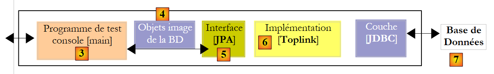 |
Il progetto Eclipse con Toplink è una copia del progetto Eclipse con Hibernate:
 |
I codici Java sono identici a quelli del precedente progetto Hibernate, salvo alcuni dettagli che tratteremo in seguito. L'ambiente (librerie – persistence.xml – DBMS – cartelle conf, ddl – script ant) è quello descritto nel paragrafo 2.1.15.2. Il progetto Eclipse è presente ([3]) nella cartella degli esempi ([4]). Lo importeremo.
Il file <persistence.xml> [2] viene modificato in un punto, ovvero nelle entità dichiarate:
<!-- classi persistenti -->
<class>entites.Activite</class>
<class>entites.Adresse</class>
<class>entites.Personne</class>
<class>entites.PersonneActivite</class>
- righe 2-5: le quattro entità gestite
L'esecuzione di [InitDB] con SGBD e MySQL5 fornisce i seguenti risultati:
 |
In [1], l'output della console; in [2], le tabelle generate [jpa07_tl]; in [3], gli script generati SQL. Il loro contenuto è il seguente:
create.sql
CREATE TABLE jpa07_tl_activite (ID BIGINT NOT NULL, VERSION INTEGER NOT NULL, NOM VARCHAR(30) UNIQUE NOT NULL, PRIMARY KEY (ID))
CREATE TABLE jpa07_tl_adresse (ID BIGINT NOT NULL, ADR3 VARCHAR(30), CODEPOSTAL VARCHAR(5) NOT NULL, VERSION INTEGER NOT NULL, VILLE VARCHAR(20) NOT NULL, ADR2 VARCHAR(30), CEDEX VARCHAR(3), ADR1 VARCHAR(30) NOT NULL, PAYS VARCHAR(20) NOT NULL, PRIMARY KEY (ID))
CREATE TABLE jpa07_tl_personne_activite (PERSONNE_ID BIGINT NOT NULL, ACTIVITE_ID BIGINT NOT NULL, PRIMARY KEY (PERSONNE_ID, ACTIVITE_ID))
CREATE TABLE jpa07_tl_personne (ID BIGINT NOT NULL, DATENAISSANCE DATE NOT NULL, MARIE TINYINT(1) default 0 NOT NULL, NOM VARCHAR(30) UNIQUE NOT NULL, NBENFANTS INTEGER NOT NULL, VERSION INTEGER NOT NULL, PRENOM VARCHAR(30) NOT NULL, adresse_id BIGINT UNIQUE NOT NULL, PRIMARY KEY (ID))
ALTER TABLE jpa07_tl_personne_activite ADD CONSTRAINT FK_jpa07_tl_personne_activite_ACTIVITE_ID FOREIGN KEY (ACTIVITE_ID) REFERENCES jpa07_tl_activite (ID)
ALTER TABLE jpa07_tl_personne_activite ADD CONSTRAINT FK_jpa07_tl_personne_activite_PERSONNE_ID FOREIGN KEY (PERSONNE_ID) REFERENCES jpa07_tl_personne (ID)
ALTER TABLE jpa07_tl_personne ADD CONSTRAINT FK_jpa07_tl_personne_adresse_id FOREIGN KEY (adresse_id) REFERENCES jpa07_tl_adresse (ID)
CREATE TABLE SEQUENCE (SEQ_NAME VARCHAR(50) NOT NULL, SEQ_COUNT DECIMAL(38), PRIMARY KEY (SEQ_NAME))
INSERT INTO SEQUENCE(SEQ_NAME, SEQ_COUNT) values ('SEQ_GEN', 1)
L'esecuzione di [InitDB] e di [Main] avviene senza errori.
2.6. Esempio 6: relazione molti-a-molti con una tabella di join implicita
Riprendiamo l’esempio 4, ma ora lo trattiamo con una tabella di join implicita generata dallo stesso livello JPA.
2.6.1. Lo schema del database
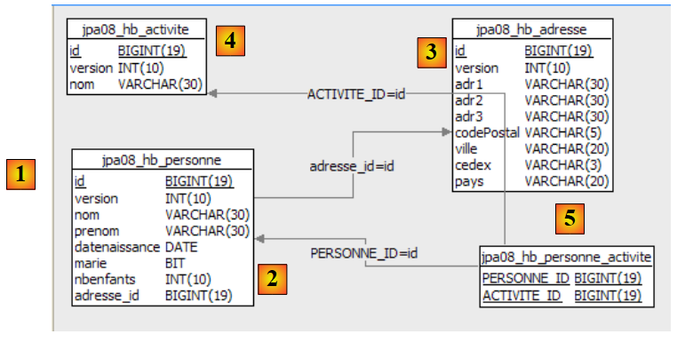 |
- in [1], il database MySQL5 - in [2]: la tabella [personne] – in [3]: la tabella associata [adresse] – in [4]: la tabella [activite] delle attività – in [5]: la tabella di join [personne_activite] che collega le persone alle attività.
2.6.2. Gli oggetti @Entity che rappresentano il database
Le tabelle precedenti saranno rappresentate dai seguenti @Entity:
- l'@Entity Personne rappresenterà la tabella [personne]
- l'@Entity Adresse rappresenterà la tabella [adresse]
- l'@Entity Activite rappresenterà la tabella [activite]
- la tabella [personne_activite] non è più rappresentata da un @Entity
Le relazioni tra queste entità sono le seguenti:
- una relazione uno-a-uno collega l’entità Personne all’entità Adresse: una persona p ha un indirizzo a. L'entità Personne, che detiene la chiave esterna, avrà la relazione principale, mentre l'entità Adresse avrà la relazione inversa.
- Una relazione molti-a-molti collega le entità Personne e Activite: una persona svolge diverse attività e un'attività è svolta da più persone. Questa relazione sarà concretizzata da un'annotazione @ManyToMany in ciascuna delle due entità, una delle quali sarà dichiarata inversa rispetto all'altra.
L'@Entity Personne è la seguente:
@Entity
@Table(name = "jpa08_hb_personne")
public class Personne implements Serializable {
@Id
@Column(nullable = false)
@GeneratedValue(strategy = GenerationType.AUTO)
// toplink sqlserver :@GeneratedValue(strategy = GenerationType.IDENTITY)
private Long id;
@Column(nullable = false)
@Version
private int version;
@Column(length = 30, nullable = false, unique = true)
private String nom;
@Column(length = 30, nullable = false)
private String prenom;
@Column(nullable = false)
@Temporal(TemporalType.DATE)
private Date datenaissance;
@Column(nullable = false)
private boolean marie;
@Column(nullable = false)
private int nbenfants;
// relazione principale Persona (one) -> Indirizzo (one)
// implementata tramite la chiave esterna Persona (adresse_id) -> Indirizzo
// cascata inserimento Persona -> inserimento Indirizzo
// aggiornamento a cascata Persona -> aggiornamento Indirizzo
// cascata eliminazione Persona -> eliminazione Indirizzo
// una Persona deve avere 1 Indirizzo (nullable=false)
// 1 Indirizzo appartiene a una sola persona (unico=vero)
@OneToOne(cascade = CascadeType.ALL)
@JoinColumn(name = "adresse_id", unique = true, nullable = false)
private Adresse adresse;
// relazione Persona (molte) -> Attività (molte) tramite una tabella di join personne_activite
// personne_activite(PERSONNE_ID) è una chiave esterna su Persona(id)
// personne_activite(ACTIVITE_ID) è una chiave estranea su Attività(id)
// cascade=CascadeType.PERSIST: la persistenza di una persona comporta quella delle sue attività
@ManyToMany(cascade={CascadeType.PERSIST})
@JoinTable(name="jpa08_hb_personne_activite",joinColumns = @JoinColumn(name = "PERSONNE_ID"), inverseJoinColumns = @JoinColumn(name = "ACTIVITE_ID"))
private Set<Activite> activites = new HashSet<Activite>();
// costruttori
public Personne() {
}
Commentiamo solo la relazione @ManyToMany delle righe 46-48 che collega l’@Entity Personne all’@Entity Activite:
- riga 48: una persona ha delle attività. Il campo «activites» le rappresenterà. Nella versione precedente, il tipo degli elementi dell’insieme activites era PersonneActivite. Qui è Activite. Si accede quindi direttamente alle attività di una persona, mentre nella versione precedente era necessario passare attraverso l’entità intermedia PersonneActivite.
- riga 46: la relazione che collega l'@Entity Personne che stiamo esaminando all'@Entity Activite dell'insieme activites della riga 48 è di tipo molti-a-molti (ManyToMany):
- una persona (One) svolge diverse attività (Many)
- un’attività (One) è svolta da più persone (Many)
- In definitiva, le @Entity Personne e Activite sono collegate da una relazione ManyToMany. Come nella relazione OneToOne, anche in questa relazione si riscontra una simmetria tra le entità. È possibile scegliere liberamente quale @Entity avrà la relazione principale e quale quella inversa. In questo caso, decidiamo che l'@Entity Personne avrà la relazione principale.
- Come abbiamo visto nell’esempio precedente, la relazione @ManyToMany richiede una tabella di join. Mentre in precedenza l’avevamo definita utilizzando un’@Entity, in questo caso la tabella di join è definita tramite l’annotazione @JoinTable alla riga 47.
- L'attributo name assegna un nome alla tabella.
- La tabella di join è costituita dalle chiavi esterne presenti nelle tabelle che essa unisce. In questo caso, sono presenti due chiavi esterne: una sulla tabella [personne], l’altra sulla tabella [activite]. Queste colonne di chiave esterna sono definite dagli attributi joinColumns e inverseJoinColumns.
- L'annotazione @JoinColumn dell'attributo joinColumns definisce la chiave esterna sulla tabella dell'@Entity che detiene la relazione principale @ManyToMany, in questo caso la tabella [personne]. Questa colonna chiave esterna si chiamerà PERSONNE_ID.
- L'annotazione @JoinColumn dell'attributo inverseJoinColumns definisce la chiave esterna nella tabella dell'@Entity che contiene la relazione inversa @ManyToMany, in questo caso la tabella [activite]. Questa colonna chiave esterna si chiamerà ACTIVITE_ID.
L'@Entity Adresse è la seguente:
@Entity
@Table(name = "jpa07_hb_adresse")
public class Adresse implements Serializable {
// campi
@Id
@Column(nullable = false)
@GeneratedValue(strategy = GenerationType.AUTO)
private Long id;
@Column(nullable = false)
@Version
private int version;
@Column(length = 30, nullable = false)
private String adr1;
@Column(length = 30)
private String adr2;
@Column(length = 30)
private String adr3;
@Column(length = 5, nullable = false)
private String codePostal;
@Column(length = 20, nullable = false)
private String ville;
@Column(length = 3)
private String cedex;
@Column(length = 20, nullable = false)
private String pays;
@OneToOne(mappedBy = "adresse")
private Personne personne;
- righe 28-29: la relazione @OneToOne è l'inversa della relazione @OneToOne e rimanda all'@Entity Personne (righe 37-38 di Personne).
L'@Entity Activite è la seguente
@Entity
@Table(name = "jpa08_hb_activite")
public class Activite implements Serializable {
// campi
@Id()
@Column(nullable = false)
@GeneratedValue(strategy = GenerationType.AUTO)
// toplink sqlserver: @GeneratedValue(strategy = GenerationType.IDENTITY)
private Long id;
@Column(nullable = false)
@Version
private int version;
@Column(length = 30, nullable = false, unique = true)
private String nom;
// relazione inversa Attività -> Persona
@ManyToMany(mappedBy = "activites")
private Set<Personne> personnes = new HashSet<Personne>();
...
- righe 20-21: la relazione molti-a-molti che collega l'@Entity Activite all'@Entity Personne. Questa relazione è già stata definita nell'@Entity Personne. Ci si limita quindi qui a specificare che la relazione è l'inversa (mappedBy) della relazione @ManyToMany esistente sul campo «activites» (mappedBy = «activites») dell'@Entità Personne.
- Ricordiamo che una relazione inversa è sempre facoltativa. In questo caso, la utilizziamo per ottenere le persone che praticano l’attività corrente. È l’insieme Set<Persona> persone che consentirà di ottenerle. La modalità di caricamento delle dipendenze Personne dell’@Entity Activite non è specificata. Non l’avevamo specificata nemmeno nell’esempio precedente. Per impostazione predefinita, questa modalità è fetch=FetchType.LAZY.
Abbiamo completato la descrizione delle entità del database. È stata più semplice rispetto al caso in cui la tabella di join [personne_activite] fosse una tabella esplicita. Questa soluzione più semplice può presentare degli svantaggi nel corso del tempo: non consente di aggiungere colonne alla tabella di join. Ciò potrebbe tuttavia rivelarsi necessario per soddisfare nuove esigenze, ad esempio aggiungere alla tabella [personne_activite] una colonna che indichi la data di iscrizione della persona all’attività.
2.6.3. Il progetto Eclipse / Hibernate
L’implementazione JPA qui utilizzata è quella di Hibernate. Il progetto Eclipse dei test è il seguente:
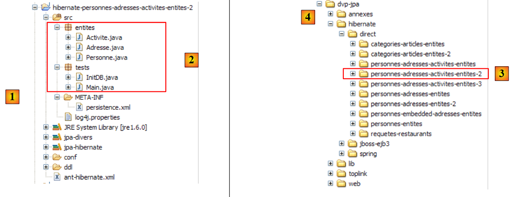 |
In [1] si trova il progetto Eclipse, mentre in [2] il codice Java. Il progetto è presente in [3] nella cartella degli esempi [4]. Lo importeremo.
2.6.4. Generazione del file DDL dal database
Seguendo le istruzioni del paragrafo 2.1.7, il DDL ottenuto per il SGBD MySQL5 è il seguente:
alter table jpa08_hb_personne
drop
foreign key FKA44B1E555FE379D0;
alter table jpa08_hb_personne_activite
drop
foreign key FK5A6A55A5CD852024;
alter table jpa08_hb_personne_activite
drop
foreign key FK5A6A55A568C7A284;
drop table if exists jpa08_hb_activite;
drop table if exists jpa08_hb_adresse;
drop table if exists jpa08_hb_personne;
drop table if exists jpa08_hb_personne_activite;
create table jpa08_hb_activite (
id bigint not null auto_increment,
version integer not null,
nom varchar(30) not null unique,
primary key (id)
) ENGINE=InnoDB;
create table jpa08_hb_adresse (
id bigint not null auto_increment,
version integer not null,
adr1 varchar(30) not null,
adr2 varchar(30),
adr3 varchar(30),
codePostal varchar(5) not null,
ville varchar(20) not null,
cedex varchar(3),
pays varchar(20) not null,
primary key (id)
) ENGINE=InnoDB;
create table jpa08_hb_personne (
id bigint not null auto_increment,
version integer not null,
nom varchar(30) not null unique,
prenom varchar(30) not null,
datenaissance date not null,
marie bit not null,
nbenfants integer not null,
adresse_id bigint not null unique,
primary key (id)
) ENGINE=InnoDB;
create table jpa08_hb_personne_activite (
PERSONNE_ID bigint not null,
ACTIVITE_ID bigint not null,
primary key (PERSONNE_ID, ACTIVITE_ID)
) ENGINE=InnoDB;
alter table jpa08_hb_personne
add index FKA44B1E555FE379D0 (adresse_id),
add constraint FKA44B1E555FE379D0
foreign key (adresse_id)
references jpa08_hb_adresse (id);
alter table jpa08_hb_personne_activite
add index FK5A6A55A5CD852024 (ACTIVITE_ID),
add constraint FK5A6A55A5CD852024
foreign key (ACTIVITE_ID)
references jpa08_hb_activite (id);
alter table jpa08_hb_personne_activite
add index FK5A6A55A568C7A284 (PERSONNE_ID),
add constraint FK5A6A55A568C7A284
foreign key (PERSONNE_ID)
references jpa08_hb_personne (id);
Questo codice DDL è analogo a quello ottenuto con la tabella di join esplicita e corrisponde allo schema già presentato:
 |
2.6.5. InitDB
Non ci soffermeremo molto sulla classe [InitDB], identica alla versione precedente e che fornisce gli stessi risultati. Ci limiteremo a soffermarci sul codice seguente, che mostra la giunzione tra Personne e Activite:
// visualizzazione persone/attività
System.out.println("[personnes/activites]");
Iterator iterator = em.createQuery("select p.id,a.id from Personne p join p.activites a").getResultList().iterator();
while (iterator.hasNext()) {
Object[] row = (Object[]) iterator.next();
System.out.format("[%d,%d]%n", (Long) row[0], (Long) row[1]);
}
- riga 3: il comando JPQL che esegue la join. Il risultato di select restituisce gli identificatori delle entità Personne e Activite collegate tra loro dalla tabella di join. L'elenco restituito da select è costituito da righe contenenti due oggetti di tipo Long. Per scorrere questo elenco, la riga 3 richiede un oggetto Iterator presente nell'elenco.
- righe 4-7: utilizzando l’oggetto di tipo Iterator precedente, si scorre l’elenco.
- riga 5: ogni elemento dell'elenco è un array contenente una riga risultante dal select
- riga 6: si recuperano gli elementi della riga corrente risultante da select apportando le modifiche di tipo adeguate.
Il risultato di [InitDB] è il seguente:
2.6.6. Main
La classe [Main] esegue una serie di test, alcuni dei quali esamineremo.
2.6.6.1. Test3
Questo test è il seguente:
// eliminazione attività act1
public static void test3() {
// contesto di persistenza
EntityManager em = getEntityManager();
// inizio transazione
EntityTransaction tx = em.getTransaction();
tx.begin();
// eliminazione dell'attività act1 da p2
p2.getActivites().remove(act1);
// si rimuove act1 dal contesto di persistenza
em.remove(act1);
// fine transazioni
tx.commit();
// vengono visualizzate le nuove tabelle
dumpPersonne();
dumpActivite();
dumpAdresse();
dumpPersonne_Activite();
}
- riga 11: l'attività act1 viene rimossa dal contesto di persistenza
- riga 9: l'attività act1 fa parte delle attività dell'unica persona rimasta nel contesto, la persona p2. La riga 9 rimuove l'attività act1 dalle attività della persona p2. Lo facciamo per mantenere coerente il contesto di persistenza, poiché lo conserviamo per il seguito.
I risultati sono i seguenti:
- l’attività act1, presente alla riga 26 in test2, è scomparsa dalle attività di test3 (righe 40-41)
- la persona p2 aveva in test2 l’attività act1 (riga 33). Al termine di test3, non la possiede più (riga 47)
2.6.6.2. Test6
Questo test è il seguente:
// modifica delle attività di una persona
public static void test6() {
// contesto di persistenza
EntityManager em = getNewEntityManager();
// inizio transazione
EntityTransaction tx = em.getTransaction();
tx.begin();
// si recupera la persona p2
p2 = em.find(Personne.class, p2.getId());
// si recupera l'attività act2
act2 = em.find(Activite.class, act2.getId());
// p2 svolge ormai solo l'attività act2
p2.getActivites().clear();
p2.getActivites().add(act2);
// fine transazione
tx.commit();
// vengono visualizzate le nuove tabelle
dumpPersonne();
dumpActivite();
dumpPersonne_Activite();
}
- riga 4: si utilizza un contesto di persistenza nuovo e vuoto
- riga 9: l’attività p2 viene trasferita dal database nel contesto di persistenza
- riga 11: l'attività act2 viene trasferita dal database nel contesto di persistenza
- riga 13: le attività della persona p2 (act3) vengono trasferite dal database nel contesto (fetchType.LAZY). È la chiamata [getActivites] a provocare questo caricamento. Si eliminano le attività di p2. Non si tratta di un’effettiva eliminazione delle attività (remove), ma di una modifica dello stato della persona p2. Non svolge più alcuna attività.
- riga 14: si aggiunge alla persona p2 l’attività act2. Alla fine, l’insieme delle nuove attività della persona p2 è l’insieme {act2}.
- riga 16: fine della transazione. La sincronizzazione esaminerà gli oggetti del contesto (p2, act2, act3) e rileverà che lo stato di p2 è cambiato. Verranno eseguiti gli ordini SQL che riflettono questa modifica nel database.
- righe 18-20: vengono visualizzate tutte le tabelle
I risultati sono i seguenti:
- Al termine del test 4, la persona p2 svolgeva l’attività act3 (riga 3).
- Al termine del test 6 (riga 19), la persona p2 non svolge più l'attività act3 (riga 3) e svolge invece l'attività act2.
2.6.7. Implementazione JPA / Toplink
Ora utilizziamo un'implementazione JPA / Toplink:
 |
Il progetto Eclipse con Toplink è una copia del progetto Eclipse con Hibernate:
 |
Il file <persistence.xml> [2] è stato modificato in un punto, quello relativo alle entità dichiarate:
<!-- provider -->
<provider>oracle.toplink.essentials.PersistenceProvider</provider>
<!-- classi persistenti -->
<class>entites.Activite</class>
<class>entites.Adresse</class>
<class>entites.Personne</class>
...
- righe 4-6: le entità gestite
L'esecuzione di [InitDB] con SGBD e MySQL5 fornisce i seguenti risultati:
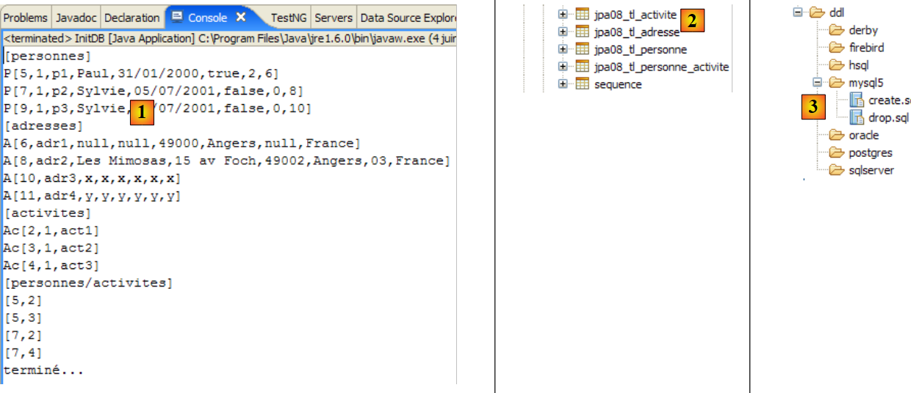 |
In [1], l'output della console; in [2], le tabelle generate [jpa07_tl]; in [3], gli script generati SQL. Il loro contenuto è il seguente:
create.sql
CREATE TABLE jpa08_tl_personne_activite (PERSONNE_ID BIGINT NOT NULL, ACTIVITE_ID BIGINT NOT NULL, PRIMARY KEY (PERSONNE_ID, ACTIVITE_ID))
CREATE TABLE jpa08_tl_activite (ID BIGINT NOT NULL, VERSION INTEGER NOT NULL, NOM VARCHAR(30) UNIQUE NOT NULL, PRIMARY KEY (ID))
CREATE TABLE jpa08_tl_personne (ID BIGINT NOT NULL, DATENAISSANCE DATE NOT NULL, MARIE TINYINT(1) default 0 NOT NULL, NOM VARCHAR(30) UNIQUE NOT NULL, NBENFANTS INTEGER NOT NULL, VERSION INTEGER NOT NULL, PRENOM VARCHAR(30) NOT NULL, adresse_id BIGINT UNIQUE NOT NULL, PRIMARY KEY (ID))
CREATE TABLE jpa08_tl_adresse (ID BIGINT NOT NULL, ADR3 VARCHAR(30), CODEPOSTAL VARCHAR(5) NOT NULL, VERSION INTEGER NOT NULL, VILLE VARCHAR(20) NOT NULL, ADR2 VARCHAR(30), CEDEX VARCHAR(3), ADR1 VARCHAR(30) NOT NULL, PAYS VARCHAR(20) NOT NULL, PRIMARY KEY (ID))
ALTER TABLE jpa08_tl_personne_activite ADD CONSTRAINT FK_jpa08_tl_personne_activite_ACTIVITE_ID FOREIGN KEY (ACTIVITE_ID) REFERENCES jpa08_tl_activite (ID)
ALTER TABLE jpa08_tl_personne_activite ADD CONSTRAINT FK_jpa08_tl_personne_activite_PERSONNE_ID FOREIGN KEY (PERSONNE_ID) REFERENCES jpa08_tl_personne (ID)
ALTER TABLE jpa08_tl_personne ADD CONSTRAINT FK_jpa08_tl_personne_adresse_id FOREIGN KEY (adresse_id) REFERENCES jpa08_tl_adresse (ID)
CREATE TABLE SEQUENCE (SEQ_NAME VARCHAR(50) NOT NULL, SEQ_COUNT DECIMAL(38), PRIMARY KEY (SEQ_NAME))
INSERT INTO SEQUENCE(SEQ_NAME, SEQ_COUNT) values ('SEQ_GEN', 1)
L'esecuzione di [InitDB] e quella di [Main] avvengono senza errori.
2.6.8. Il progetto Eclipse / Hibernate 2
Creiamo un progetto Eclipse derivato dal precedente tramite copia:
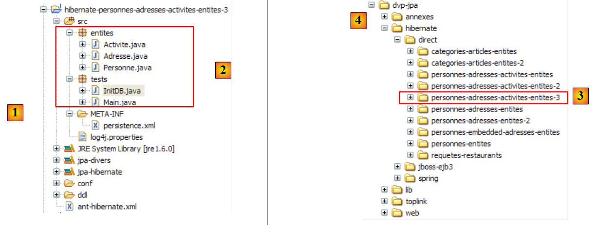 |
In [1] si trova il progetto Eclipse, mentre in [2] i codici Java. Il progetto è presente in [3] nella cartella degli esempi [4]. Lo importeremo.
Modifichiamo la relazione che collega Personne a Activité nel modo seguente:
Persona
// relazione Persona (molte) -> Attività (molte) tramite una tabella di join personne_activite
// personne_activite(PERSONNE_ID) è una chiave estranea su Persona(id)
// personne_activite(ACTIVITE_ID) è una chiave estranea su Attività(id)
// nessuna cascata sulle attività
// @ManyToMany(cascata={CascadeType.PERSIST})
@ManyToMany()
@JoinTable(name = "jpa09_hb_personne_activite", joinColumns = @JoinColumn(name = "PERSONNE_ID"), inverseJoinColumns = @JoinColumn(name = "ACTIVITE_ID"))
private Set<Activite> activites = new HashSet<Activite>();
- riga 6: la relazione principale @ManyToMany non presenta più la cascata di persistenza Persona -> Attività (cfr. versione precedente, riga 5)
Attività
// nessuna relazione inversa con Persona
// @ManyToMany(mappedBy = "attività")
// private Set<Persona> persone = new HashSet<Persona>();
- righe 2-3: la relazione inversa @ManyToMany Attività -> Persona è stata eliminata
Intendiamo dimostrare che gli attributi rimossi (cascata e relazione inversa) non sono indispensabili. La prima modifica introdotta da questa nuova configurazione si trova in [InitDB]:
// associazioni persone <--> attività
p1.getActivites().add(act1);
p1.getActivites().add(act2);
p2.getActivites().add(act1);
p2.getActivites().add(act3);
// persistenza delle attività
em.persist(act1);
em.persist(act2);
em.persist(act3);
// persistenza delle persone
em.persist(p1);
em.persist(p2);
em.persist(p3);
// e dell'indirizzo a4 non associato a una persona
em.persist(adr4);
- righe 7-9: siamo obbligati a inserire esplicitamente le attività da act1 a act3 nel contesto di persistenza. Quando esisteva la cascata di persistenza Persona -> Attività, le righe 11-13 conservavano sia le persone da p1 a p3 sia le attività di queste persone da act1 a act3.
Una seconda modifica è visibile in [Main]:
// recupero delle persone che svolgono una determinata attività
public static void test5() {
// contesto di persistenza
EntityManager em = getNewEntityManager();
// inizio transazione
EntityTransaction tx = em.getTransaction();
tx.begin();
System.out.format("1 - Personnes pratiquant l'activité act3 (JPQL) :%n");
// si richiedono le attività di p2
for (Object pa : em.createQuery("select p.nom from Personne p join p.activites a where a.nom='act3'").getResultList()) {
System.out.println(pa);
}
// fine transazione
tx.commit();
}
- righe 9-12: la query JPQL che recupera le persone che svolgono l’attività act3
- nella versione precedente, lo stesso risultato era stato ottenuto anche tramite la relazione inversa Attività -> Persona, ora eliminata:
// si passa attraverso la relazione inversa di act3
System.out.format("2 - Personnes pratiquant l'activité act3 (relation inverse) :%n");
act3 = em.find(Activite.class, act3.getId());
for (Personne p : act3.getPersonnes()) {
System.out.println(p.getNom());
}
2.6.9. Il progetto Eclipse / Toplink 2
Stiamo realizzando un progetto Eclipse derivato dal precedente progetto Eclipse / Toplink tramite copia:
 |
In [1] si trova il progetto Eclipse, mentre in [2] i codici Java. Il progetto è presente in [3] nella cartella degli esempi [4]. Lo importeremo.
I codici Java sono identici a quelli della versione Hibernate.
2.7. Esempio 7: utilizzo delle query denominate
Concludiamo questa lunga presentazione delle entità JPA, iniziata al paragrafo 2, con un ultimo esempio che illustra l’utilizzo di query JPQL esternalizzate in un file di configurazione. Questo esempio trae origine dalla seguente fonte:
[ref2]: "Getting started With JPA in Spring 2.0" di Mark Fisher all'URL
[http://blog.springframework.com/markf/archives/2006/05/30/getting-started-with-jpa-in-spring-20/].
2.7.1. Il database di esempio
Il database è il seguente:
 |
- in [1]: un elenco di ristoranti con nome e indirizzo
- in [2]: la tabella degli indirizzi dei ristoranti, limitata al numero civico e al nome della via. Esiste una relazione uno-a-uno tra le tabelle restaurant e adresse: un ristorante ha un solo indirizzo.
- in [3]: una tabella dei piatti con il loro nome e un indicatore vero/falso che specifica se il piatto è vegetariano o meno
- in [4]: la tabella di join ristoranti/piatti: un ristorante serve più piatti e lo stesso piatto può essere servito da più ristoranti. Esiste una relazione molti-a-molti tra le tabelle restaurant e plat.
2.7.2. Gli oggetti @Entity che rappresentano il database
Le tabelle precedenti saranno rappresentate dalle seguenti @Entity:
- l'@Entity Restaurant rappresenterà la tabella [restaurant]
- l’@Entity Adresse rappresenterà la tabella [adresse]
- l'@Entity Plat rappresenterà la tabella [plat]
Le relazioni tra queste entità sono le seguenti:
- una relazione uno-a-uno collega l’entità Restaurant all’entità Adresse: un ristorante r ha un indirizzo a. L'entità Restaurant, che detiene la chiave esterna, avrà la relazione principale. L'entità Adresse non avrà una relazione inversa.
- Una relazione molti-a-molti collega le entità Restaurant e Plat: un ristorante serve più piatti e lo stesso piatto può essere servito da più ristoranti. Questa relazione sarà rappresentata da un'annotazione @ManyToMany nell'entità Restaurant. L'entità Plat non avrà una relazione inversa.
L'@Entity Restaurant è la seguente:
package entites;
...
@Entity
@Table(name = "jpa10_hb_restaurant")
public class Restaurant implements java.io.Serializable {
private static final long serialVersionUID = 1L;
@Id
@GeneratedValue(strategy = GenerationType.AUTO)
private long id;
@Column(unique = true, length = 30, nullable = false)
private String nom;
@OneToOne(cascade = CascadeType.ALL)
private Adresse adresse;
@ManyToMany(cascade = { CascadeType.PERSIST, CascadeType.MERGE })
@JoinTable(name = "jpa10_hb_restaurant_plat", inverseJoinColumns = @JoinColumn(name = "plat_id"))
private Set<Plat> plats = new HashSet<Plat>();
// costruttori
public Restaurant() {
}
public Restaurant(String name, Adresse address, Set<Plat> entrees) {
...
}
// getter e setter
...
// toString
public String toString() {
String signature = "R[" + getNom() + "," + getAdresse();
for (Plat e : getPlats()) {
signature += "," + e;
}
return signature + "]";
}
}
- riga 17: la relazione uno-a-uno che l’entità Restaurant ha con l’entità Adresse. Tutte le operazioni di persistenza su un ristorante vengono propagate al suo indirizzo.
- riga 20: la relazione che collega l'@Entity Restaurant all'@Entity Plat dell'insieme plats della riga 22 è di tipo molti-a-molti (ManyToMany):
- un ristorante (One) ha più piatti (Many)
- un piatto (One) può essere servito da più ristoranti (Many)
- in definitiva, le @Entity Restaurant e Plat sono collegate da una relazione ManyToMany. Decidiamo che l'@Entity Restaurant avrà la relazione principale e che l'@Entity Plat non avrà una relazione inversa.
- La relazione @ManyToMany richiede una tabella di join. Questa viene definita tramite l'annotazione @JoinTable alla riga 47.
- L'attributo name assegna un nome alla tabella.
- La tabella di join è costituita dalle chiavi esterne delle tabelle che unisce. In questo caso, sono presenti due chiavi esterne: una sulla tabella [restaurant], l’altra sulla tabella [plat]. Queste colonne di chiave esterna sono definite dagli attributi joinColumns e inverseJoinColumns.
- L'attributo joinColumns definisce la chiave esterna nella tabella dell'@Entity che detiene la relazione principale @ManyToMany, in questo caso la tabella [restaurant]. L'attributo joinColumns in questo caso è assente. JPA ha un valore predefinito in questo caso: [table]_[clé_primaire_de_table], in questo caso [jpa10_hb_restaurant_id].
- L'annotazione @JoinColumn dell'attributo inverseJoinColumns definisce la chiave esterna sulla tabella dell'@Entity che contiene la relazione inversa @ManyToMany, in questo caso la tabella [plat]. Questa colonna chiave esterna si chiamerà plat_id.
L'@Entity Adresse è la seguente:
package entites;
...
@Entity
@Table(name="jpa10_hb_adresse")
public class Adresse implements java.io.Serializable {
@Id
@GeneratedValue(strategy = GenerationType.AUTO)
private long id;
@Column(name = "NUMERO_RUE")
private int numeroRue;
@Column(name = "NOM_RUE", length=30, nullable=false)
private String nomRue;
// getter e setter
...
// costruttori
public Adresse(int streetNumber, String streetName){
...
}
public Adresse(){
}
// toString
public String toString(){
return "A["+getNumeroRue()+","+getNomRue()+"]";
}
}
- L'@Entity Adresse è un'entità senza relazioni dirette con le altre entità. Può essere salvata solo tramite un'entità Restaurant.
- Un indirizzo è definito da un nome di via (riga 16) e da un numero civico (riga 13).
L'@Entity Plat è la seguente
package entites;
...
@Entity
@Table(name="jpa10_hb_plat")
public class Plat implements java.io.Serializable {
@Id
@GeneratedValue(strategy = GenerationType.AUTO)
private long id;
@Column(unique=true, length=50, nullable=false)
private String nom;
private boolean vegetarien;
// costruttori
public Plat() {
}
public Plat(String name, boolean vegetarian) {
...
}
// getter e setter
...
// toString
public String toString() {
return "E[" + getNom() + "," + isVegetarien() + "]";
}
}
- L'@Entity Plat è un'entità senza relazione diretta con le altre entità. Può essere salvata solo tramite l'entità Restaurant.
- Un piatto è definito da un nome (riga 12) e da un tipo (vegetariano o meno) (riga 14).
2.7.3. Il progetto Eclipse / Hibernate
L'implementazione JPA qui utilizzata è quella di Hibernate. Il progetto Eclipse dei test è il seguente:
 |
In [1] si trova il progetto Eclipse, in [2] i codici Java e in JPA la configurazione del livello. Si noti la presenza di un file [orm.xml] che non è mai stato incontrato prima. Il progetto è presente in [3] nella cartella degli esempi [4]. Lo importeremo.
2.7.4. Generazione del file DDL dal database
Seguendo le istruzioni del paragrafo 2.1.7, il file DDL ottenuto per i file SGBD e MySQL5 è il seguente:
alter table jpa10_hb_restaurant
drop
foreign key FK3E8E4F5D5FE379D0;
alter table jpa10_hb_restaurant_plat
drop
foreign key FK1D2D06D11F0F78A4;
alter table jpa10_hb_restaurant_plat
drop
foreign key FK1D2D06D1AFAC3E44;
drop table if exists jpa10_hb_adresse;
drop table if exists jpa10_hb_plat;
drop table if exists jpa10_hb_restaurant;
drop table if exists jpa10_hb_restaurant_plat;
create table jpa10_hb_adresse (
id bigint not null auto_increment,
NUMERO_RUE integer,
NOM_RUE varchar(30) not null,
primary key (id)
) ENGINE=InnoDB;
create table jpa10_hb_plat (
id bigint not null auto_increment,
nom varchar(50) not null unique,
vegetarien bit not null,
primary key (id)
) ENGINE=InnoDB;
create table jpa10_hb_restaurant (
id bigint not null auto_increment,
nom varchar(30) not null unique,
adresse_id bigint,
primary key (id)
) ENGINE=InnoDB;
create table jpa10_hb_restaurant_plat (
jpa10_hb_restaurant_id bigint not null,
plat_id bigint not null,
primary key (jpa10_hb_restaurant_id, plat_id)
) ENGINE=InnoDB;
alter table jpa10_hb_restaurant
add index FK3E8E4F5D5FE379D0 (adresse_id),
add constraint FK3E8E4F5D5FE379D0
foreign key (adresse_id)
references jpa10_hb_adresse (id);
alter table jpa10_hb_restaurant_plat
add index FK1D2D06D11F0F78A4 (plat_id),
add constraint FK1D2D06D11F0F78A4
foreign key (plat_id)
references jpa10_hb_plat (id);
alter table jpa10_hb_restaurant_plat
add index FK1D2D06D1AFAC3E44 (jpa10_hb_restaurant_id),
add constraint FK1D2D06D1AFAC3E44
foreign key (jpa10_hb_restaurant_id)
references jpa10_hb_restaurant (id);
- righe 21-26: la tabella [adresse]
- righe 28-33: la tabella [plat]
- righe 35-40: la tabella [restaurant]
- righe 42-46: la tabella di join [restaurant_plat]. Si noti la chiave composita (riga 45)
- righe 48-52: la chiave esterna dalla tabella [restaurant] alla tabella [adresse]
- righe 54-58: la chiave esterna dalla tabella [restaurant_plat] alla tabella [plat]
- righe 60-64: la chiave esterna dalla tabella [restaurant_plat] alla tabella [restaurant]
Questo DDL corrisponde allo schema già presentato:
 |
Nella vista SQL Explorer, il database si presenta come segue:
 |
- in [1]: le 4 tabelle del database
- in [2]: gli indirizzi
- in [3]: i piatti
- in [4]: i ristoranti. [adresse_id] fa riferimento agli indirizzi di [2].
- in [5]: la tabella di join [restaurant,plat]. [jpa10_hb_restaurant_id] fa riferimento ai ristoranti di [4] e [plat_id] ai piatti di [3]. Pertanto, [1,1] significa che il ristorante "Burger Barn" serve il piatto "CheeseBurger".
Per ottenere i dati sopra riportati, è stato eseguito il programma [QueryDB] del progetto Eclipse.
2.7.5. Richieste JPQL con una console Hibernate
Creiamo una console Hibernate collegata al precedente progetto Eclipse. Seguiremo la procedura già illustrata due volte, in particolare al paragrafo 2.1.12.
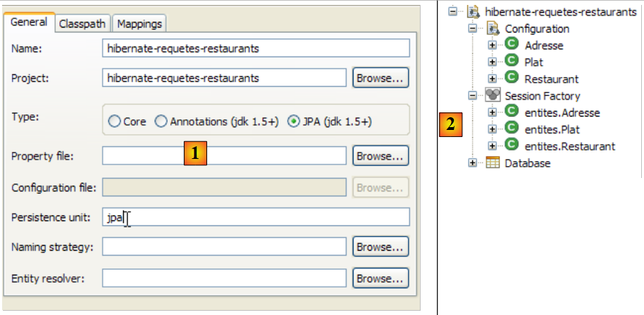 |
- in [1] e [2]: la configurazione della console Hibernate
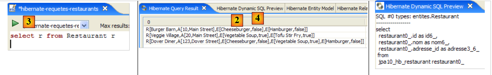 |
- in [3]: una query JPQL e in [4] il risultato.
- in [5]: l’ordine equivalente SQL
Presentiamo ora una serie di query JPQL. Il lettore è invitato a provarle e a scoprire l'ordine SQL generato da Hibernate per eseguirle.
Ottenere tutti i ristoranti con i relativi piatti:
 |  |
Ottenere i ristoranti che servono almeno un piatto vegetariano:
 |  |
Ottenere i nomi dei ristoranti che servono solo piatti vegetariani:
 |  |
Ottenere i ristoranti che servono hamburger:
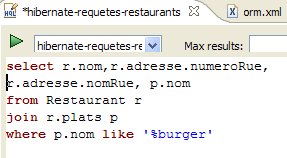 |  |
2.7.6. QueryDB
Passiamo ora al programma [QueryDB] del progetto Eclipse che:
- popola il database
- e invia ad essa una serie di richieste JPQL. Queste vengono registrate nel file [META-INF/orm.xml] del progetto Eclipse:
 |
Il file [orm.xml] può essere utilizzato per configurare il livello JPA al posto delle annotazioni Java. Ciò garantisce una maggiore flessibilità nella configurazione del livello JPA. È possibile modificarla senza ricompilare il codice Java. È possibile utilizzare entrambi i metodi contemporaneamente: annotazioni Java e file [orm.xml]. La configurazione JPA viene inizialmente effettuata con le annotazioni Java e successivamente con il file [orm.xml]. Se quindi si desidera modificare una configurazione creata tramite un'annotazione Java senza ricompilare, è sufficiente inserire tale configurazione nel file [orm.xml]. Sarà quest'ultimo ad avere la precedenza.
Nel nostro esempio, il file [orm.xml] viene utilizzato per salvare i testi delle query di JPQL. Il suo contenuto è il seguente:
<?xml version="1.0" encoding="UTF-8" ?>
<entity-mappings xmlns="http://java.sun.com/xml/ns/persistence/orm" xmlns:xsi="http://www.w3.org/2001/XMLSchema-instance"
xsi:schemaLocation="http://java.sun.com/xml/ns/persistence/orm http://java.sun.com/xml/ns/persistence/orm_1_0.xsd" version="1.0">
<description>Restaurants</description>
<named-query name="supprimer le contenu de la table restaurant">
<query>delete from Restaurant</query>
</named-query>
<named-query name="supprimer le contenu de la table plat">
<query>delete from Plat</query>
</named-query>
<named-query name="obtenir tous les restaurants">
<query>select r from Restaurant r order by r.nom asc</query>
</named-query>
<named-query name="obtenir toutes les adresses">
<query>select a from Adresse a order by a.nomRue asc</query>
</named-query>
<named-query name="obtenir tous les plats">
<query>select p from Plat p order by p.nom asc</query>
</named-query>
<named-query name="obtenir tous les restaurants avec leurs plats">
<query>select r.nom,p.nom from Restaurant r join r.plats p</query>
</named-query>
<named-query name="obtenir les restaurants ayant au moins un plat vegetarien">
<query>select distinct r from Restaurant r join r.plats p where p.vegetarien=true</query>
</named-query>
<named-query name="obtenir les restaurants avec uniquement des plats vegetariens">
<query>
select distinct r1.nom from Restaurant r1 where not exists (select p1 from Restaurant r2 join r2.plats p1 where r2.id=r1.id and
p1.vegetarien=false)
</query>
</named-query>
<named-query name="obtenir les restaurants d'une certaine rue">
<query>select r from Restaurant r where r.adresse.nomRue=:nomRue</query>
</named-query>
<named-query name="obtenir les restaurants qui servent des burgers">
<query>select r.nom,r.adresse.numeroRue, r.adresse.nomRue, p.nom from Restaurant r join r.plats p where p.nom like '%burger'</query>
</named-query>
<named-query name="obtenir les plats du restaurant untel">
<query>select p.nom from Restaurant r join r.plats p where r.nom=:nomRestaurant</query>
</named-query>
</entity-mappings>
- la radice del file [orm.xml] è <entity-mappings> (riga 2).
- righe 5-7: le query JPQL specificate sono racchiuse nei tag <named-query name= "... ">testo</namedquery>.
- L'attributo name del tag è il nome della query.
- Il contenuto texte del tag è il testo della query.
QueryDB eseguirà le query precedenti. Il suo codice è il seguente:
package tests;
...
public class QueryDB {
// Contesto di persistenza
private static EntityManagerFactory emf = Persistence.createEntityManagerFactory("jpa");
private static EntityManager em = emf.createEntityManager();
public static void main(String[] args) {
// inizio transazione
EntityTransaction tx = em.getTransaction();
tx.begin();
// eliminare gli elementi dalla tabella [restaurant]
em.createNamedQuery("supprimer le contenu de la table restaurant").executeUpdate();
// eliminare gli elementi dalla tabella [plat]
em.createNamedQuery("supprimer le contenu de la table plat").executeUpdate();
// creazione di oggetti Address
Adresse adr1 = new Adresse(10, "Main Street");
Adresse adr2 = new Adresse(20, "Main Street");
Adresse adr3 = new Adresse(123, "Dover Street");
// Creazione di oggetti «Entree»
Plat ent1 = new Plat("Hamburger", false);
Plat ent2 = new Plat("Cheeseburger", false);
Plat ent3 = new Plat("Tofu Stir Fry", true);
Plat ent4 = new Plat("Vegetable Soup", true);
// creazione di oggetti Ristorante
Restaurant restaurant1 = new Restaurant();
restaurant1.setNom("Burger Barn");
restaurant1.setAdresse(adr1);
restaurant1.getPlats().add(ent1);
restaurant1.getPlats().add(ent2);
Restaurant restaurant2 = new Restaurant();
restaurant2.setNom("Veggie Village");
restaurant2.setAdresse(adr2);
restaurant2.getPlats().add(ent3);
restaurant2.getPlats().add(ent4);
Restaurant restaurant3 = new Restaurant();
restaurant3.setNom("Dover Diner");
restaurant3.setAdresse(adr3);
restaurant3.getPlats().add(ent1);
restaurant3.getPlats().add(ent2);
restaurant3.getPlats().add(ent4);
// persistenza degli oggetti Ristorante (e degli altri oggetti a cascata)
em.persist(restaurant1);
em.persist(restaurant2);
em.persist(restaurant3);
// fine transazione
tx.commit();
// dump del database
dumpDataBase();
// fine EntityManager
em.close();
// fine EntityManagerFactory
emf.close();
}
// visualizzazione del contenuto del database
@SuppressWarnings("unchecked")
private static void dumpDataBase() {
// test2
log("données de la base");
// inizio transazione
EntityTransaction tx = em.getTransaction();
tx.begin();
// visualizzazione ristoranti
log("[restaurants]");
for (Object restaurant : em.createNamedQuery("obtenir tous les restaurants").getResultList()) {
System.out.println(restaurant);
}
// visualizzazioni indirizzi
log("[adresses]");
for (Object adresse : em.createNamedQuery("obtenir toutes les adresses").getResultList()) {
System.out.println(adresse);
}
// visualizzazioni dei piatti
log("[plats]");
for (Object plat : em.createNamedQuery("obtenir tous les plats").getResultList()) {
System.out.println(plat);
}
// visualizzazioni collegamenti ristoranti <--> piatti
log("[restaurants/plats]");
Iterator record = em.createNamedQuery("obtenir tous les restaurants avec leurs plats").getResultList().iterator();
while (record.hasNext()) {
Object[] currentRecord = (Object[]) record.next();
System.out.format("[%s,%s]%n", currentRecord[0], currentRecord[1]);
}
log("[Liste des restaurants avec au moins un plat végétarien]");
for (Object r : em.createNamedQuery("obtenir les restaurants ayant au moins un plat vegetarien").getResultList()) {
System.out.println(r);
}
// query
log("[Liste des restaurants avec seulement des plats végétariens]");
for (Object r : em.createNamedQuery("obtenir les restaurants avec uniquement des plats vegetariens").getResultList()) {
System.out.println(r);
}
// query
log("[Liste des restaurants dans Dover Street]");
for (Object r : em.createNamedQuery("obtenir les restaurants d'une certaine rue").setParameter("nomRue", "Dover Street").getResultList()) {
System.out.println(r);
}
// query
log("[Liste des restaurants ayant un plat de type burger]");
record = em.createNamedQuery("obtenir les restaurants qui servent des burgers").getResultList().iterator();
while (record.hasNext()) {
Object[] currentRecord = (Object[]) record.next();
System.out.format("[%s,%d,%s,%s]%n", currentRecord[0], currentRecord[1], currentRecord[2], currentRecord[3]);
}
// query
log("[Plats de Veggie Village]");
for (Object r : em.createNamedQuery("obtenir les plats du restaurant untel").setParameter("nomRestaurant", "Veggie Village").getResultList()) {
System.out.println(r);
}
// fine transazione
tx.commit();
}
// log
private static void log(String message) {
System.out.println(" -----------" + message);
}
}
Il risultato dell'esecuzione di [QueryDB] è il seguente:
Lasciamo al lettore il compito di collegare il codice ai risultati. A tal fine, consigliamo di eseguire le query JPQL nella console Hibernate e di esaminare il codice SQL corrispondente.
2.7.7. Il progetto Eclipse / Toplink
Il lettore interessato troverà negli esempi scaricabili insieme a questo tutorial il progetto precedente implementato con Toplink:
 |
Il progetto Eclipse con Toplink è una copia del progetto Eclipse con Hibernate:
 |
Il file <persistence.xml> [2] dichiara le entità gestite:
<!-- provider -->
<provider>oracle.toplink.essentials.PersistenceProvider</provider>
<!-- classi persistenti -->
<class>entites.Restaurant</class>
<class>entites.Adresse</class>
<class>entites.Plat</class>
...
- righe 4-6: le entità gestite
Le query JPQL salvate in [orm.xml] vengono eseguite correttamente da Toplink. A tal fine, nel progetto precedente ci si era assicurati di non utilizzare le query HQL (Hibernate Query Language), che costituiscono di fatto un superset di JPQL e la cui sintassi, in alcuni casi, non è accettata da JPQL.
2.8. Conclusion
Concludiamo qui il nostro studio sulle entità JPA. È stato un percorso lungo e tuttavia alcuni aspetti importanti (per lo sviluppatore esperto) non sono stati trattati. Ancora una volta, si consiglia di leggere un libro di riferimento come quello utilizzato per questo tutorial:
[ref1]: Java Persistence with Hibernate, di Christian Bauer e Gavin King, edito da Manning.